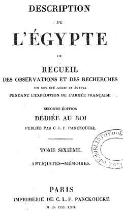
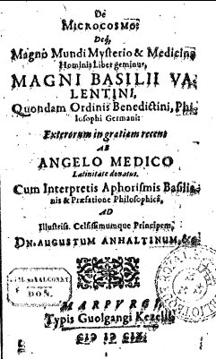
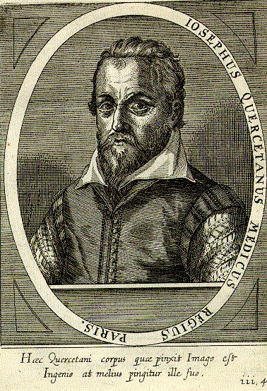
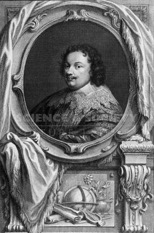
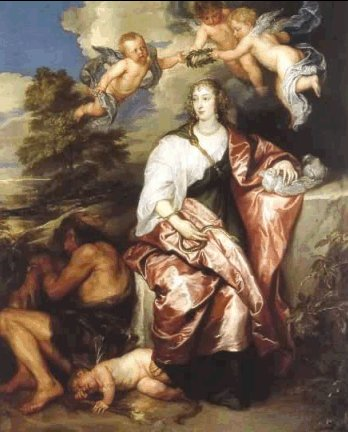

6ème partie


revu
le 4 décembre 2004
Plan : Berthelot : Sur
les traductions latines des ouvrages attribués aux Arabes : PREMIER ARTICLE
: I. l'alchimie dans
Vincent de
Beauvais - II. l'alchimie
dans Albert Le Grand - DEUXIÈME ARTICLE
: III. l'alchimie d'Avicenne
- IV. l'alchimie de Razès
- TROISIEME ARTICLE :
IV. Geber
et ses oeuvres alchimiques - Annales
de Physique et Chimie, févier 1891 : SUR LES ALLIAGES D'OR ET
D'ARGENT ET SUR LES RECETTES DES ORFÈVRES AU TEMPS DE L'EMPIRE
ROMAIN ET DU MOYEN ÂGE -
Rozières
: sur les vases murrhins
qu'on apportait jadis d'Egypte... : I. notice
historique sur les vases - II. Examen des opinions
émises
sur leur nature - III. Si la matière
murrhine existe
encore dans la nature - IV. Caractères
et natures du
murrhin : volume - dureté - contexture
-
éclat - couleurs
- transparence - jeu de lumières - V. du murrhin artificiel - CUVIER : Histoire des sciences
Naturelles, dixième leçon - onzième
leçon
[considérations sur : Basile Valentin
- Cardan - Croll - Kenelm Digby - Libavius - Paracelse - Quercetanus
(Duschene) - Reuchlein - Jean
Rey - Tritheim - Van
Helmont] -
Notes : voir l'article de Berthelot sur les alliages d'or et d'argent au sujet - en particulier - du corps de la magnésie et du verre malléable [références] -
SUR LES TRADUCTIONS LATINES DES OUVRAGES ALCHIMIQUES ATTRIBUÉS AUX ARABES, par M. Berthelot.
PREMIER ARTICLE.
La transmission de la science antique au moyen âge latin, celle de la chimie en particulier, s'est faite par deux voies principales : la tradition des arts et métiers et la culture arabe. J'ai eu occasion de mettre la première en évidence, sous sa double face pratique et théorique, dans mes études sur les Compositiones, la Mappae clavicula [cf. Idée alchimique, I et II] et autres ouvrages analogues antérieurs à la tradition arabe, et qui font suite à celle des alchimistes grecs (Annales de chimie et de physique, 6e série, t. XXII, p. 145 (1891); Revue scientifique (7 février 1891); Journal des Savants (mars 1891), p. 182). Je me propose d'examiner aujourd'hui les traductions latines, réelles ou prétendues telles, des ouvrages arabes consacrés à l'alchimie et d'en rechercher la date relative et l'authenticité. L'autorité de ces traductions, venues d'Espagne en général, a été considérable autrefois : c'est à elles que se rattachent les plus vieux alchimistes latins. Cependant aucun des textes originaux correspondants en arabe n'a été, retrouvé jusqu'à présent : ils ont péri, sans doute, lors de la destruction des bibliothèques des musulmans d'Espagne, et les ouvrages alchimiques arabes, en petit nombre, qui existent dans les bibliothèques de Paris, de Leyde, et ailleurs, ne répondent, autant qu'on peut le savoir par les personnes qui les ont étudiés jusqu'ici, à aucun des traités traduits en latin. Je donnerai plus loin des détails précis à cet égard. Il convient dès lors de recourir à l'examen direct de ces traductions. Parlons d'abord des noms des auteurs auxquels les ouvrages sont attribués, tels qu'Hermès, Ostanès, Platon, Aristote, Morienus, Geber, Rasés, Bubacar, Alpharabi, Avicenne, etc.; [cf. prima materia] ces noms sont connus, les uns par l'histoire littéraire de l'antiquité, les autres par les compilateurs et chroniqueurs arabes. Mais cela ne suffit certes pas pour regarder comme composés en fait par ces auteurs, ainsi qu'on l'a fait trop souvent, les traités en tête desquels leurs noms se trouvent inscrits. L'histoire littéraire, et celle des auteurs alchimiques en particulier, renferme trop de désignations pseudépigraphiques, frauduleuses ou sincères, pour qu'il soit permis d'accepter aveuglément ces désignations. Non seulement certaines, telles que celles d'Hermès et d'Ostanès, étaient mythiques dès l'antiquité; mais, à première vue, on reconnaît que les noms de Platon et d'Aristote n'ont été mis en tête d'ouvrages alchimiques arabes que pour en relever l'autorité, ou bien parce que ces ouvrages faisaient suite et commentaire à des livres authentiques, tels que les Météorologiques. Des remarques semblables s'appliquent aux auteurs arabes eux-mêmes, à Geber en particulier, qui ne parait être l'auteur d'aucun des traités latins mis sous son nom, traités dont l'origine arabe même semble controuvée, ainsi que j'ai déjà eu occasion de le dire en passant (Journal des Savants (août 1890), p. 515) et que je le développerai plus loin avec plus de détails. Après avoir cru, comme presque tout le monde, à leur authenticité, j'ai eu des doutes, dont l'éclaircissement a été l'une des origines de la présente étude, et j'ai été conduit à ranger les ouvrages latins de Geber dans la liste, si longue en alchimie, des pseudonymes, et à reporter vers le XIIIe siècle la date véritable de leur composition. Exposons la méthode suivie dans cette recherche. La première base certaine sur laquelle on puisse s'appuyer, c'est la date des manuscrits qui renferment les traductions latines, réelles ou supposées , des alchimistes arabes. Or les plus anciens ne paraissent pas remonter au delà de l'an 1300: c'est du moins le cas de ceux de la Bibliothèque nationale de Paris que j'ai eu occasion d'examiner(Journal des Savants, juin 1891, p. 371 et surtout p. 375-376; sur les manuscrits de Paris qui portent les numéros 6514 et 7156), et les catalogues des autres grandes bibliothèques d'Europe n'en signalent pas, je crois, de plus vieux. On trouve, d'ailleurs, dans les manuscrits latins de la Bibliothèque nationale, des traités portant les noms de la plupart des auteurs signalés plus haut, et le contenu de ces traités, à quelques variantes près, est— je l'ai vérifié— généralement le même que le contenu des traités qui figurent dans les grandes collections alchimiques, imprimées du XVIe au XVIIIe siècle et intitulées : Theatrum chemicum, Bibliotheca chemica, Artis chemicae principes, Artis auriferae, etc. [cf. bibliographie pour l'alchimie] On a donc là un premier terme fixe dans cette histoire difficile. Les traductions elles-mêmes, lorsqu'elles répondent réellement à des textes arabes, remontent à une époque antérieure à nos manuscrits actuels. En effet, quoique presque toutes soient anonymes, elles appartiennent à la même famille [Voir les indications individuelles auxquelles se réfère la note précédente] que celles des écrits arabes, médicaux, philosophiques et mathématiques, lesquels ont été traduits, comme on sait, aux XIIe et XIIIe siècles : on peut même relever la date précise de l'une des traductions alchimiques, faite par Robert Castrensis en 1182 [Journal des Savants, août 1890, p. 518]. La plupart de ces traductions ont été faites, d'ailleurs, en Espagne, sur des textes arabes, ou sur des textes hébreux, une partie de ceux-ci étant déjà traduits de l'arabe. Une autre limite pour la date de ces écrits (ou plutôt de ces traductions) peut être établie d'après les citations faites par des auteurs authentiques, tels que Albert le Grand, mort en 1280, et Vincent de Beauvais, dont l'encyclopédie (Speculum majus), ou tout au moins la partie relative aux sciences naturelles (Sp. naturale), a été écrite vers 1250, pendant le règne de saint Louis : j'examinerai tout à l'heure à ce point de vue les nombreuses citations d'auteurs et de doctrines alchimiques qui se trouvent dans la première partie du recueil intitulée Speculum naturale, lesquelles ont été textuellement reproduites dans une autre partie, le Speculum doctrinale. L'étude intrinsèque des textes latins qui sont présentés comme traduits de l'arabe et leur comparaison fournissent de nouvelles données. Elles peuvent être tirées, en effet, des noms et des textes, connus d'autre part, des auteurs cités, ainsi que des faits signalés par l'écrivain et des théories qu'il développe : indications dont le rapprochement permet souvent d'établir la filiation et la date relative des ouvrages. J'ai déjà montré dans le présent recueil (Journal des Savants, août 1890, p. 514, et septembre 1890, p. 573) quelque application de cette méthode, par laquelle on reconnaît notamment l'ancienneté des ouvrages intitulés Turba philosophorum et Rosinus (d'après une indication de M. Zotenberg, tirée d'un manuscrit arabe, ce nom, m'écrit-il, est probablement le même que celui de Zosime défiguré - il est cité par les alchimistes du XIV et du XV siècle. Michel Maier le cite dans l'Atalanta fugiens, aux emblèmes XLIII, XXXIV, XLVII. Salomon Trismosin y fait référence dans sa Toyson d'Or ; le pseudo Flamel en parle dans les Figures Hiéroglyphiques ; il semble y avoir aussi quelque rapport entre Rosinus et le Dialogue de Marie à Aros, ouvrage complexe. Dans un ouvrage assez lointain, l'Escalier des Sages, de Barent Coenders van Helpen, Rosinus est présent. ), ouvrages remplis de phrases et même de pages qui sont traduites littéralement (par l'intermédiaire des Arabes) des alchimistes grecs, ainsi que je l'ai découvert. Mais la plupart des écrits latins qui sont réputés traduits de l'arabe ne reproduisent pas des textes aussi précis; les réminiscences y sont attribuées aux « anciens philosophes » ; en outre elles sont de plus en plus vagues, c'est-à-dire éloignées de leurs origines. Par contre, dans ces derniers écrits, les procédés d'exposition deviennent plus systématiques, la composition est mieux ordonnée et plus conforme à ces méthodes logiques mises en honneur par la scolastique vers le XIIe et le XIIIe siècle. Ceci accuse évidemment une époque plus moderne, soit pour les auteurs réels de ces traités, souvent pseudépigraphiques, soit pour les traducteurs latins, lesquels ont d'ailleurs remanié plus ou moins profondément les ouvrages primitifs. Pour pousser à fond ce genre de comparaison, il serait nécessaire de posséder les œuvres mêmes des auteurs arabes, dans leur langue originale, ce qui n'existe aujourd'hui, ou du moins ce qui n'a été signalé pour aucune oeuvre alchimique traduite en latin; mais on peut les comparer du moins avec des ouvrages orientaux congénères. En poursuivant mes investigations dans cette direction, j'ai réussi à obtenir la traduction d'une alchimie syriaque, conservée au British Museum, traduction que M. Rubens Duval a bien voulu faire à mon intention et que j'imprime en ce moment à l'Imprimerie nationale, ainsi que la traduction de deux petits traités arabes, portant le nom de Geber, tirés des manuscrits de la Bibliothèque nationale de Paris et traduits également pour moi par M. Houdas. C'est avec cet ensemble de données que j'ai cru pouvoir aborder les problèmes difficiles que soulèvent les traductions latines d'alchimistes arabes faites au moyen âge. Sans prétendre les résoudre dans toute leur étendue; j'essayerai d'y fixer un certain nombre de points précis, destinés à servir de jalons. Je vais examiner d'abord les articles alchimiques contenus dans Vincent de Beauvais et dans Albert le Grand, puis je parlerai des traités attribués à Avicenne, à Razès, à Bubacar, et en dernier lieu à Geber.
II. - L'ALCHIMIE DANS VINCENT DE BEAUVAIS.
Vincent de Beauvais, [1, 2, 3, 4, 5, 6, 7, 8, 9, 10, 11, 12, 13, 14, 15] dans son encyclopédie qui porte le titre de Speculum majus, a consacré à l'étude des métaux et matières minérales un certain nombre de chapitres de la partie intitulée Speculum naturale. Le livre VIII, en particulier, est destiné presque entièrement à cette étude. L'alchimie, regardée alors comme une science, s'y trouve exposée dans une série de chapitres; chacun fait partie de l'histoire d'un métal ou d'un produit chimique spécial, ou bien encore expose une opération déterminée, tantôt réelle, telle que la calcination, tantôt chimérique, comme la teinture des métaux et la transmutation. [Rappelons que pour l'alchimiste, la teinture du métal est la substance obtenue par son ouverture, c'est-à-dire sa transformation en chaux : il n'y a là rien de chimérique ; la transmutation est évidemment une toute autre affaire, cf. Soufre] Au point de vue historique, qui nous préoccupe principalement, il convient de donner d'abord la liste des auteurs alchimiques cités par Vincent de Beauvais. Plusieurs sont anonymes, tels que L'Alchimiste, qui paraît aussi cité sous ce titre : La Doctrine d'alchimie; l'auteur appelé Philosophus, probablement synonyme du pseudo- Aristote; l'auteur du Livre de la nature des choses; celui du Livre des soixante-dix (chapitres). D'autres écrivains sont désignés nominativement, tels qu'Aristote et son livre des Météores (Météorologiques);. Rasés et son livre Des sels et des aluns; Averroès et son livre des Vapeurs; Avicenne et son Alchimie, intitulée De Anima. L'Alchimiste, ou La Doctrine d'alchimie, paraît être le titre d'un ouvrage général, connu au temps de Vincent de Beauvais, sinon contemporain, mais qui est perdu, ou du moins dont les manuscrits n'ont pas été signalés jusqu'ici. La théorie fondamentale qui y est exposée est la suivante (Sp. nat., 1. VIII, chap. LX) :
« Dans les entrailles de la terre, en raison de leur vertu minéralisante, sont engendrés les esprits [ce mot est appliqué à toute substance volatile fuyant le feu : ce qui comprenait, outre les quatre esprits minéraux, les produits tirés des plantes et animaux par la distillation, ainsi que l'auteur le dit formellement plus loin] et les corps (métalliques). Il y a quatre esprits : le mercure, le soufre, l'arsenic (sulfuré) et le sel ammoniac; et six corps : l'or, l'argent, le cuivre, l'étain, le plomb, le fer. Les deux premiers corps sont purs, les autres impurs. Le mercure pur et blanc, fixé par la vertu du soufre blanc, non corrosif, engendre dans les mines une matière que la fusion change en argent. Uni au soufre pur, clair, rouge, non corrosif, il produit l'or, etc. »
Suit la génération des autres métaux, que l'auteur envisage comme produits par un mercure et un soufre plus ou moins purs, et il ajoute :
« Ces opérations que la nature accomplit sur les minéraux, les alchimistes s'efforcent de les reproduire : c'est la matière de leur science » [voir Journal des Savants, février 1891, p. 130-132]
Une doctrine analogue, avec certaines variantes, se retrouve dans les divers auteurs cités par Vincent de Beauvais. Elle dérive de celle des alchimistes grecs; mais la génération des métaux [cf. le Bergbüchlein, avec une préface de Daubrée] par le mercure et le soufre n'avait pas été exposée par ces derniers sous une forme générale et méthodique, et il y a lieu de douter que cette théorie précise remonte au delà du XIIe siècle. Elle devint alors classique et universelle, et ce fut la base des expériences des gens qui prétendaient posséder l'art de fabriquer les métaux artificiellement. Mais presque aussitôt la réalité de cette opération, aussi bien que celle de la transmutation, souleva des doutes, inconnus des alchimistes grecs et syriaques, et dont le développement paraît répondre à une date historique déterminée ; car ils sont reproduits et discutés par la plupart des auteurs du XIIIe siècle. Citons à cet égard le passage suivant de Vincent de Beauvais (Sp. n., 1. VIII, ch. LXXXVI) :
« II paraît que par la dissolution dans l'eau (1), puis par la distillation (2), enfin par la solidification (3), on réduit les corps à leur matière première. Cependant on ne réussit pas à amener les métaux artificiels à l'identité avec les métaux naturels et à leur communiquer la même résistance à l'analyse (examinatio) par le feu. On ne réussit pas, avec l'argent changé en or par la projection de l'élixir rouge, à le rendre inaltérable aux agents qui brûlent l'argent et non l'or, tels que les céments et le soufre, employés pour essayer l'or. De même l'élixir projeté sur le cuivre pour le blanchir ne le défend pas contre les agents qui brûlent le cuivre et non l'argent, tels que le plomb, » etc.
[1.Ceci comprenait, dans l'idée de l'auteur, nos dissolutions chimiques par les acides, les alcalis, et même la formation des amalgames fusibles, au moyen du mercure, et celle des sulfures ou sulfarséniures fusibles, au moyen du soufre ou des sulfures d'arsenic, etc. - 2. Le mot distillation dans la langue alchimique signifie l'écoulement goutte à goutte, que cet écoulement résulte d'une évaporation, ou d'une filtration, ou même d'une simple fusion. 3. II faut entendre par ce mot toute opération qui change un corps volatil en un corps fixe, ou un corps fusible en un corps infusible : par exemple la calcination, le changement des métaux en oxydes ou en sulfures, etc. - on a une autre image du serpent qui se dévore lui-même : dissolution - solidification, en un processus cyclique ]
L'auteur du Spéculum naturale ajoute un peu plus loin :
« D'après ce qui précède, il paraît que l'alchimie est fausse jusqu'à un certain point. »
Toutefois il n'ose pas se prononcer absolument, disant encore :
« Cependant sa vérité a été prouvée par les anciens philosophes et par les opérateurs de notre temps. »
Ces doutes se retrouvent chez les meilleurs esprits au XIIIe siècle, tels qu'Albert le Grand et Roger Bacon. Citons encore la phrase suivante (chap. xc), qui rappelle la doctrine de Stahl sur les métaux, envisagés comme des combinaisons des chaux métalliques avec un principe combustible : [pensons encore à Lavoisier avec son principe de chaleur qu'il voyait encore mêlé aux métaux]
« Le feu, lorsqu'il calcine les métaux, sans les fondre, en brûle la partie la plus faible, c'est-à-dire la sulfuréité (partie sulfureuse ou combustible) et laisse intacte la partie la plus forte. »
La Doctrine d'alchimie et tous les auteurs cités par Vincent de Beauvais tournent dans un même cercle de doctrines et de faits; à peu près comme le font dans les temps modernes les écrivains scientifiques d'une époque déterminée. Il est dès lors facile, comme il sera dit plus loin, de tracer le tableau de ces faits et, par suite, de reconnaître si un ouvrage d'alchimie est postérieur au XIIIe siècle. On peut l'affirmer, par exemple, de tout ouvrage où les acides azotique, chlorhydrique, sulfurique, l'eau régale, etc., sont clairement définis et distingues : c'est là un critérium délicat, mais très solide. Quoi qu'il en soit, le livre de La Doctrine d'alchimie a disparu; sans doute parce que la substance en a passé dans les traités et manuels qui lui ont succédé dans les laboratoires, tels que l'Alchimie attribuée à Albert le Grand et les ouvrages congénères du XIVe siècle. Le traité De naturis rerum, cité par Vincent de Beauvais, porte un titre souvent reproduit au moyen âge, depuis Isidore de Séville; mais l'ouvrage même que cite Vincent de Beauvais paraît perdu : il renfermait des doctrines alchimiques ; il y était dit par exemple (Spec. nat., liv. VII, chap. LXXIX) que
« le verre renferme du mercure, parce qu'il reçoit la teinture ». [le verre chez l'alchimiste est le récepteur de la teinture ; du moins est-ce d'un verre particulier dont nous entendons parlé ; il faut se tourner du côté de la porcelaine de Réaumur et du moins n'est-ce là qu'une petite idée de ce qu'est réellement le vitrioleum olei. Quelque réincrudation serait ici d'une aide signalée.]
Le Livre des soixante-dix mérite une attention spéciale. Il existe à l'état d'extrait, dans le ms. 6514 de la Bibliothèque nationale, et sous une forme beaucoup plus développée, quoique mutilée, dans le ms. 156. J'en ai déjà parlé dans le présent recueil (Journal des Savants, juin 1891, p. 372.). Le Geber arabe avait composé sous le même titre un ouvrage, qu'il cite à plusieurs reprises dans les textes dont je donnerai tout à l'heure des extraits; mais l'opuscule que nous possédons paraît être différent de celui de l'auteur arabe. Donnons seulement d'après le Spec. nat. (1. VIII, ch. xciv) une phrase du livre latin, qui exprime une doctrine alchimique fort répandue au XIIIe siècle :
« Toute chose douée d'une qualité apparente possède une qualité occulte opposée, et réciproquement. Or le feu rend apparent ce qui est caché, et inversement. » [on a ainsi la définition d'un sel : acide + base, soit deux principes que tout oppose]
On lit pareillement dans le ms. 7156, au chapitre XXXII du Livre des soixante-dix (fol. -76 v°), les mots ut ponas occultant manifestum, suivis de toute une théorie de la constitution des métaux, fondée sur ces idées et sur leur composition radicale (radix) au moyen du froid et du chaud, du sec et de l'humide. [voyez notre humide radical métallique] La même doctrine est exprimée dans un passage du Philosophus (Sp. nat., 1. VIII, ch. Liv). Après avoir exposé comment le fer se mêle à l'or et ne peut plus en être séparé par fusion, ce qui est exact, il ajoute :
« Dans ses qualités apparentes (manifestum), le fer est chaud, sec, dur; dans sa constitution secrète [occultum), il possède les qualités opposées, la mollesse par exemple. Ainsi ce qui est, quant aux apparences, mercure, est fer dans son intimité, etc. Dès lors, en modifiant les qualités du mercure dans leurs proportions relatives, on peut obtenir soit du fer, soit de l'argent, soit de l'or. »
Dans un autre passage (chap. Lxxxv) de Vincent de Beauvais, on lit :
« Ce qui est extérieurement du cuivre est intérieurement de l'or et comme l'âme du métal. »
Le pseudo-Aristote, c'est-à-dire l'auteur qui a écrit le traité De Perfecto magisterio, développe les mêmes idées. Elle remontent d'ailleurs en principe aux alchimistes grecs.
«Transforme leur nature, car la nature est cachée à l'intérieur »;
c'est là un axiome attribué à Démocrite par Synesius (Coll. des alch. grecs, trad., p. 64. Voir aussi p. 138. - sur Synesius, cf. le Vrai Livre du Docte abbé Synesius, qui est évidemment un pseudépigraphe.). Ici donc, comme dans la plupart des cas, les gens du moyen âge n'ont fait que réduire en forme et systématiser les idées des philosophes et des savants de l'antiquité. Tout ceci mérite grande attention, si l'on veut entendre cette vieille philosophie chimique, qui ne saurait être indifférente aux historiens, car elle a constamment réagi sur la philosophie générale. En effet les théories philosophiques et magiques fondées sur l'existence simultanée dans les choses de qualités apparentes et de qualités occultes, opposées les unes aux autres, ont joué un grand rôle au moyen âge, et on en trouve des restes même de notre temps. Rappelons encore que ces idées alchimiques se rattachaient aux doctrines véritables d'Aristote, exposées dans ses Météorologiques, doctrines d'après lesquelles
« il y a quatre éléments, deux actifs : le chaud et le froid ; deux passifs : le sec et l'humide (IV, i). »— « Le feu, l'air, l'eau, la terre naissent les uns des autres, et chacun des éléments existe dans chacun des autres en puissance (I, 3). »— « II y a deux exhalaisons : l'exhalaison sèche, qui fait les minéraux et pierres, tels que la sandaraque, l'ocre, la rubrique, le soufre, les cendres teintes, le cinabre, etc. ; et l'exhalaison vaporeuse, qui engendre les métaux fusibles et ductiles, tels que le fer, le cuivre, l'or... (III, 7 ) (ce passage est cité dans Vincent de Beauvais (Sp. n., VIII, ch. iv)). »— « L'or, l'argent, le cuivre, l'étain, le plomb, le verre et beaucoup de pierres sans nom appartiennent à la classe de l'eau, parce qu'ils se liquéfient par la chaleur, etc. (IV, 10). » [voyez l'Idée alchimique, V. Il y a là la définition du patient et de l'agent en alchimie, telle que la rapporte Fulcanelli, dans les Demeures philosophales. A l'agent correspond le principe Soufre, qui est chaud ou froid ; au patient, le Sel qui est sec ou humide.]
En lisant ces passages, on comprend pourquoi les alchimistes ont cru suivre les traditions d'Aristote et comment un commentaire purement alchimique du 4e livre des Météorologiques, écrit au moyen âge, a été regardé comme faisant partie de l'oeuvre authentique du maître. Cette suite prétendue au 4e livre des Météorologiques est citée en effet à diverses reprises, sous la même rubrique que des passages authentiques, par Vincent de Beauvais et par divers auteurs alchimiques. Cependant l'attribution de la suite des Météorologiques à Aristote est mise ailleurs en doute par Vincent de Beauvais lui-même (chap. Lxxxv) :
« Quelques-uns disent que le dernier chapitre des Météorologiques, où il est question de la transmutation des métaux, n'est pas d'Aristote, mais ajouté d'après quelque autre auteur. »
Albert le Grand l'attribue formellement à Avicenne, d'autres à ses disciples : ce qui est fort vraisemblable, en raison des opinions sur la constitution des métaux formés de soufre et de mercure, opinions développées tout au long par Avicenne. Je relèverai encore, parmi les textes reproduits dans Vincent de Beauvais (ch. XLII et LXXXIV), la doctrine suivante, congénère de celle de saint Thomas d'Aquin, d'Albert le Grand et des auteurs latins du XIIIe siècle, qui étaient de puissants esprits philosophiques :
« Ex libro Metheororum :
Que les opérateurs en alchimie sachent ceci : les espèces naturelles ne peuvent être permutées ; mais on peut en faire des imitations, par exemple teindre un métal blanc en jaune, de façon à lui donner l'apparence de l'or, purifier le plomb de telle sorte qu'il paraisse de l'argent ; cependant il restera toujours plomb. Mais on lui donnera des qualités telles que les hommes s'y trompent. Cependant je ne crois pas qu'il y ait d'artifice capable de faire disparaître la différence spécifique; mais on peut dépouiller le corps de ses qualités ou accidents. On ne peut changer une substance en une autre, à moins de la ramener à sa matière première. » (voir Journal des Savants, février 1891, p. 129) [ramener une substance à sa matière première se nomme en alchimie, obtenir son humide radical ; c'est le secret de la dissolution ou putréfaction : c'est l'accès à la chambre du Minotaure dans l'allégorie de Fulcanelli ; en sortir, c'est le secret de la coagulation de l'eau mercurielle, ou réincrudation]
Signalons encore deux noms de philosophes anciens, cités à l'occasion de l'alchimie par Vincent de Beauvais : Zenon, d'après un prétendu livre De Naturalibus; Vincent de Beauvais lui attribue cette opinion qu'il existe une vertu occulte universelle créant les pierres par le feu (Sp. nat., 1. IX, ch. iv). Plus loin il nomme Parménide (Livre VIII, chap. XLII. On y lit : armenides, le P majuscule ayant sans doute été omis dans le manuscrit original, comme il arrive souvent. Cf. Bibl. chem. de Manget, t. I, p. 482 - Zénon figure aussi dans la Turba), auquel il attribue un énoncé obscur sur le plomb et l'étain, énoncé qui paraît se rapporter en fait à une phrase de la Turba philosophorum (Sententia ou sermo xii), phrase donnée avec des variantes considérables dans les deux versions distinctes de cet ouvrage publiées par la Bibliotheca chemica de Manget. [il faut lourdement insister ici sur la traduction fautive dans Salmon.. Gérardin a relevé ces erreurs dans son Alchimie.] Dans Vincent de Beauvais, elle paraît signifier que le plomb est de l'or en puissance. Venons aux auteurs arabes cités nominativement par Vincent de Beauvais; les seuls que j'y aie relevés sont : Averroès, Razès, Avicenne et Geber, ce dernier incidemment et de seconde main.
- Averroès [1, 2, 3, 4, 5, 6, 7] est donné dans le Speculum naturale comme l'auteur d'un livre De Vaporibus; livre inédit, je crois, à supposer qu'il en existe des manuscrits. Les passages reproduits ont un caractère pratique, tandis que les théories sont obscures et confuses ; mais il est inutile de s'y arrêter.
- Le nom de Geber apparaît deux fois : 1° dans une liste de noms d'alchimistes tirée de la traduction latine d'Avicenne et sur laquelle je reviendrai (Sp. n., 1. VIII, ch. LXXXVII); 2° dans une autre, extraite du livre de Rasés : Des sels et des aluns (ch. Lxxv), comme je l'ai vérifié expressément
(Il s'agit du vitriol (atramentum). Rasès dit : « Son traitement, comme dit Geber, s'opère au moyen de l'aigle (c'est-à-dire du sel ammoniac). Dans le vitriol il y a des soufres subtils qui sont sublimés, teints et peut-être tinctoriaux. - il y a des choses importantes : l'aigle est l'une des figures majeures de la symbolique alchimique. On l'a associé à l'eau, en liaison avec ce qu'en dit Diodore de Sicile, à propos des inondations du Nil, qu'il appelle Aigles. Philalèthe en parle - Introïtus - comme des sublimations philosophiques, là où AIR et EAU se trouvent mêlés étroitement. Toutefois, la relation au sel ammoniac n'est pas sans étonner dans ce contexte, puisqu'on sait - cf. Chimie des Anciens - qu'il ne s'agit pas d de notre chlorhydrate d'ammoniaque, mais du qiV, c'est-à-dire de la silice ou plus exactement du sable du bord de mer ou des dunes dont parle Cyliani dans son Hermès Dévoilé. Il faut en rapprocher le sable que l'on voit au fond de la mer, et par extension la vase ou limon : c'est un exemple hermétique d'entrelacs des Eléments d'Aristote que les disciples d'Hermès doivent méditer.)
dans le ms. 6514. Vincent de Beauvais ne reproduit donc aucun texte tiré directement d'ouvrages de Geber qu'il ait eu entre les mains. Aucune citation en particulier des oeuvres latines que nous connaissons aujourd'hui sous le nom de Geber n'est donnée par Vincent de
Beauvais, au milieu des extraits fort étendus qu'il fait de Rasés, d'Avicenne et des autres Arabes ; Albert le Grand ne le cite pas davantage. Ces oeuvres prétendues de Geber n'avaient donc pas autorité au milieu du XIIIe siècle; peut-être même n'existaient-elles pas encore. Je reviendrai sur cette question. Vincent de Beauvais reproduit, au contraire, un grand nombre de passages d'un ouvrage latin attribué à Rasés, sous le titre De Salibus et Aluminibus. Mais, chose singulière, ces citations, à l'exception d'une seule, ne se retrouvent pas dans l'ouvrage de même titre contenu dans le ms. 6514 de la Bibliothèque nationale, ni dans aucun de ceux que j'ai parcourus. Les doctrines mêmes de ce dernier écrit, aussi bien que celles de l'écrit cité par Vincent de Beauvais, sont assurément bien plus modernes que l'époque de la vie du véritable Rasés arabe; j'examinerai plus loin ce problème.
- L'auteur alchimique le plus fréquemment et le plus longuement cité dans le livre VIII du Speculum naturale est Avicenne. Il l'est d'après un traité d'alchimie intitulé De Anima. Or, ici, nous sommes sur un terrain plus solide. En effet, cette fois les citations se retrouvent, pour la plupart, dans un traité latin manuscrit qui porte le même titre, et qui est attribué à Avicenne dans le ms. 6514 de la Bibliothèque nationale, écrit vers l'an 1300. Ce traité figure aussi dans le volume imprimé sous la rubrique Artis chemicae principes (Bâle, 1572 ) : et le dernier texte est en conformité assez exacte (sauf variantes) avec le manuscrit, ainsi que je l'ai vérifié en détail. J'ajouterai qu'Avicenne a vécu au XIe siècle, à une époque qui n'est pas assez éloignée de celle des traductions latines et des manuscrits pour qu'on ait le droit de récuser l'authenticité de ces traductions. J'en donnerai bientôt une étude spéciale. Mais il convient auparavant de rappeler très brièvement la composition du livre VIII du Speculum naturale de Vincent de Beauvais, afin de préciser l'état des connaissances effectives en chimie de son temps et de fournir des termes exacts de comparaison avec les auteurs que nous analyserons tout à l'heure. Le livre VIII du Speculum naturale parle d'abord des matières minérales, partagées en quatre genres, savoir : corps fusibles ou métaux, pierres, matières sulfureuses, sels. Les pierres précieuses et minéraux proprement dits n'y sont pas décrits, étant réservés au livre IX. L'histoire de chaque métal est présentée séparément, en suivant une marche systématique. Le compilateur résume d'abord les textes anciens de Pline, d'Isidore de Séville, et autres; puis vient pour chaque corps un chapitre alchimique : De operatione auri in alchimia; De operatiane argenti, cupri, stanni, plumbi, ferri, etc., chapitre où l'auteur reproduit des textes tirés de l'Alchimiste, des Météorologiques d'Aristote et de leur
prétendue suite, de Rasés, d'Avicenne, etc., conformément à ce qui a été dit plus haut. Aux chapitres LX et suivants commence l'étude des quatre esprits minéraux et du traitement (operatio) de chacun d'eux en alchimie. Cela fait, l'auteur traite, au chapitre LXXIII, des autres minéraux, intermédiaires entre les corps et les esprits, et d'abord des aluns, des vitriols (atramenta), etc. Il aborde ensuite la génération des minéraux, [cf. le Bergbüchlein] d'abord dans la nature, en exposant un mélange de chimères et d'observations réelles, tirées en grande partie des écrits d'Avicenne. Puis il examine leur génération artificielle, c'est-à-dire au moyen de la pierre philosophale ou élixir tinctorial, sous sa double forme : blanche pour l'argent, jaune (ou rouge) pour l'or. Vient alors une dissertation sur la réalité de l'alchimie, empruntée également au même auteur arabe. L'indication des noms des principaux alchimistes (chap. LXXXVII) est prise également dans la traduction latine de l'ouvrage attribué à Avicenne. Suivent des chapitres d'ordre pratique sur les procédés (claves) et instruments ; sur les variétés de feux employés dans les préparations ; sur la calcination et autres opérations ; sur la soudure des métaux, sur la préparation du vermillon, du cinabre et de l'orichalque (laiton). Le livre VIII se termine par la description des matières colorantes ou couleurs, tant naturelles que factices : sinopis, or, rubrique, siricum, céruse, minium, chrysocolle, bleu et pourpre, etc. (jusqu'au chap. cvi), d'après Pline et les auteurs anciens (Voir mon Introd. à la chimie des anciens, p. 238. - cf. notamment Chimie des Anciens, VII). En somme, par rapport à ceux-ci, le livre VIII ne renferme que deux ordres de connaissances originales : celles qui concernent les vitriols et sels, et la transmutation métallique. Pour le surplus nous rentrons dans ce genre des connaissances techniques, dont la tradition avait été transmise directement par l'intermédiaire des pratiques des arts et métiers, et qui vint se confondre au XIIIe siècle avec les connaissances scientifiques réimportées en Occident par les Arabes. J'ai déjà insisté sur ce double courant, et j'en ai montré l'association dans les manuscrits latins du XIIIe siècle(Journal des Savants, juin 1891, p. 370): nous le retrouvons dans Vincent de
Beauvais. Quoi qu'il en soit, on voit par ces détails et cette analyse que l'alchimie , confondue avec la chimie, était regardée au XIIIe siècle comme une matière de connaissances positives, liées entre elles par une certaine doctrine scientifique, et traitée sérieusement par les expérimentateurs, aussi bien que par les philosophes. Si la vanité de la transmutation apparaissait déjà aux esprits les plus sagaces, cependant cette opération demeurait encore admise par beaucoup comme possible a priori : nous ne saurions même aujourd'hui en démontrer l'impossibilité. On ajoutait qu'elle était réalisable en fait, à l'aide de certaines pratiques illusoires, dont on comprenait mal la portée et la signification véritable. En résumé, nous possédons dans l'ouvrage de Vincent de Beauvais une base solide pour la comparaison et la critique des ouvrages latins, qui ont été donnés aux XIIIe et XIVe siècles comme traduits des alchimistes arabes.
III. - ALCHIMIE DANS ALBERT LE GRAND.
Un critérium analogue peut être tiré des écrits d'Albert le Grand, autre encyclopédiste et philosophe du XIIIe siècle : je ne parle pas ici de l'alchimie qui porte le nom de cet auteur, ouvrage méthodique et sérieux, mais qui appartient à une époque un peu postérieure, et qui est dû soit à un homonyme, soit à un écrivain qui a mis en tête de son œuvre le nom autorisé d'Albert le Grand (Voir, à ce sujet, mon Introduction à la chimie des anciens, p. 207 - Voir aussi ce que j'ai dit sur la Practica Jacobi Theotonici, (Annales de chimie et de physique, 6e série, t. XXIII, p. 458 - cf. Idée alchimique I et II). Mais le livre De Mineralibus a toujours été regardé comme faisant partie de l'oeuvre authentique d'Albert le Grand : il figure déjà sous son nom dans le ms. 6514 de la Bibliothèque nationale, écrit vers l'an 1300, c'est-à-dire presque contemporain. Or ce traité discute longuement les opinions et les théories alchimiques. Les auteurs alchimiques cités sont, les uns anciens, tels qu'Hermès, Aristote, Démocrite, Empédocle, Callisthène; les autres récents, tels que Gilgil de Séville et Avicenne. Il n'y a lieu d'insister ni sur Hermès, le créateur mythique de l'alchimie, ni sur Aristote, si ce n'est pour rappeler qu'Albert le Grand, tout en lui attribuant des opinions chimériques sur les vertus des pierres, en distingue formellement son continuateur Avicenne. Le nom de Démocrite semble un souvenir des alchimistes grecs; mais la tradition directe de ces derniers est perdue, les opinions qui sont attribuées à Démocrite n'ayant rien de commun avec celles de l'auteur des Physica et mystica, pas plus qu'avec celles du véritable philosophe grec. Par exemple, l'idée de la génération et de la vie des pierres dans la nature conduisait les hommes du moyen âge à leur supposer un principe de vie, c'est-à-dire une âme, et telle est l'opinion mise sous le nom de Démocrite par Albert le Grand (De Min., I, 3). [Artephius proposait une semblable interprétation, cf. Chevreul] L'opinion d'après laquelle la chaux et la lessive seraient la matière première des métaux (De Min., III, 4) n'est pas non plus inscrite dans l'opuscule de l'alchimiste grec. [voilà quoi qu'il en soit qui explique les Laveures de Flamel et les gravures de la Toyson d'or] Quant à Empédocle et à Callisthène (De Min., liv. III, 7 et 8 - Rappelons le rôle joué dans les romans du moyen âge par les récits du pseudo-Callisthène sur Alexandre), ils paraissent cités, comme le Parménide et le Zenon de Vincent de Beauvais, d'après quelques apocryphes que nous ne connaissons pas et qui ne sont pas entrés dans la tradition générale. Gilgil de Séville (De Mineralibus, liv. III, 4 et 8), dont Albert le Grand discute en détail les idées, semble un personnage réel; il est également nommé par le pseudo-Rases, au moins dans sa traduction latine (Ms. 6514, fol 125 re, 1. « Le fils de Gilgil de Cordoue dit qu'il avait une mine au nord de Cordoue, etc. »). Le nom de Geber apparaît une seule fois dans Albert le Grand (liv.II, 3 ), à propos de l'histoire des pierres précieuses, avec l'épithète qui mérite attention « de Séville ». S'agit-il d'un homonyme espagnol ? En tout cas, Albert le Grand n'a pas connu notre pseudo-Geber latin ni ses oeuvres. Au contraire, Avicenne est cité à diverses reprises, et il s'agit bien de l'auteur du traité dont nous possédons la traduction latine, et auquel Vincent de Beauvais s'en réfère si souvent. Quoique les indications d'Albert le Grand soient moins précises, on n'en saurait méconnaître la concordance avec celles de l'ouvrage alchimique d'Avicenne (Voir notamment De Mineralibus, liv. III, 4, 6, 9, etc.). Je ne développerai pas autrement l'analyse du traité De Mineralibus, qui se termine par une histoire des métaux, sels, minéraux, vitriols, tutie, marcassite et autres composés, histoire analogue, quant à son ordre et son contenu, à celle qui figure dans Vincent de Beauvais. Je rappellerai seulement qu'Albert le Grand expose aussi la théorie de l'occultum et du manifestum, appliquée à l'or et au plomb, ainsi que la doctrine des métaux plus ou moins parfaits, l'or étant la seule espèce métallique accomplie. Citons seulement le passage dans lequel il conteste la réalité de l'alchimie :
« Elle ne peut, dit-il, changer les espèces, mais seulement les imiter : par exemple, teindre un métal en jaune, pour lui donner l'apparence de l'or, ou en blanc, pour le faire ressembler à l'argent, etc. J'ai fait éprouver l'or alchimique, ajoute-t-il; après six ou sept feux, il est brûlé et réduit ad feces » (liv. III, 9).
Examinons maintenant de plus près les ouvrages qui sont donnés comme des traductions latines des alchimistes arabes.
BERTHELOT.
IV. - ALCHIMIE D'AVICENNE.
Je débuterai par Avicenne, l'auteur pour lequel les concordances sont les plus complètes entre le Speculum naturale, les manuscrits et les textes imprimés. Avicenne a vécu, d'après les historiens, entre 980 et 1036. Ses œuvres médicales sont célèbres et ont été traduites de bonne heure en latin. Divers traités alchimiques existent aussi sous son nom, en latin. Quoique les textes arabes correspondants n'aient pas été signalés jusqu'ici, je ne vois, après étude de ces traductions latines, aucune raison valable pour contester ni l'existence des textes arabes ni l'attribution de ces traités à Avicenne. Je parlerai surtout ici de l'ouvrage intitulé : Liber Abuali Abincine de Anima, in arte Alchimiae. C'est celui que cite Vincent de Beauvais dans un grand nombre d'articles ; il en existe une copie dans le ms. 6514 de Paris (fol. 144 à 171), et il a été imprimé d'après un autre manuscrit, à Bâle, en 1572 (Artis chemicae principes, p. 1 à 471). J'ai vérifié qu'il y a concordance générale entre le texte imprimé et le manuscrit, sauf variantes. Le manuscrit est inachevé, plusieurs folios restant blancs à la fin; il se termine par les mots inventes latonem, qui se trouvent à la page 448 de l'imprimé : il manque donc quelques pages. Les citations de Vincent de Beauvais se rapportent surtout aux métaux ; elles sont nombreuses et étendues, et elles se retrouvent fidèlement, pour la plupart, dans les textes précédents ; ce qui prouve que le traité De Anima existait déjà, sous sa forme latine, au milieu du XIIIe siècle. Quelques articles sont résumés dans le Speculum, tandis que d'autres, au contraire, en petit nombre à la vérité, se lisent dans le Speculum et manquent dans le texte du traité actuel d'Avicenne. Ce dernier semble, d'ailleurs, tronqué ou abrégé dans les dernières parties de la version que nous possédons. J'ajouterai que les citations de l'Alchimie d'Avicenne ne se rencontrent guère dans les manuscrits au delà du XIIIe siècle, les traités d'Arnaud de Villeneuve et du faux Raymond Lulle n'ayant pas tardé à substituer leur autorité à celle des Arabes ; l'autorité de la Turba, a survécu plus longtemps pendant le cours du XIVe siècle. Ce sont là des circonstances essentielles à noter pour la critique des textes alchimiques. Le Theatrum chemicum (t. IV, p. 876 à 882) et la Bibliotheca chemica ne donnent que des extraits assez courts tirés de cette Alchimie d'Avicenne. On lit aussi dans ces collections, sous le nom d'Avicenne, une lettre au roi Hasen, de re recta (Th. ch.,t. IV, p. 863), qui renferme des textes congénères, mais dont la rédaction semble avoir été remaniée et arrangée. On y trouve surtout (p. 883 ) un opuscule sur la formation des pierres et des montagnes, lequel renferme des vues remarquables sur la double production de celles-ci par soulèvement ou par action de l'eau, ainsi que sur l'origine des fossiles. Il y est question (p. 883) d'une pierre tombée du ciel « apud Lurgeam » dont un roi voulut se faire fabriquer des épées. Or ce récit figure également dans un ouvrage arabe authentique, qui porte le nom d'Avicenne et qui est intitulé La guérison. L'auteur y parle d'un aérolithe tombé dans le Djordjan, dont le sultan Mahmoud Ghizni voulut se faire fabriquer une épée, lui attribuant sans doute des vertus merveilleuses. C'est presque le seul exemple certain que je connaisse d'un texte arabe actuellement existant et qui figure dans les traductions alchimiques latines du moyen âge. La concordance mérite donc d'être notée. [sur les pierres tombant du ciel et ayant des rapports avec l'alchimie, cf. Cybèle dans nos Symboles -] Examinons de plus près la version latine de l'Alchimie d'Avicenne que nous possédons. Il est facile de voir quelle a dû être faite en Espagne, car elle renferme un certain nombre de mots espagnols, notamment le mot plata pour argent, lequel s'y trouve répété à plusieurs reprises. L'ouvrage est partagé en dix livres, appelés chacun Dictio, avec prologue, table des chapitres et introduction. C'est un exposé supposé fait par Avicenne à son fils, c'est-à-dire à son disciple Abusalem, tantôt sous forme dogmatique, tantôt présenté comme une discussion. Le dialogue est coupé d'intermèdes humoristiques, où le disciple refuse de croire son maître et de lui obéir. Citons-en des exemples :
Dictio I, chap. v : « Mon père, je ne comprends pas ces subtilités inutiles. »
Dictio V, chap. v : « Prends de l'eau froide. mêle-la avec de l'eau chaude, et bois, et tu connaîtras le magistère.— Je ne boirai pas. Alors je ne te dirai pas le magistère.— Peu m'importe, je le connais. Je prendrai du sang humain [expresion symbolique. Voir plus loin, p. 184], je le préparerai et je le projetterai sur le cuivre. Bois de cette eau et je te montrerai à préparer les cheveux, le sang et les œufs, etc. [Même observation]. »
Dictio VI, chap. xvi : « Mon père, je ne comprends pas.— Abuali répond : Je ne puis agir autrement. . . je cache la recette de la pierre philosophale, comme l'ont fait les philosophes, etc. »
Dictio I, chap. xii : « Je vais te dire un grand mensonge et tu ne croiras pas. Prends du mercure, etc. »
Dictio VI, chap. xvii : « Dis-moi où tu as eu cette science et vu ces choses de tes yeux. Je l'ai appris en lisant beaucoup, en dormant peu, en mangeant peu et en buvant moins encore. Ce que mes compagnons dépensaient en lumière, la nuit, pour boire du vin, je l'ai dépensé pour veiller et lire, en brûlant de l'huile. »
Chaque chapitre forme comme une petite leçon sur un sujet déterminé. Un grand nombre débutent par ces mots caractéristiques : « Au nom de Dieu ! » et même : « Au nom du Dieu clément (pii) et miséricordieux (Diction I, ii, et passim) ! » ce qui est une formule musulmane bien connue. De même :
« Louange à Dieu! Il n'y en a pas d'autre au monde... Il est seul puissant dans sa grandeur... » (prologue).
Ce sont là des certificats d'origine utiles à relever. Parcourons rapidement l'ouvrage d'Avicenne, afin d'y chercher des termes de comparaison historique, soit pour les doctrines, soit pour les personnes. Au prologue, on lit :
« Ce livre est appelé De l'âme, parce que l'âme est supérieure au corps; elle ne peut être aperçue que par l'esprit et non par les yeux, parce que l'œil ne voit que l'accident, tandis que l'esprit perçoit les qualités propres (proprietatem). L'âme fait partie du cercle de gloire, et son cercle est supérieur aux autres, ceux du corps et ceux des esprits » (Les derniers mots sont seulement dans le manuscrit)
La première phrase est philosophique; mais la dernière touche à l'astronomie idéale, qui a présidé à la construction des cercles du Dante. Dans d'autres chapitres apparaissent aussi des considérations astrologiques (Dictio VI, ch. xv), arithmétiques, géométriques (ch. n, xix, etc., notamment p. 198), étrangement associées à l'alchimie. Dans l'introduction de cette Alchimie, l'auteur expose la doctrine aristotélique, avec les développements qu'elle a pris au moyen âge.
« Il y a quatre éléments : le feu, l'air, l'eau et la terre; et quatre modes ou qualités : le chaud, le froid, le sec, l'humide. Les éléments sont constitués par la matière première (yle, du grec ulh). Tout ce qui existe dans le monde est formé par les éléments. Chacun d'eux se transforme dans les autres et peut être ainsi changé par la puissance de l'homme, qui amène à l'acte (factum) la nature cachée. » (Même remarque que dans la note précédente)
Puis sont exposés des développements subtils relatifs au langage symbolique des philosophes (alchimiques), sujet sur lequel l'auteur revient à tout propos et avec des longueurs fastidieuses, qui dégénèrent souvent en un galimatias indéchiffrable. L'ouvrage est partagé méthodiquement en dix livres ou Dictions, ordonnées en apparence suivant les règles de la logique, de façon à répondre à ces questions : L'alchimie existe-t-elle ? Quelle est-elle ? Comment ? Pourquoi ? Puis viennent les noms des métaux et matières employés en alchimie, ainsi que la description des opérations chimiques. Ces deux dernières parties répondent à une science positive ; elles sont riches de faits, accumulés parfois sans beaucoup d'ordre ; elles renferment d'ailleurs la plupart des citations de Vincent de Beauvais. L'auteur termine en exposant les règles de la prétendue transmutation, la fabrication de l'élixir, du ferment, du magistère, etc., chapitres dont l'objet chimérique contraste avec les détails réels présentés dans les précédents. Dans le premier livre, l'auteur précise sa méthode, en disant qu'il va enseigner d'abord par la raison philosophique, puis parla vision effective des choses. Il expose qu'il y a six choses malléables au fourneau et quatre esprits créés sous la terre : le mercure, appelé tantôt vif-argent, tantôt or vif, l'orpiment, le soufre et le sel ammoniac. Les esprits sont engendrés par ïes quatre éléments et leurs quatre qualités, associés en proportion inégale. Le soufre et le mercure, suivant leur proportion relative, leur pureté et leur couleur, engendrent les six métaux [cf. Idée alchimique, V] : cette théorie a déjà été rappelée ici (Journal des Savants, février 1891, p. 131). Vincent de Beauvais (Sp. nat., VIII, iv) l'a reproduite textuellement d'après Avicenne. Ce dernier auteur l'attribue aux Homines naturales, c'est-à-dire aux philosophes de la nature, comme on dirait aujourd'hui. En parlant du mercure, il expose que ce corps chauffé en vase clos
« perd son humidité (c'est-à-dire son état liquide), se change dans la nature du feu, et devient vermillon ».
C'est peut-être la plus ancienne mention précise de l'oxyde de mercure, dit précipité per se, qui a donné lieu à tant de discussions jusqu'au temps de Lavoisier. Plus loin l'auteur explique pourquoi tout métal est formé de mercure et de soufre : c'est parce qu'il peut être rendu fluide par la chaleur, de façon à prendre l'apparence du mercure et parce qu'il peut produire de l'azenzar, qui possède la couleur du soufre. Par ce dernier mot d'azenzar, l'auteur entendait à la fois le cinabre et l'oxyde de mercure, le minium, le protoxyde de cuivre, le peroxyde de fer, ainsi que le sulfure d'antimoine, en un mot tous les sulfures et oxydes métalliques de teinte rouge : ils étaient déjà confondus par les auteurs anciens et par les alchimistes grecs (Introduction à la Chimie des Anciens, p. 244 et 261 : voir les articles Cinabre et Minium), sous des noms communs. On voit ici cette confusion invoquée comme l'origine et la preuve d'une théorie. Le mot azenzar lui-même a donné lieu à une confusion d'une tout autre nature. Il est aussi écrit aceiçar, et souvent même açur et azur : de telle sorte que l'on a pris quelquefois, par suite d'une confusion née de la similitude du mots, une préparation de cinabre rouge pour une préparation de notre azur bleu. Hoefer, notamment (Hist. de la chimie, 2e édit., t. I, p. 387 - cf. critique de Hoefer par Chevreul), a fait cette confusion, en citant une recette de l'Alchimie attribuée à Albert le Grand. [par ailleurs, le mot azenzar rappelle le mot zandarith utilisé par Artephius dans son Livre Secret. De même, d'autres mots tels que cambar ou duenech semblent avoir la même origine, voir en recherche]
Parmi les autres chapitres, je m'arrêterai à ceux qui intéressent l'histoire de l'alchimie: tel est le suivant: Discussion contre Geber Abinhaen, maître des maîtres dans la connaissance du magistère.
« Voici ses paroles expresses. Il dit : pierre qui n'est pas pierre (voir Collect. des alchimistes grecs, trad. p. 19), la pierre légère, celle que le vulgaire n'aime pas. La pierre se trouve partout, et cependant les rois ne la possèdent point (Ibid., p. 37, 122, 130). On la trouve dans les sables (Souvenir des sables aurifères ; voir Collect. des alchimistes grecs, trad., p. 76). Celui qui l'obtient et la partage en ses quatre éléments, et qui opère comme il le dit, possède un bon élixir. » [cf. qiV, voir supra. On reste étonné que Berthelot n'ait pas un seul instant évoqué la vase ou la boue, ce qui l'eut amené à la tourbe ou à l'argile...]
Et plus loin : « On la trouve dans le fumier.. . » Puis vient un symbolisme étrange : la pierre philosophale étant opposée ou comparée à un arbre, à une herbe, a un animal. Avicenne ajoute que Geber a dit tout cela pour troubler l'esprit des savants.
« II a dit encore (Geber) que son élixir, donné à une femme enceinte, changerait en mâle un enfant du sexe féminin.. . Et il a dit : Si quelqu'un enterrait son élixir aux quatre coins d'une ville, il n'y entrerait neque rata, neque raton, ni autre chose souillée. » - « Ses livres, ajoute Avicenne, sont remplis de paroles de ce genre, qui ne doivent pas être prises au sens littéral, mais d'une façon emblématique; il parle ainsi par charlatanisme, son travail étant d'ailleurs le même que celui des autres. »
J'ai reproduit tout ce passage, parce que les assertions attribuées à Geber par Avicenne ne se retrouvent pas dans le Pseudo-Geber latin et n'ont rien de commun, même à titre éloigné, avec les œuvres qui lui sont aujourd'hui attribuées. On voit par là que notre Avicenne, pas plus que Vincent de Beauvais et Albert le Grand, n'a eu connaissance de ces prétendues œuvres latines de Geber devenues si célèbres un demi-siècle après le temps de Vincent de Beauvais et d'Albert le Grand. Mais revenons à l'Alchimie d'Avicenne. Le chapitre iv du livre Ier est consacré à discuter un auteur désigné sous le nom de Jahie Abindincn, et le chapitre v à Abimazer Alpharabi, son maître, dont il parle avec un grand respect :
« II a éclairé beaucoup d'aveugles, révélé beaucoup d'obscurités, ouvert beaucoup de choses scellées. Comment pourrions-nous en dire du mal ? C'est notre maître dans la science naturelle.. . Lisez ses livres, nous n'en connaissons pas de meilleurs. »
D'après cet auteur (Vincent de Beauvais a reproduit une partie de ce passage ( liv. VIII, ch. lxxxii)), il y a des philosophes qui disent que la pierre est végétale (herbalis) ; d'autres, naturelle ( nous dirions aujourd'hui minérale); d'autres, vivante ou animale. La pierre végétale, dit-il encore (selon Avicenne), s'appelle aussi les cheveux; la pierre naturelle, les oeufs; la pierre animale, le sang humain : dénominations étranges sur lesquelles je vais revenir, en raison du rôle qu'elles ont joué dans les écrits alchimiques. Le chapitre vi est consacré à Morienus, auteur dont nous possédons certains écrits. Dans le chapitre vu est examinée la doctrine d'Abubechar Mahomet Arazi, c'est-à-dire Razès, auteur qui paraît aussi le même qu'un certain Bubecar, dont nous possédons un traité traduit en latin dans les manuscrits, mais non imprimé. [cf prima materia] Ce fut, dit Avicenne,
« un homme sage, philosophe, pénétrant; il a produit de nombreux ouvrages en philosophie et en alchimie. H a dit la vérité sans obscurité ni charlatanisme, etc. »
Ces passages montrent quels étaient les auteurs classiques, si l'on peut s'exprimer ainsi, de l'Avicenne alchimiste. Il cite encore Platon, Pythagore, Galien, Aristote, auquel il attribue (Dictio I, chap. ii) un traité de Lapidibus, où se trouvaient les paroles suivantes :
« Deux pierres gisent dans le fumier, l'une fétide, l'autre parfumée. Leur valeur n'est pas connue , et c'est pourquoi on les méprise. Celui qui les réunira obtiendra le magistère. Mais Aristote a exposé tout cela obscurément. . . pour que personne ne pût le comprendre. »
[Les sentiments que l'alchimiste éprouvent en lisant ces lignes sont clairs ; elles lui indiquent les deux minéraux à élire pour préparer son Mercure ; il saura où trouver son Nitre philosophique qui contient le potassium, indispensable à l'oeuvre, ou du moins un métalloïde congénère, comme le sodium ou le phosphore si l'on nous entend bien. Il saura s'il a suffisamment de science faire le rapprochement entre la fille de Cyniras et la matière dont étaient composés certains vases, préparés par les Egyptiens, réputés plus chers que l'or, cf. réincrudation.]
On voit qu'il s'agit d'un traité alchimique, perdu d'ailleurs. Dans la Dictio VI, chap. xvi, est donnée une série de noms défigurés d'auteurs arabes ou antiques, tels que Haum, Cuzahir, Lubeit, Faraffar, Xeheir, etc., suivis chacun de l'exposé des axiomes de l'auteur, ce qui rappelle la Turba : aucun des noms précédents ne s'y retrouve d'ailleurs. Mais il est une autre liste qui figure dans l'Alchimie d'Avicenne, plus développée même dans le manuscrit 6514 (fol. 149 r°, i) que dans le texte imprimé de l'Artis chemicae principes (p. 66), laquelle exige une attention toute particulière. Elle la mérite d'autant plus qu'elle a été reproduite en abrégé par Vincent de Beauvais (Sp. nat.,VIII, ch. Lxxxvii). Vincent de Beauvais n'en ayant pas indiqué l'origine, elle lui a été d'ordinaire attribuée. Mais elle remonte plus haut, comme je viens de le dire. Cette liste constitue d'ailleurs dans le texte latin réputé traduit d'Avicenne une interpolation évidente ; non seulement parce qu'elle renferme des noms chrétiens, et même des noms de cardinaux et d'évoqués, mais surtout parce qu'elle rompt la marche générale de l'exposition, étant placée assez étrangement entre la discussion des opinions de Morienus et de celles d'Abubechar. Cependant celte interpolation doit être examinée de. plus près, car elle paraît fournir une indication sur la date même, sinon de l'oeuvre arabe, du moins de la traduction latine que nous étudions en ce moment. En effet, la liste dont il s'agit offre un caractère composite, qui atteste une série d'additions et d'interpolations, dont les unes remontent probablement aux textes arabes, les autres ayant été faites par les traducteurs latins, juifs ou chrétiens. Ces derniers y ont inséré, suivant un usage courant chez les alchimistes, des personnages notables de leur temps, pour se couvrir de leur autorité, tels que des cardinaux, des papes et des évêques, dont les noms permettent de fixer, avec une certaine approximation, la datr de la traduction vers la fin du XIIe siècle, ainsi qu'il va être dit. Entrons dans le détail, en nous appuyant de préférence sur le texte le plus ancien, celui du manuscrit 6514, et montrons comment la liste générale peut être décomposée. Une première liste partielle commence par des noms tirés de l'Ancien Testament et de l'antiquité, sous l'autorité desquels les alchimistes prétendaient s'abriter : Adam, Noé, Idriz, Moyse, etc.; puis viennent des noms arabes, tels que le roi Galud (C'est Kalid, interlocuteur de Morienus, auquel est attribué aussi le Liber trium verborum) de Babylone, Bubachar..., Isaac le Juif, les démons, puis quelques noms défigurés. Suit une seconde liste partielle, distinguée par les mots : « Avant ceux-ci les payens » dont les noms suivent, la plupart défigurés, tels que Ostanès (?), Zoroastre (?), Hippocrate (?), Platon, Caton, Virgile (?), Aristote, Alexandre, Théophraste (?). Puis apparaît une troisième liste de noms arabes, ceux-ci tous cités dans le cours même du traité d'Avicenne :
« Geber Abenhaen, Alpharabi, Jahie Abendinon, Razès,. . . Maurienus, etc., le grand Geber (répété), et beaucoup d'autres que je n'ai pu te dire. »
Ces trois listes ont probablement existé dans le manuscrit arabe, à cette place ou à une autre, et elles ont été reproduites plus ou moins correctement par le traducteur. Mais la liste partielle suivante (sauf le premier nom) ne saurait être attribuée à Avicenne, ni à aucun musulman ; c'est incontestablement une addition du traducteur chrétien. Elle débute ainsi: « Parmi les chrétiens, Jean l'évangéliste, prieur d'Alexandrie. » [cf. Jean Le Baptiste] Ce nom est remarquable, d'abord parce qu'il s'accorde avec la tradition de la prose d'Adam de Saint-Victor (Cette prose commence ainsi : Inexhausum fert thesaurum Qui de virgis fecit aurum, Gemmas de lapidibus) chantée dans les églises à cette époque et qui faisait de saint Jean un alchimiste. [cf. Chevreul, critique de Cambriel] Mais l'indication qui suit, « prieur d'Alexandrie », montre, en même temps, l'origine probable de cette tradition; il s'agit, sans doute, d'une confusion faite entre l'évangéliste et un vieil alchimiste grec, « Jean le grand prêtre, dans la divine Evagie ». (Voir Origines de l'alchimie, p. 118 - Collection des alch. grecs, trad., p. 252, et surtout la note 3 de la page 406) Le manuscrit poursuit par les noms que voici : « Guarcia le cardinal, Gilbert le cardinal » (Vincent de Beauvais reproduit ces deux noms) ; puis
« le pape (nom illisible, Silvestre?); Pierre le moine, Durand le moine, Virgile,... Dominique, Egidius, le Maître hospitalier de Jérusalem, qui ont traduit le Livre des CXXV pierres; l'évêque Antroïcus, domimis de ponderibus : c'est cet évêque qui m'a enseigné la pierre philosophale en Afrique. »
Suit l'exposé des préceptes et recettes de l'évêque (réel ou prétendu) et du pape (dominus apostolicus). Puis viennent ces mots :
« Jacob le juif, homme d'un esprit pénétrant, m'a aussi enseigné beaucoup de choses, et je vais te répéter ce qu'il m'a enseigné : Si tu veux être un philosophe de la nature, à quelque loi (religion) que tu appartiennes, écoute l'homme instruit, à quelque loi qu'il appartienne lui-même, parce que la loi du philosophe dit : Ne tue pas, ne vole pas, ne commets pas de fornication, fais aux autres ce que tu fais pour toi-même, et ne profère pas de blasphèmes. »
Ce passage, qui se trouve également dans le texte imprimé et dans le manuscrit, est très curieux par son accent de sincérité : il accuse l'individualité du traducteur, ainsi que la tolérance et la communauté de sentiments qui s'établissaient entre les adeptes de la science alchimique, quelle que fût leur croyance religieuse : communauté exceptionnelle aux XIIe et XIIIe siècles. Les mots « la loi du philosophe » indiquent même quelque chose de plus, c'est-à-dire l'affirmation d'une morale purement philosophique; ce qui devait être regardé comme hérétique et impie à cette époque. Parmi les personnages chrétiens cités dans le passage précédent, il se trouve trois noms qui donnent lieu à des rapprochements historiques. Soit tout d'abord Egidius : il a existé au XIIe siècle un personnage de ce nom, dil de Corbeil, élève de l'école de Saleme, qui fut médecin de Philippe Auguste et qui a laissé un poème sur les vertus des médicaments composés, sujet congénère de l'alchimie. Les noms des cardinaux Gilbert et Garcia nous reportent également à des personnages historiques. Le premier nom se retrouve, en effet, dans la liste des cardinaux, ainsi qu'on va le dire, et même le second, si nous admettons que l'on puisse remplacer par Graâtien le nom espagnol Garcia, qui n'est celui d'aiicnn cardinal du temps. Observons au préalable que la mention d'un Maître de l'hôpital nous ramène au moins au XIIe siècle, puisque cet ordre n'a existé qu'après la première croisade. Or, dans cette période, sous Innocent II, vécurent un Gilbert, promu cardinal en 1142, mort en 1154, ainsi qu'un Gratien, cardinal; un autre Gratien fut promu en 1178, sous Alexandre III. Nous ne retrouvons aucun de ces noms parmi les cardinaux, au XIIIe siècle. C'est donc au XIIe siècle que paraît se rapporter notre texte latin; le traducteur ayant cherché à se couvrir, comme je l'ai rappelé à diverses reprises, des noms de contemporains autorisés. Au chapitre VIII (Dictio I, p. 76) se trouve une autre digression non moins intéressante. Il s'agit de la nomenclature des adeptes :
« Je vais te dire une chose secrète : l'œil de l'homme, l'œil du taureau, de la vache, de la poule, du cerf, signifient le mercure; l'excrément humain et les autres signifient (lacune) ; la langue de l'homme et des autres animaux
signifie (lacune) ; la cire noire, blanche, rouge,... et ces cires sont les cheveux, les oeufs, le sang; l'aigle et le griffon sont nos pierres, c'est-à-dire l'orpiment, le feu (oxyde rouge de mercure ? Voir le présent article, p. 183) et le sel. Il faut, pour comprendre cela, beaucoup de sagacité. Quant aux plantes... les laitues, les épinards, les coriandres... signifient des pierres. » [on trouve une relation intéressante à l'euphorbe dans l'Atalanta fugiens]
Tout ce langage symbolique rappelle, d'une manière frappante, la vieille nomenclature prophétique des Egyptiens, relatée dans le Papyrus de Leyde et dans Dioscoride (Introd. à la chim. des Anciens, p. 10 et suiv.), nomenclature à laquelle se rattache le lexique alchimique grec (coll. des alch. grecs, trad., p. 4), le symbolisme de l'oeuf philosophique, et plus généralement celui des oeufs, des cheveux et du sang, dont se servait le Geber arabe, d'après Avicenne, ainsi que d'autres vieux alchimistes. Quoique Avicenne prenne soin de traduire [ce n'est l'avis du pseudo Flamel dans les Figures Hiéroglyphiques] continuellement ce symbolisme, cependant on ne saurait douter, d'après les documents historiques, qu'il n'ait été souvent pris dans un sens littéral et qu'on n'ait employé réellement le sang humain et le reste dans les manipulations alchimiques et magiques. A ce point de vue, un tel langage était plus dangereux que celui qui consistait à regarder les métaux comme des hommes d'or, d'argent ou de plomb (Zosime), ou bien à désigner les corps par des noms d'animaux, tels que celui du lion, appliqué à l'or, du scorpion au fer (Razès, ms. 6514, fol. 114 v°. 2 - Scorpion attribué au fer dans le sens évident de ioV, à l'instar du vert-de-gris ; traduit en terme hermétique la réincrudation des Soufres); de même, le nom du lion vert, qui figure déjà à la fin d'un traité de Morienus, dans le ms. 6514, écrit vers l'an 1300. Ces emblèmes ont rendu, de tout temps, singulièrement difficile l'intelligence des écrits alchimiques. Le livre V de l'Alchimie d'Avicenne forme un véritable traité de chimie, où l'on retrouve m extenso, et avec quelques variantes, les citations faites par Vincent de Beauvais. Les renseignements abondent ici, ainsi que les recettes, souvent multiples pour une même opération. L'auteur y traite notamment du cuivre, de ses variétés, de sa fusion, qui est décrite en détail, du plomb, de l'étain, du laiton (de latone), du fer, etc. On y retrouve le nom de l'asem égyptien, écrit ascem, et appelé aussi metallum, alliage de formule diverse, qui servait autrefois d'intermédiaire à la transmutation (Introd. à la chimie des anxciens, p. 56). Quant à l'or, après avoir affirmé que le meilleur or est celui qui est fait avec la pierre philosophale, l'auteur ajoute :
« Certains font de l'or et de l'argent faux. Ils resserrent et durcissent l'étain, le blanchissent et l'appellent argent. De même, ils prennent de l'orpiment sublimé, le font digérer dans du fumier, y mêlent du sel ammoniac et l'incorporent avec le cuivre, en le traitant (dans un fourneau) per descensum, avec addition de mercure rouge (oxyde), et ils disent que c'est de l'or. Mais il y a sept signes pour connaître l'or : la fusion, la pierre de touche, la densité, le goût, l'action du feu, etc. »
Tout ce passage est reproduit fidèlement dans Vincent de Beauvais (liv. VIII, chap. xiii). Suit le chapitre de l'argent, la description des marcassites ou sulfures métalliques, celle des sels, natrons, vitriols, aluns, fondants (appelés borax), etc. A la fin du livre 1, on trouve une addition ou interpolation, relative aux métaux, dont il convient de dire deux mots. C'est la description d'un procédé pour faire des moules à cire perdue, afin d'y couler les vases ou les monnaies (morabentinos, monnaie espagnole) d'or ou d'argent. L'auteur ajoute qu'on opère aussi avec l'argent artificiel, fait de mercure et de cuivre, et préparé au moyen de la poudre de projection (élixir); c'est-à-dire que l'art de la fausse monnaie est associé dans ce texte à celui de fabriquer la vraie. Suit le procédé pour frapper la monnaie au marteau, avec des lames d'or découpées, que l'on refoule dans des moules de fer, sur lesquels on a écrit le nom de Dieu au milieu, au-dessous le nom du roi, alentour le millésime. Cette description semble réellement traduite d'un texte arabe, attendu que la monnaie est décrite comme portant des noms au lieu de figures : on sait que l'islamisme interdisait ces dernières. Le livre VI d'Avicenne s'occupe des traitements généraux que l'on peut faire subir aux métaux : lavages, calcination, durcissement, amollissement, sublimation, dissolution ou fusion, chaque métal étant envisagé séparément. Les vases nécessaires pour ces opérations sont décrits dans un chapitre spécial. Les livres suivants, purement alchimiques, ne méritent pas de nous arrêter. Je relève seulement quelques lignes relatives à l'amalgamation du cuivre, où se trouve une réminiscence des alchimistes grecs :
« Mets la paix entre les ennemis, c'est-à-dire entre Vénus et Mercure (Coll. des alch. grecs, trad., p. 132) » ; [les ennemis devaient en toute logique être Mars et Vénus, cf. Atalanta, L]
réminiscence également reproduite dans la Turba (Journal des Savants, septembre 1890, p. 582), mais avec plus de développement. Citons aussi ce mot (fol. 171 r°, i) :
« Ne t'occupe pas des livres de Geber, si ce n'est de celui qui a pour titre Lumen luminum. »
Nous allons retrouver le même titre d'ouvrage chez Razès.
V.— L'ALCHIMIE DE RAZÈS.
Razès, [cf. prima materia] médecin illustre qui vécut au Xe siècle (800-940), est donné comme l'anteur de divers traités alchimiques traduits en latin, traités qui paraissent en réalïté écrits à une époque plus moderne et contemporaine de l'Alchimie attribuée à Avicenne. Peut-être Razès avait-il composé réellement un ouvrage de chimie et de matière médicale, qui avait servi de noyau original aux traités actuels, lesquels existent, ainsi que je vais le dire, à Vétat de rédactions multiples. Vincent de Beauvais cite fréquemment un ouvrage attribué à Razès, sous le titre De salibus et aluminibus, et il existe en effet un traité sous le même titre dans divers manuscrits, notamment dans lie n° 6514 de la Bibliothèque nationale de Paris (fol. 125-129). Il y est précédé de deux autres ouvrages, intitulés tous deux : Liber Raxis qui dicitar Lumen luminum (fol. 113 - 120). Mais, circonstance singuliere, les citations de Vincent de Beauvais, à l'exception d'une seule que j'ai rappelée plus haut, ne se retrouvent textuellement dans aucun de ces traités, bien que la doctrine générale et même les détails techniques soient à peu près les mêmes. Au contraire, les traités contenus dans le manuscrit sont identiques avec l'ouvrage intitulé : De perfecto magisterio, attribué à Aristote dans le Theatrum chemicum.Le titre même, Lumen luminum, [ce titre doit être rapproché de deux autres qui lui sont congénaires par la suggestion hermétique : Lux Obnubilata de Crasselame avec une amplification par Bruno de Lansac et la Lumière des Mercures, attribué au pseudo-Lulle] a été assigné à l'oeuvre de divers auteurs, tels que Geber, par exemple, dans Avicenne (voir plus haut), et, depuis, Arnaud de Villeneuve et d'autres alchimistes latins encore. Les titres de livres se transmettaient ainsi d'un auteur à l'autre, ce qui a donné lieu à bien des confusions. Entrons dans quelques détails sur les traités attribués à Razès.
- Un premier traité, intitulé Lumen luminum, Occupe les folios 113 à 120 du ms. 6514 ; ïl est rempli de discussions scolastiques et ne donne lieu à aucune comparaison spéciale, sauf la citation du Livre des XII eaux (fol. 119 r°, 1), il se termine; par ces mots singuliers : Explicit liber autoris invidiosi.
- Le traité qui suit dans le même manuscrit (Ce traité se trouve ausri dans le ms. 7162 ; mais il y débute par la génération des métaux.), sous le titre de Lumen luminum et perfecti magisterii, par Razès (fol. 120 v°), est, comme je viens de le dire, identique avec le traité De perfecto magisterio, attribué à Aristote (Theatrum, chemicum, t. III, p. 76-127). Résumons-en les doctrines, qui jettent le plus grand jour sur l'alchimie du moyen âge.
« Cet art, dit l'auteur, parie de la philosophie occulte; pour y rénssar, il faut connaître les matures intérieures et cachées (voir lus haut). On y parle de l'élévation et de l'abaissement des éléments et de leurs composés : c'est un grand secret. » [il faut en premier lieu ouvrir le métal par la CLAVIS. Cf. humide radical. Tout cela possède une logique propre]
La dernière expression revient à chaque instant comme un refrain. L'art chimique est, d'après l'auteur, une astronomie inférieure, les métaux et corps fixes étant assimilés aux astres. Les pierres appelées étoiîes (je cite d'après le manuscrit, dont le texte est plus correct que celui du Theatrum chemicum) (c'est-à-dire corps fixes) sont: l'or, l'argent, le plomb, l'étain, le fer, le cuivre, le verre, l'escarboucle et l'émeraude, etc.; [il y a là une exception. D'habitude, les planètes sont assimilées aux métaux. ici, il s'agit des sels] le nom de planètes (corps errants) étant réservé aux sept corps volatils : le mercure , le soufre, l'arsenic (sulfuré), le sel ammoniac, la magnésie, la tutie, la marcassite.— On remarquera qae le verre et les pierres précieuses sont mis ici dans la liste des métaux, suivant la vieille tradition égyptienne (Origines de l'alchimie, p. 213, 219, 221 et 234, etc. - cette lointaine et primitive origine a évidemment pour l'hypothèse que nous défendons ici une importance primordiale) et assyrienne (Introduction à la chimie des anciens, p. 81), (tradition conservée d'ailleurs dans la liste planétaire des alchimistes grecs (Collection des alchimistes grecs, trad. p. 25 ; texte grec, note, p. 24. Introduction à la chimie des anciens, p. 79). Observons encore que l'auteur arabe, voulant distinguer les métaux et corps fixes des esprits ou corps volatils, a modifié l'antique nomenclature astrologique, qui ne parlait que
des esprits et assimilait chaque métal à une planète déterminée. Ici les métaux sont comparés aux étoiles et les esprits aux planètes, d'après une assimilation facile à comprendre : cette modification de langage n'a été 'adoptée par aucun autre écrivain; elle aurait détruit toute la synonymie astrologique des métaux. [c'est en cela qu'apparaît l'exception que nous avons signalée dans la note antérieure, cf. humide radical métallique] Mais revenons à notre auteur. Les matières qui résistent au feu sont aussi appelées par lui corps et êtres doués d'âmes; celles qui fuient le feu sont des esprits ou accidents. [revoir le système de l'agent et du patient de Fulcanelli, cf. nos Symboles]
« Celui-là, ajoute l'écrivain, ne peut réussir dans la pratique manuelle, dont l'intelligence a refusé de s'appliquer à la théorie. »
Suit le système des qualités occultes, présenté dans sa rigueur logique :
« Une chose qui est extérieurement (in manifesto, in altitudine) chaude, humide, molle, est dans son intimité (in occulto, in profunditate) froide, sèche et dure, parce que l'apparence de toute chose est le contraire de son intérieur caché. Ainsi, dans n'importe quelle chose, toute chose existe en puissance, même si on ne l'y voit pas; mais on la distingue surtout dans les choses fondues. Les parties intérieures de l'or sont argentines et celles de l'argent dorées, et réciproquement. Dans le cuivre, il y a également de l'or et de l'argent en puissance, quoiqu'on ne puisse pas les voir. Dans ces derniers métaux, il y a du plomb en puissance et de l'étain ; et réciproquement ceux-ci contiennent de l'or et de l'argent en puissance... » [cette référence cachée aux quatre Eléments sera remployée par tous ceux qui ont écrit des traités d'alchimie : le manifeste est chaud ou humide ; il est du ressort du FEU ou de l'EAU, c'est-à-dire qu'il a trait au Mercure et à son pouvoir pontique qui permet de manifester l'âme du métal, entendue au plan hermétique. En revanche, l'intimité, du ressort du froid et du sec, c'est-à-dire de la TERRE et de l'AIR, manifeste la mort du métal ou du moins son état végétatif dans les cavernes de la terre.]
Avec de semblables théories, la transmutation alchimique semblait toute naturelle aux adeptes. Un peu plus loin, l'auteur cite (même dans le manuscrit) le livre Lumen luminum, c'est-à-dire un ouvrage dont le titre est précisément celui du traité actuel. Cet exposé théorique terminé, il énumère les métaux et leurs caractères alchimiques (Ms 6514, fol 122 r°, 1 ; Theatrum chemicum, t. III, p. 86) :
« Le plomb, dans son apparence, est froid et sec, fétide et féminin, etc. ; dans sa profondeur, il a les qualités contraires ; »
de même l'étain, le fer, le cuivre, l'argent et l'or. La génération des métaux par le soufre et le mercure est alors exposée, d'après une théorie que j'ai déjà décrite. [rappelons que dans ces pages, nous défendons uniquement le principe de la génération de certains minéraux qui se disitinguent des communs esentiellement par leurs propriétés tinctoriales] Puis vient un chapitre sur les espèces, métaux, esprits, etc., exposant une suite de préparations relatives aux deux aluns, aux deux plombs, à l'arsenic, à l'or, à l'argent, au fer, au sel ammoniac, à la marcassite, à la tutie (oxyde de zinc impur), etc. Suivent des procédés concernant l'élixir et la pierre philosophale, désignés sous le nom d'eau-de-vie simple, matière qui n'a rien de commun avec notre alcool, et qui a donné lieu sous ce rapport à une erreur singulière de Hoefer, dans son Histoire de la chimie. [cf. la critique de Chevreul de cette Histoire de la chimie, en 14 articles ; rappelons au passage que Fulcanelli cite plusieurs fois Hoefer. Curieusement, Berthelot, dont les idées allaient dans le sens d'une curieuse « orthodoxie » alchimique n'est pas cité parmi les savants qui ne dénigraient pas l'alchimie...]
Les titres et le détail même de ces diverses descriptions et préparations sont les mêmes dans tous les traités alchimiques du XIIIe siècle et du commencement du XIVe siècle; pour nous borner au cas présent, la description en est conforme, en général, dans le manuscrit et dans l'imprimé. Mais il est intéressant, pour l'étude critique de ces textes et pour l'histoire même de la science, de dire que le texte du traité De perfecto magisterio, imprimé dans le Theatrum chemicum, renferme des additions considérables, qui y sont d'ailleurs données comme telles ; elles forment au moins deux séries de date différente, la dernière et la plus récente portant seule le nom d'Additiones. Plusieurs sont indiquées comme tirées du Livre d'Emmanuel, ouvrage arabe perdu, qui devait exister à la même époque. On rencontre aussi, parmi ces additions, une transcription du Livre des XII eaux, donné comme extrait du précédent. Ce dernier titre de livre est cité fréquemment par les alchimistes, et on le rencontre aussi attribué à un texte du ms. 7158 (fol. 112). Mais il faut prendre garde que ce titre a été appliqué à plusieurs ouvrages distincts, comme il est arrivé fréquemment en pareille matière. Une autre addition dans le texte imprimé du Theatrum chemicum (p. 97) est dite extraite ex libro de Artibus Romanorum. On sait que ce titre est celui de l'ouvrage technique du moine Eraclius, imprimé à plusieurs reprises dans notre siècle; mais je n'y ai pas retrouvé le texte précédent. A la page 99 du Theatrum chemicum, on lit une préparation du chlorure de mercure sublimé qui manque dans le manuscrit. Ces séries d'additions constituaient un usage général, déjà évident dans le Papyrus de Leyde et facile à distinguer dans les recettes mêmes du ms. 6514. Il ne pouvait en être autrement, si l'on se reporte à la destination des ouvrages que nous examinons en ce moment. En effet, les praticiens qui se servaient de ces ouvrages les tenaient soigneusement au courant, en inscrivant à la marge de leur exemplaire, ou dans les blancs, les faits et recettes nouvelles dont ils avaient connaissance, et en y ajoutant leurs propres commentaires : le tout passait dans les copies ultérieures, reproduites plus tard dans les ouvrages imprimés. Ce travail d'additions et d'altérations progressives faites au texte initial, à des dates différentes, est très sensible dans le traité De perfecto magisterio actuel; je l'ai signalé également dans l'Alchimie attribuée à Albert le Grand (Introd. à la chimie des anciens, p. 208), et il convient d'en tenir grand compte dans toute étude relative à l'histoire de la chimie au moyen âge. On ne saurait établir cette histoire avec quelque exactitude si l'on n'examine de près les manuscrits de chaque ouvrage et si l'on ne précise la date où ils ont été copiés. Mais revenons aux traités latins attribués à Razès ou à Aristote. Le texte imprimé du Theatrum chemicum finit (p. 127) par les mots traditionnels : Explicit liber perfectionis. Or le dernier article imprimé dans le traité du Theatrum chemicum figure au fol. 123 v°, i, du manuscrit 6514 ; il se termine de même par les mots :
« Tu seras élevé au-dessus de tous les cercles lunaires de ce monde. Visite les pauvres, les mineurs, les veuves et les gens malheureux ; aide-les dans leurs tribulations, afin que tu puisses, au jour du jugement, entendre le Seigneur dire : Venez, vous les bénis de mon père. »
Cet épilogue n'est évidemment pas dû à l'auteur arabe; il accuse la plume du traducteur chrétien ou de son copiste ; en outre, il montre le caractère mystique qui s'attachait toujours aux œuvres alchimiques et dont on trouve tant de traces chez Zosime, chez Olympiodore et leurs successeurs. Il ne forme pas, d'ailleurs, la fin du traité attribué à Razès dans le manuscrit, lequel poursuit l'exposition de ses recettes pendant deux feuilles et demie : les mêmes recettes existent aussi dans l'imprimé, mais à un endroit antérieur et mélangées avec d'autres. Tout ceci montre bien le mode de composition, ou plutôt de compilation, de ce genre d'ouvrages, et on voit combien ;on serait peu fondé à accepter aveuglément les attributions d'auteurs faites d'après les titres des manuscrits. Nous avons terminé l'analyse de cet important traité, présenté tantôt sous le nom de Bazès, tantôt sous celui d'Aristote, et qui n'appartient probablement pas plus au premier qu'au second. Nons arrivons alors, dans le manuscrit que j'examine, à un ouvrage portant le titre même que cite Vincent de Beauvais : Incipit liber Basis de aluminibus et salibus quae in hac arte sunt necessaria (6514, fol. 128). C'est un ouvrage essentiellement pratique, et où se trouvent des recettes traitant fréquemment les mêmes sujets que ies opuscules précédents. Il débute en décrivant les différentes espèces d'atramenta (vitriols), savoir ; l'alcolcotar, l'asurin ou alsurin (voir le présent article, p. 183), le calcadis, le calcantum...
« Le meilleur est chez nous, en Espagne, et vient de Elebla. Geber, dans son livre De mutatorum a dit : On le traite avec l'aigle (c'est-à-dire le sel ammoniac, d'après Vincent de Beauvais)... Il renferme des soufres subtils quç l'on fait monter et que l'on teint, et qui teignent peut-être, » etc.
Le texte du manuscrit est plus étendu; mais Vincent de Beauvais a reproduit les phrases que j'ai citées et qui renferment précisément l'une des citations qu'il fait de Geber. Le passage précédent était d'ailleurs de la nature de ceux qui se transmettent d'un auteur à l'autre. En effet, l'énumération des diverses espèces de vitriols que je viens de reproduire est la même dans Ibn-al-Beithar (Traité des simples, trad. de l'arabe par Leclerc, dans les Notices et extraits des manuscrits, t. XXV, p. 193, n° 1080), qui la donne comme tirée d'Avicenne. L'asurin, d'après le traducteur, ne serait autre que le sory des Grecs (Introduction à la chimie, p. 242), le calcantum étant regardé comme identique au misy, et le chalcadis au grec chalcitis. Les deux premières attributions me semblent douteuses : l'asurin étaitt plutôt la rubrique (Même ouvrage, p. 262), autrement syricum ou sericum. Le sory, d'ailleurs, a pu être identifié avec la rubrique, à un certain moment. Le texte d'Avicenne auquel s'en réfère Ibn-al-Beithar paraît être le même que celui que nous possédons dans le manuscrit 15458 de Paris (fol. 75-76), qui renferme la tradition latine des œuvres médicales d'Avicenne, par Gérard de Crémone; manuscrit que le vieux catalogue fait remonter au commencement du XIIIe siècle. Toute la filiation de ces recettes, depuis les écrivains arabes authentiques jusqu'à nos latins, devient ainsi maniteste. Le prétendu Razès du manuscrit 6514 expose ensuite l'histoire des différentes espèces de sels, leur usage, leur traitement, leur emploi en alchimie. Mais l'article relatif aux vitriols est le seul que j'aie pu identifier avec une citation de Vincent de Beauvais : cet auteur avait en main, sous le même titre De salibus, etc., un texte fort différent du nôtre, quoique traitant les mêmes sujets. La différence de rédaction est surtout manifeste dans les articles sur les métaux, attribués à Razès par Vincent de Beauvais; elle mérite d'autant plus d'être remarquée que la théorie est au, fond la même et toute pareille à celle d'Avicenne.
En résumé, tous ces textes représentent une même doctrine, doctrine originaire des Arabes; mais, à l'exception de ceux d'Avicenne, leurs attributions nominatives dans les manuscrits et dans les imprimés varient ; ce qui. montre, qu'on ne saurait prêter foi à ces attributions, sans plus ample, examen La seule qui subsiste, au moins comme probable, après discussion, est celle d'Avicenne.
BERTHELOT.
VI. GEBER ET SES OEUVRES ALCHIMIQUES.
Le moment est venu de nous occuper des traités alchimiques attribués à Geber. Cherchons d'abord s'il est possible d'établir le caractère de ses ouvrages authentiques, ou tout au moins des écrits arabes qui portent son nom, avant de procéder à l'examen des livres latins mis sous le même nom. Le personnage lui-même est mal connu : il paraît avoir vécu vers le IXe siècle; [cf. Chevreul, critique de Hoefer, Cambriel, Artephius et notre prima materia] mais son histoire, telle qu'elle est rapportée par les historiens arabes, est remplie d'obscurités et de contradictions. Quoi qu'il en soit, il a joui d'une grande réputation. et les auteurs arabes lui attribuaient cinq cents ouvrages ou opuscules alchimiques. Ils sont tous inédits : plusieurs de ces ouvrages figurent à la Bibliothèque nationale de Paris et à la Bibliothèque de Leyde; mais les personnes qui en ont eu connaissance déclarent qu'ils diffèrent beaucoup des traités latins publiés jusqu'ici comme de prétendues traductions de Geber. Grâce à l'obligeance de M. Houdas, professeur.à l'Ecole des langues orientales, qui a bien voulu traduire pour moi deux des ouvrages arabes manuscrits qui existent à Paris sous le nom de Geber, je suis en mesure de préciser cette comparaison. Je donnerai d'abord une analyse de ces ouvrages, que les Arabes attribuaient à Geber, à tort ou à raison ; puis je rappellerai les citations du même écrivain faites par Avicenne et Vincent de Beauvais; enfin, je comparerai le tout aux ouvrages latins mis, en dernier lieu, sous le nom de Geber.
- Le manuscrit arabe 972 de Paris renferme (fol. 52-56) un ouvrage intitulé : Le livre de la Royauté, suivi de ces mots :
« C'est le huitième des cinq cents traités composés par le cheikh Abou Mousa Djâber ben Hayyân Eç-Coufy : Dieu lui fasse miséricorde ! »
L'ouvrage occupe seulement quelques folios; ce qui montre que les cinq cents traités attribués à Geber ne représentaient pas une étendue totale démesurée. Voici l'analyse du livre actuel :
« Au nom du Dieu clément et miséricordieux. . . Dans le présent ouvrage, j'ai indiqué deux catégories d'opérations : la première d'une exécution prompte et facile, les princes n'aimant pas les opérations compliquées.. . De là le nom de Livre de la Royauté.. . Ce procédé doit être tenu secret, sans être révélé ni à vos proches, ni à votre femme, ni à votre enfant, etc. Si nous divulguions cette oeuvre, disaient les anciens, le monde serait corrompu, car on fabriquerait l'or comme aujourd'hui on fabrique le verre. »
[ce texte est typique des procédés mis en oeuvre par les alchimistes médiévaux pour voiler les idées. L'allusion au verre peut faire illusion...]
Puis vient la définition de la pierre philosophale :
« Sachez, cher frère, que l'eau (Mercure), si on la mélange avec de la teinture et de l'huile (Soufre ou bien sulfure d'arsenic fondu) de façon à en faire un tout homogène, puis que le liquide fermente, se solidifie et devienne pareil à un grain de corail, l'eau (disons-nous) donne de la sorte un produit fusible comme la cire et qui pénètre subtilement tous les corps : c'est l'imam. »
[étymologiquement, imam ou iman signifie conducteur, chef. Doit-on y voir comme l'entend Berthelot une allusion directe à la pierre philosophale ? Oui, si le traité date bien du Moyen Âge, non dans le cas contraire puisque la pierre philosophale... est une invention du Moyen Âge ; nous finissons en une tautologie -]
« ... J'ai mentionné la voie dans le Livre des Soixante-dix (Liber de Septuaginta. Il existe une traduction latine d'un ouvrage qui porte ce titre dans le manuscrit 7158. Voir Journal des Savants, juin 1891, p. 372, note). La voie la plus expéditive est celle de la balance. L'opération peut durer plus ou moins, de soixante-dix ans à quinze jours, comme je l'ai dit dans le Livre des Soixante-dix. La voie de la balance, plus courte, dure de neuf jours à un moment, sauf le temps nécessaire pour rassembler les drogues, les piler, les mêler, les fondre, etc... J'ai expérimenté moi-même tout ce que je rapporte; mais vous ne devez faire part du procédé à personne... L'élixir fond comme la cire et pénètre aussitôt le corps pour lequel il est préparé et qui prend son éclat (métallique) en un clin d'oeil. »
Puis l'auteur parle de ceux qui n'ont obtenu le résultat cherché que par accident et n'ont pas réussi à le reproduire. « Je vais vous expliquer le procédé et sa balance. » Ce mot est pris dans un sens vague et emblématique. « Les balances sont au nombre de trois... Deux simples : celle de l'eau et celle du feu; la troisième, composée des deux premières. » L'auteur se livre continuellement à des énoncés vagues, annonçant qu'il va parler sans mystère, mais ne précisant jamais rien et renvoyant sans cesse à d'autres écrits dont il donne les titres. Tel est le caractère général de ce premier traité de Geber.
- Le même manuscrit (fol. 58) en renferme un second, intitulé : Le petit livre de la Clémence, par Djaber.
« Au nom du Dieu clément et miséricordieux. Djaber ben Hayyan s'exprime en ces termes : Mon maître (que Dieu soit satisfait de lui!).. . me dit : Parmi tous les livres dans lesquels tu as traité de l'oeuvre, livres divisés en chapitres où tu exposes les diverses doctrines et opinions des gens (1), et partagés en sections, en y énumérant les diverses opérations, il en est qui ont la forme allégorique et dont le sens apparent n'offre aucune réalité. D'autres ont l'apparence de traités sur la guérison des maladies et ne sauraient être compris que par un savant habile. Quelques- uns sont rédigés sous la forme de traités astronomiques(2)...; d'autres ont l'apparence de traités de littérature , où les mots sont employés tantôt avec leur véritable sens, tantôt avec un sens caché... Or la doctrine qui donne l'intelligence de ces mots a disparu et les initiés n'existent plus. Personne, après toi, ne pourra donc plus en saisir le sens exact.. . Enfin tu as composé de nombreux ouvrages sur les minéraux et les drogues, et ces livres ont troublé l'esprit des chercheurs qui ont consumé leurs biens, sont devenus pauvres et ont été poussés par le besoin à frapper des monnaies de faux titre et à fabriquer des pierres fausses... ; ils ont employé aussi la ruse pour tromper les gens riches et autres, et la faute de tout cela est à toi et à tes écrits. Maintenant, ô Djaber, demande pardon à Dieu le Très Haut et dirige les chercheurs vers une œuvre prochaine et facile.— Maître, répondis-je, détermine quel chapitre je dois traiter ainsi.— Je ne vois, répond-il, dans tes ouvrages aucun chapitre complet et isolé : tous sont obscurs et confus, au point que l'on s'y perd.— J'ai cependant mentionné l'oeuvre dans mon Livre des Soixante-dix repartis-je..., dans le Livre de la Royauté, l'un de mes cinq cents opuscules, dans le Livre de la nature de l'Etre, etc. Cela est donné dans les Vingt propositions (3).— Fais sur ce sujet un livre simple, clair, sans énigmes, résume les longs discours et ne gâte pas ton langage par des digressions suivant ta coutume.. . On trouvera ici la production des teintures sans putréfaction, sans lavage, sans purification, sans blanchiment des corps ni combustion par le feu. »
(1. Ceci rappelle précisément la composition de l'ouvrage d'Avicenne, Journal des Savants, mars 1892, p. 184 - 2. Traité d'Avicenne. Dictio VI, cap. ii : Géométrie alchimique, p. 198 - Cf. Journal des Savants, mars 1892, p. 191 : l'art chimique, d'après le faux Aristote, est une astronomie inférieure - 3. Ce titre rappelle celui du Livre des Trente Paroles) [ajoutons que Berthelot n'essaye jamais de lire entre les lignes ; il aurait dû avoir l'attention attirée par l'expression « pierres fausses »... Nous avons eu maintes fois l'occasion de faire voir que, dans les traités médiévistes, la cabale hermétique, comme l'a bien montré Fulcanelli, était déjà au point, cf. nos Symboles]
Puis vient la description d'un songe emblématique :
« Je me vis en songe, debout, au miiieu de parterres et de parcs. A ma droite était un fleuve de miel mélangé de lait; à ma gauche, un fleuve devin. J'entendis une voix qui disait : Ô Djaber, invite tes amis à boire du fleuve de droite, mais interdis-leur le fleuve de gauche... » [les récits des alchimistes, dévoilant leurs opérations sous forme de rêves, sont légions. Voyez l'Hermès Dévoilé de Cyliani ou l'Île du Cosmopolite ou encore le Songe Verd du Bon Trévisan]
Puis il annonce de nouveau qu'il va être clair :
« Je vais indiquer la voie du feu seul, sans autre agent; cette opération est celle du mercure fixé, fondée sur la balance. L'œuvre est extérieure et intérieure. »
[Il est assez extraordinaire de voir citer plusieurs fois la balance sans que Berthelot n'y prête mot... Il y a là pourtant la relation au poids de nature et au poids de l'Art des alchimistes, montrant, s'il était besoin que, longtemps sans doute avant Lavoisier, les alchimistes avaient dû avoir la notion de poids des éléments même si cette notion, vague, n'était pas encore formalisée. L'oeuvre est extérieure dans la mesure où l'on doit mêler en poudres intimes les élements propres au Mercure et ceux qui dépendent des colombes de Diane - cf. Philalèthe - et l'oeuvre est intérieure dès lors que la première roue est actionnée par le feu extérieur qui éveille le feu intérieur, c'est-à-dire qui met en branle la formule favorite Solve et Coagula -]
Il recommande de nouveau le secret; puis il s'exprime, comme toujours, en termes vagues et symboliques :
« Ôtez-en ce qui est étranger... Enlevez-lui sa forme corporelle et matérielle, car il ne pourra se mêler aux particules subtiles que s'il est subtil lui-même... Combinez les éléments froids et humides avec les éléments chauds et humides d'abord, puis avec les éléments chauds et secs, et vous aurez l'imam. »
[on voit que l'imam correspond à la définition même du Mercure philososphique]
Puis il compare la fabrication de l'or et de l'argent à la création, par Dieu, du soleil, où prédomine la chaleur et la sécheresse, et de la lune, où domine le froid et l'humidité. Il faut avoir l'élixir des deux couleurs qui répondent a ces deux astres (et métaux)...
« Faites fondre aux trois degrés de feu, le feu du début, le feu moyen, le feu extrême, qui fond l'élixir... Le solide fondra comme de la cire et durcira ensuite à l'air; il pénétrera et s'introduira comme un poison (1)... Une seule partie suffira pour un million. — Conservez l'élixir dans un vase en cristal de roche, en or, ou en argent, le verre étant exposé à se briser... Je ne vous ai rien caché, je vous ai aplani toutes les difficultés, comme nul ancien ni moderne n'aurait pu le faire. Récompensez-moi par vos prières. Distribuez une partie de l'élixir en mon nom, gratuitement, aux pauvres et aux malheureux (2). Dieu vous en tiendra compte pour moi : c'est lui qui me suffit et il est le meilleur des protecteurs. »
(1. Iov, en grec ; voir Introduction à la chimie des anciens, p. 14 et 254 - 2. Cf. Coll. des Alch. grecs, trad., Hiérothée, p. 423. Voir aussi Olympiodore, p. 86 - Ce mot, ioV est peut-être le plus important de toute la symbolique alchimique et il a été à l'origine de toutes les méprises et de tous les contresens sur la nature du grand oeuvre.)
Cette analyse reproduit les traits fondamentaux des deux opuscules arabes qui portent le nom de Geber. Leur comparaison avec les ouvrages mentionnés dans le présent article donne lieu à diverses remarques. La première et la plus essentielle, c'est que le texte arabe ne renferme aucune des doctrines précises sur la constitution des métaux que nous trouvons parmi les textes latins réputés traduits de l'arabe et attribués soit à Avicenne ou à Razès, dans les ouvrages de Vincent de Beauvais et d'Albert le Grand, soit au Pseudo-Aristote, aussi bien que dans ceux du prétendu Geber latin. En particulier, on peut observer qu'aucune allusion n'est faite dans les textes arabes précédents à la théorie de la génération des métaux par le soufre et le mercure. On n'y rencontre pas non plus de recette précise pour la préparation des métaux, ou des
sels, ou de toute autre substance. [c'eut dû être au contraire une précieuse indication dont Berthelot aurait pu tirer cet enseignement : qu'à côté de l'alchimie chimérique de la transmutation ou des teintures métalliques, il y avait celle de la génération des minéraux, autrement plus solide et sûre, dans ses principes] Dans ces traités arabes le langage est vague et allégorique et rappelle par ses allures, son symbolisme, son caractère déclamatoire, ses recommandations, sa piété affectée, celui des alchimistes byzantins tels que Stephanus ou Comarius (Coll. des Alch. grecs, trad., p. 378.). Rien n'empêche donc d'admettre que les écrits arabes que je viens d'analyser aient été écrits a la suite de ces alchimistes, c'est-à-dire vers la date que les historiens attribuent à l'existence de Geber; à moins que les textes arabes eux-mêmes n'aient été mis à une époque postérieure sous le patronage de ce nom vénéré. On ne saurait tirer aucune induction des recommandations relatives au secret, ou du symbolisme érigé en principe, langage qui est de tous les temps chez les alchimistes : il se retrouve aussi bien dans les œuvres de Zosime et d'Olympiodore que dans celles d'Avicenne et dans les écrits des alchimistes du XVIe siècle. Il ne peut donc fournir de termes historiques précis pour les comparaisons, celles-ci devant être cherchées surtout dans les indications de noms de personnages, d'auteurs et d'ouvrages connus, ou bien encore dans la filiation des doctrines et des faits scientifiques. Or, dans les citations précédentes, aucune doctrine ou fait précis n'est énoncé, aucun personnage n'est cité. Le seul ouvrage qui mérite attention serait le Livre des Soixante-dix, dont la version latine manuscrite vaudrait la peine d'être étudiée à cet égard d'une façon plus approfondie. Observons en effet que les sous-titres y sont tout à fait du même ordre vague et prétentieux que dans les opuscules arabes de Geber (Cf. Journal des Savants, juin 1891, p. 372, note); mais ceci n'est pas très caractéristique, car un tel usage était déjà dans la tradition alchimique dès l'époque de Zosime (Voir Orig. de l'Alchimie, p. 183. Livre de la Vertu ; Sur la Vertu et l'Interprétation ; Livre du Compte final ; Livre de la Vérité, etc.). Comparons maintenant les textes qui viennent d'être analysés avec les citations attribuées à Geber dans les écrits latins des XIIe et XIIIe siècle. Ce qui me frappe d'abord, c'est que jamais Geber, circonstance singulière, n'est cité directement par les auteurs latins authentiques de cette époque : il ne l'est ni par Albert le Grand, ni par Vincent de Beauvais. Ce dernier seul en reproduit le nom deux fois, mais, ainsi que je l'ai montré, c'est dans des citations tirées, l'une de Razès, l'autre d'Avicenne : je veux dire tirées des traductions latines d'ouvrages attribués à ces derniers. Nous pouvons en conclure que ni Albert le Grand ni Vincent de Beauvais n'ont eu connaissance des ouvrages latins qui sont attribués aujourd'hui à Geber, ouvrages dont nous trouvons de nombreuses copies dans les manuscrits, à partir de l'an 1300. De telles copies, sinon les ouvrages eux-mêmes, n'existaient donc pas encore, ou n'étaient pas répandues et regardées comme faisant autorité vers l'an 1250. On lit cependant des mentions multiples et étendues de phrases et de doctrines attribuées à Geber dans le traité d'Avicenne De Anima, traité qui offre tous les caractères d'une œuvre traduite réellement de l'arabe et qui, si l'on écarte certaines interpolations, peut être attribué à Avicenne lui-même sans trop d'invraisemblance. Je ne parlerai pas de la double mention faite du nom de Geber dans la liste des noms des alchimistes, cette liste ayant été évidemment interpolée par le traducteur (v. p. 185 de ce Journal) ; mais on trouve des textes plus significatifs dans le chapitre III du livre 1er du traité De Anima. Avicenne y combat Geber après l'avoir appelé « maître des maîtres ». Il l'accuse de charlatanisme, accusation sur laquelle il revient à plusieurs reprises dans le cours de cet ouvrage, et il lui reproche son vague et son symbolisme : reproche qui est d'accord avec les citations précédentes du texte arabe. Les phrases mêmes qu'Avicenne attribue à Geber sur la pierre qui n'est pas pierre, sur la pierre comparée à un arbre, à une herbe, à un animal, ne se retrouvent pas dans les petits ouvrages arabes que j'ai cités; mais elles pourraient exister dans quelque autre. En tout cas, elles sont en harmonie avec le caractère général symbolique de ces opuscules, tandis qu'elles différent beaucoup du caractère essentiellement rationnel des oeuvres latines dont je vais parler. Ces dernières oeuvres méritent une attention toute particulière, car c'est à elles qu'est due la réputation dont Geber a joui dans le monde latin : réputation usurpée, si les doutes relatifs à leur authenticité sont fondés. Pour permettre au lecteur de mieux juger la question, je crois nécessaire de donner quelques indications sur les prétendues œuvres latines de Geber. Les principales ont pour titre : Summa collectionis complementi secretorum naturae, autrement dit Summa perfectionis magisterii; ouvrage capital, qui se présente sous différents titres dans les manuscrits et dans les imprimés; De investigatione perfectionis ; De inventione veritatis, et Liber fornacum; tous traités contenus dans le volume intitulé : Artis chemicae principes (Bâle, 1572); Enfin Testamentum Geberi regis Indice et Alchimia Geberi. Parmi ces ouvrages attribués à Geber, nous devons écarter tout d'abord les deux derniers, oeuvres pseudépigraphes dont les manuscrits sont beaucoup plus modernes. Les préparations décrites dans l'Alchimie, notamment celles qui concernent l'acide nitrique, l'eau régale, le nitrate d'argent, sont inconnues des auteurs du XIIIe siècle et elles ne figurent même pas dans la Samma. Ce sont là évidemment des écrits apocryphes et plus modernes, composés pendant le cours du XIVe siècle et mis sous l'autorité du nom de Geber. Les opuscules De investigatione perfectionis, De inventione veritatis et le Liber fornacum ne sont pas autre chose que des extraits et des résumés de la Summa, qui y est citée à plusieurs reprises. Ils reproduisent les mêmes préparations et opérations, avec additions de noms et de faits plus modernes, tels que les noms du salpêtre, du sel de tartre, de l'alun de roche et de plume, la mention des eaux dissolvantes obtenues en distillant un mélange de vitriol de Chypre, de salpêtre et d'alun,— ce qui fournit de l'acide nitrique,— ou bien en ajoutant à ces sels du sel ammoniac,— ce qui rend le produit apte à dissoudre l'or, le soufre et l'argent (eau régale). Tout cela manque dans la Summa. Or ces préparations ne figurent, à ma connaissance, dans aucun manuscrit du XIIIe siècle ou du commencement du XIVe. Ce sont donc là aussi des œuvres du milieu du XIVe siècle, représentant à peu près les mêmes connaissances scientifiques que les écrits de Jean de Roquetaillade, [1, 2, 3, 4, 5, 6, 7] par exemple. Mais elles ne ressemblent en rien aux écrits arabes authentiques, ni même aux écrits latins réputés traduits d'Avicenne. Attachons-nous de préférence à la Summa, qui est le livre fondamental attribué à Geber. Le texte en existe dans les plus vieux manuscrits alchimiques latins : le numéro 651 A de la Bibliothèque nationale, écrit aux environs de l'an 1300, en renferme deux copies (fol. 61 - 83 et 174 -186), copies complètes et conformes aux textes imprimés, sauf variantes. J'ai vérifié cette conformité dans le détail, spécialement pour la première copie.
La Summa est un ouvrage méthodique, fort bien composé [la Somme de perfection n'est pas de Geber mais de Paul de Tarante OFM (late 13th cent.) by W. R. Newman, The genesis of the Summa perfectionis, Archives internationales d'histoire des sciences 35 (1985) 240--302]. Il est partagé en deux livres. Le premier traite des problèmes généraux de la science chimique; il se divise en quatre parties, précédées d'une préface :
« Nous avons tiré notre science des livres des anciens et nous en avons fait une somme ou résumé, en les complétant au besoin... Pour avoir profit de ce livre, il faut que l'adepte connaisse les principes naturels qui sont le fondement de notre art; il n'a pas atteint par là le terme de cet art caché, mais il y possède un accès plus facile... L'art ne peut reproduire la nature dans toutes ses oeuvres; mais il peut l'imiter, quand il possède des règles convenables. »
On voit combien cet exposé modeste diffère des promesses excessives et vagues du Geber arabe. Il ne contient non plus aucune des formules musulmanes : « Au nom du Dieu clément et miséricordieux », dont cet auteur est prodigue, ainsi que l'Avicenne traduit en latin. Le Pseudo-Geber latin parle un tout autre langage. La première partie du 1er livre de la Summa traite des empêchements de l'art et des conditions que doit remplir l'opérateur, empêchements tenant à son corps ou à son esprit.
« Encore ne réussira-t-il qu'avec le concours de la puissance de Dieu, qui donne et ôte à qui il veut. »
La seconde partie du 1er livre expose les raisonnements de ceux qui nient l'existence de l'alchimie et les réfute. C'est là un ordre d'idées inconnu des alchimistes grecs, ainsi que des alchimistes syriaques, dont je possède une traduction. On n'en trouve non plus aucune trace dans les opuscules arabes de Geber, que nous avons analysés. A la vérité, Avicenne commence à parler de ces doutes ; mais c'est un auteur bien plus récent que le Geber historique, et il expose ses objections d'une façon à la fois plus sommaire et plus confuse que le Pseudo-Geber latin (Voir notamment Dictio, I, ch. 2). Dans la Summa, l'argumentation est poussée à fond et suivant les deux sens contraires, d'après toutes les règles de la logique scolastique. J'y relèverai seulement cette objection terrible, qui a fini par tuer l'alchimie :
« Voici bien longtemps que cette science est poursuivie par des gens instruits ; s'il était possible d'en atteindre le but par quelque voie, on y serait parvenu déjà des milliers de fois. Nous ne trouvons pas la vérité, sur ce point, dans les livres des philosophes qui ont prétendu la transmettre. Bien des princes et des rois de ce monde, ayant à leur disposition de grandes richesses, et de nombreux philosophes ont désiré réaliser cet art, sans jamais réussir à en obtenir les fruits précieux ; c'est donc là un art frivole. »
Parmi les arguments contraires, je transcris le suivant, qui est resté un principe de philosophie expérimentale :
« Ce n'est pas nous qui produisons ces effets, mais la nature; nous disposons les matériaux et les conditions, et
elle agit par elle-même : nous sommes ses ministres (administratores illias sumas). »
[les alchimistes applquent un feu extérieur afin de rendre manifeste l'occulte, disent-ils, c'est-à-dire le feu intérieur, caché dans leurs matières]
L'auteur poursuit, toujours avec méthode; il expose, non sans chaleur, le pour et le contre des opinions de ceux qui font consister l'art dans les esprits, c'est-à-dire qui retirent la pierre philosophale du mercure , du soufre, de l'arsenic, du sel ammoniac ; ou bien dans les corps,
tels que les plombs blanc et noir (plomb ordinaire et étain), les autres métaux, le verre, les pierres précieuses, les sels, aluns, natrons, borax (fondant), ou toutes matières végétales, etc. Cette longue discussion scolastique offre tout à fait le cachet des argumentateurs du XIIIe siècle; mais elle ressemble peu à ce que nous lisons dans les textes alchimiques arabes proprement dits. J'ai cité ces exposés, surtout parce qu'ils montrent bien l'esprit et le temps de l'auteur. Mais les dernières parties du 1er livre ont un véritable caractère scientifique et manifestent l'état des connaissances et des théories chimiques,— non au IXe siècle, où personne ne tenait un semblable langage, mais vers la fin du XIIIe siècle. L'auteur attribue aux anciens cette opinion que les principes naturels sur lesquels la nature opère sont l'esprit fétide et l'eau vivante (soufre et mercure); opinion développée au XIe siècle par Avicenne et qui ne paraît guère remonter plus haut. D'après le Pseudo-Geber latin, chacun de ces principes doit être changé d'abord en une terre correspondante; puis, de ces deux terres, la chaleur développée dans les entrailles de la terre extrait une double vapeur subtile, qui est la matière immédiate des métaux. L'auteur dit ensuite que, d'après lui, il existe, en réalité, trois principes naturels des métaux : le soufre, l'arsenic, qui lui est congénère, [rappelons que l'Arsenic de Geber peut être assimilé au principe SEL de Paracelse et au CORPS de Fulcanelli] et le mercure. Ce sont là en réalité des théories en partie nouvelles et postérieures à celles d'Avicenne. A chacun de ces principes naturels notre auteur consacre un chapitre, où sont exposés une série de faits positifs, parfois défigurés par ses interprétations :
« Le soufre perd la majeure partie de sa substance par la calcination... Tout métal calciné avec lui augmente de poids... Uni au mercure, il produit du cinabre, » etc.
« Le mercure coule sur une surface plane, sans y adhérer. Il s'unit aisément au plomb, à l'étain et à l'or; plus difficilement à l'argent et au cuivre; au fer, seulement par un artifice. L'or est le seul métal qui tombe au fond du mercure... C'est par l'intermédiaire du mercure qu'on dore tous les métaux... »
Puis viennent les six métaux. L'auteur les énumère et les définit avec une grande netteté :
« Un métal est un corps minéral, fusible, malléable , » etc. ;
il traite de chacun d'eux dans un chapitre séparé, en présentant d'abord la définition exacte:
« L'or est un corps métallique, jaune, pesant, non sonore, brillant..., malléable, fusible, résistant à l'épreuve de la coupellation et de la cémentation. D'après cette définition , tu peux établir qu'un corps n'est point de l'or, s'il ne remplit pas tes conditions positives de la définition et de ses différenciations. »
Tout ceci est d'une fermeté de pensée et d'expression inconnue aux auteurs antérieurs, notamment aux Arabes. Cependant l'auteur croit, comme tous les alchimistes, que le cuivre
peut être changé en or, par la nature et par l'art, et il cite comme preuve des observations d'après lesquelles certains minerais de cuivre, décomposés par l'action prolongée des eaux naturelles, laissent dans le sable des paillettes d'or. Ces observations sont exactes, en effet, mais mal interprétées, l'or préexistant dans les minerais en question, comme nous le savons aujourd'hui. Quoi qu'il en soit, l'auteur définit avec la même rigueur l'argent, le plomb et les autres métaux, et il retrace les traits caractéristiques de leur histoire chimique, telle qu'elle était connue de son temps. Si l'on excepte certains détails erronés et illusoires relatifs à la transmutation, tous ces chapitres portent le cachet d'une science solide et positive, bien plus
claire, plus nette, plus méthodique que celle des alchimistes grecs, syriaques, ou même d'Avicenne. Elle est comparable, sinon supérieure, à celle d'Albert le Grand ou de Vincent de Beauvais, et elle paraît exposée par quelqu'un de leurs contemporains. Enfin, la quatrième partie du livre 1 de la Summa est consacrée à la description des opérations chimiques, savoir : la sublimation en général, avec nombreux détails techniques sur les aludels, les fourneaux, la sublimation du mercure; celle des sulfures (marcassite et magnésie), laquelle se compliquait, en réalité, d'un grillage; celle de la tutie (oxyde de zinc impur). Puis vient la descensio ou fusion des corps, exécutée de façon à les faire écouler par le fond du fourneau; la distillation par alambic et la filtration, la calcination ou grillage; la solution, mot qui comprend à la fois la fusion et la dissolution proprement dite; la coagulation, la fixation, l'incération ou ramollissement. Toutes ces descriptions sont remplies de détails techniques et accompagnées, dans le manuscrit, de figures exactes (J'ai reproduit ces figures dans les Annales de physique et de chimie, 6e série, t.XXIII, p. 433.). Nous apprenons ainsi nettement quelles étaient les opérations exécutées par les chimistes au XIIIe siècle, et nous rencontrons une base solide pour apprécier les faits sur lesquels ils appuyaient leurs opinions, réelles ou chimériques. En tout cas, cette partie de l'ouvrage du Pseudo-Geber est claire et positive : elle ne cite, d'ailleurs, aucun auteur et l'on y rencontre à peine deux ou trois noms arabes de substances, noms d'usage courant alors en Occident. Rien n'y ressemble aux textes arabes de Geber que j'ai donnés plus haut. En outre le mode général d'exposition est différent de celui du traité d'Avicenne, quoique la marche des idées ne soit pas sans quelque analogie. On doit surtout remarquer que le traité attribué à Geber est rédigé d'après une méthode tout occidentale, contemporaine de celle des écrits de saint Thomas d'Aquin. Le second livre du Pseudo-Geber latin est essentiellement alchimique, mais toujours exposé suivant la correction des règles scolastiques :
« Pour connaître les transmutations des métaux et celle du mercure, il faut que l'opérateur ait dans l'esprit la vraie connaissance de leur nature interne. Nous exposerons donc d'abord les principes des corps, ce qu'ils sont d'après leurs causes propres, ce qu'ils contiennent en eux de bon ou de mauvais. Puis nous montrerons les natures des corps et leurs propriétés, lesquelles sont les causes de leur corruption »...
Et il indique en conséquence comment il faut corriger la nature des métaux imparfaits, la
seconde partie décrivant les remèdes ou médecines qu'il convient de leur appliquer. La troisième et dernière partie du second livre reprend un caractère plus clair et plus réel pour les modernes; elle expose l'analyse et l'épreuve des métaux par coupellation (cineritium), cémentation, ignition, fusion, exposition aux vapeurs acides, mélange et chauffage avec le soufre, calcination, réduction, amalgamation. Tout cela représente, je le répète, une science véritable, qui poursuit un but réel, par des procédés sérieux, sans mélange d'illusion mystique ou de charlatanisme.
Tel est cet ouvrage, remarquable par l'esprit méthodique et rationnel qui a présidé à sa composition et par la clarté avec laquelle sont exposés les faits chimiques relatifs à l'histoire des métaux et des autres composés. Mais cette méthode même, ces raisonnements nets, cette coordination logique des faits et des idées trahissent le lieu et l'époque où le livre a été composé. C'est là, à mon avis, une œuvre du XIIIe siècle, et on ne saurait, en aucune façon, l'attribuer à un auteur arabe du VIIIe ou du IXe siècle : on ne le peut, ni d'après ce que nous savons d'ailleurs des alchimistes byzantins ou syriaques, esprits faibles et mystiques, sans originalité, ni d'après les traductions que j'ai données de textes arabes authentiques attribués à Geber, ni d'après l'examen de l'alchimie qui paraît avoir été réellement traduite en latin d'après un ouvrage arabe d'Avicenne. La Summa ne contient aucune preuve catégorique d'une semblable origine, ni dans la méthode, ni dans les faits, ni dans les mots ou les personnages cités, ni dans les allusions à l'islamisme, qui y font complètement défaut. Non seulement la Summa ne remonte pas au IXe siècle; mais il semble extrêmement douteux qu'il ait jamais existé un texte arabe dont cet ouvrage serait la traduction, même arrangée ou interpolée; il est trop dissemblable des opuscules arabes de Geber et du traité De Anima d'Avicenne pour que l'on puisse admettre une semblable hypothèse. Sans aller jusqu'à nier que quelques phrases, voire même quelques morceaux et descriptions, aient pu être tirées d'écrits du Geber arabe, écrits ignorés jusqu'ici, cependant la paternité de cet ouvrage ne saurait être attribuée à un auteur arabe. L'hypothèse la plus vraisemblable à mes yeux, c'est qu'un auteur latin, resté inconnu, a écrit ce livre dans la seconde moitié du XIIIe siècle, d'après les faits et documents qu'il avait en main, et qu'il jugé à propos de le mettre sous le patronage du nom vénéré de Geber, de même que les alchimistes gréco égyptiens avaient emprunté le grand nom de Démocrite pour en couvrir leurs élucubrations : l'Alchimie syriaque que j'ai en main porte aussi le nom de Doctrine de Démocrite. En raison de sa clarté et de sa méthode, supérieure à celle des traités traduits réellement de l'arabe qui figurent dans nos manuscrits, l'ouvrage latin du Pseudo-Geber a pris aussitôt une autorité considérable et il a reçu une divulgation universelle dans le monde alchimique : il est devenu, en cet ordre, la base des études du XIVe siècle. Mais son attribution aux Arabes eux-mêmes a faussé toute l'histoire de la science, en conduisant à attribuer à ceux-ci tout un ensemble de connaissances positives qu'ils n'ont jamais possédées.
BERTHELOT.
SUR LES ALLIAGES D'OR ET D'ARGENT ET SUR LES RECETTES DES ORFÈVRES AU TEMPS DE L'EMPIRE ROMAIN ET DU MOYEN ÂGE,
PAR M. BERTHELOT. - Annales de Physique et chimie, tome XXII, 6ème série, pp. 145-173
L'emploi des métaux précieux chez les peuples civilisés remonte à la plus haute antiquité; mais la pratique des industries des orfèvres et des joailliers anciens ne nous est révélée tout d'abord que par l'examen même des objets parvenus jusqu'à nous. Les premiers textes précis et détailles qui décrivent ces pratiques sont contenus dans un papyrus égyptien, trouvé à Thèbes et qui est actuellement au musée de Leide. Ce papyrus date du IIIe siècle de notre ère ; il est
écrit en langue grecque. Je l'ai traduit il y a quelques années (Annales de physique et chimie, 6° série, t. IX, p. 5; 1886 — Introduction à la Chimie des anciens et du moyen âge, p. 3 à 73; in-8°, chez Steinheil; 1889) et je l'ai rapproché, d'une part, de quelques phrases contenues dans Vitruve, dans Pline et d'autres auteurs sur les mêmes sujets; et, d'autre pari, des écrits alchimiques grecs, datant du IVe et du Ve siècle, et dont j'ai fait également la publication (Collection des Alchimistes grecs, texte et traduction; in-4°, Steinheil; 1888.). Les industries des métaux précieux étaient liées à cette époque avec celles de la teinture des étoffes, de la coloration des verres et de l'imitation des pierres précieuses, et mises en œuvre par les mêmes opérateurs. [voir idée alchimique, III] J'ai montré à cette occasion comment l'alchimie et l'espérance chimérique de faire de l'or sont nées des pratiques techniques des orfèvres, et comment les prétendus procédés de transmutation, qui ont eu cours pendant tout le moyen âge, n'étaient, à l'origine, que des procédés pour préparer des alliages à bas titre, c'est-à-dire pour imiter et falsifier les métaux précieux ( Introduction à l'étude de la Chimie des anciens, p. 20, 53, 65, (sur l'asem), etc.). Mais, par une attraction presque invincible, les industriels livrés à ces pratiques ne tardèrent pas à s'imaginer que l'on pouvait passer de l'imitation de l'or à sa formation effective, surtout avec le concours des puissances surnaturelles, évoquées par des formules magiques (Ibid., p. 78.). Quoi qu'il en soit , on ne sait pas bien jusqu'ici comment ces pratiques et ces théories ont passé de l'Egypte, où elles florissaient vers la fin de l'empire romain, jusqu'à notre Occident, où nous les retrouvons en plein développement, à partir des XIIIe et XIVe siècles, dans les écrits des alchimistes latins [voir en particulier les écrits de Senior in Bibliotheca Chemica curiosa et l'Artis Auriferae qui contient des textes fondamentaux] et dans les pratiques des orfèvres, des teinturiers et des fabricants de vitraux colorés. J'ai cherché cependant, par des travaux publiés dans un autre Recueil (Journal des Savants, août et septembre 1890; janvier 1891), à retrouver les traces directes du passage des doctrines et des théories des alchimistes grecs, telles qu'elles ont été transmises aux Latins par l'intermédiaire des Syriens et des Arabes. Quant aux pratiques industrielles proprement dites, nous pouvons en constater l'existence au XIIe siècle, dans l'Occident, par deux Traités qui ont été imprimés à diverses
reprises, savoir : la Schedula diversarum artium, du moine Théophile (Sources de l'histoire de l'art et de sa technique au moyen âge, éditées sous la direction des professeurs Eitelberger et Edelberg, Vienne, t. VII.— L'ouvrage même de Théophile a été publié dans ce Recueil par..., avec une traduction allemande.), et l'ouvrage intitulé De coloribus et artibus Romanorum, par Eraclius (Même Recueil, t. IV. — Voir aussi la Notice sur ce Traité, rédigée par M. Giry, dans le 35e fascicule de la Bibliothèque de l'École des Hautes Études, 1878.). Ces deux Traités sont rela-tifs à la fabrication des couleurs destinées aux peintres, aux orfèvres, aux copistes de manuscrits ; à celle des verres colorés et émaux, ainsi que des vases, ornements d'église, et métaux divers, principalement au point de vue des objets destinés au culte. Quoiqu'ils se rattachent à une filiation italo-byzantine, ces deux Traités ne présentent aucune relation directe avec les vieilles traditions égyptiennes et grecques que je viens de rappeler.
Au contraire, je viens de reconnaître les traces les plus claires de ces mêmes traditions dans deux autres Traités, plus anciens que les précédents, et imprimés également, mais sans commentaires, et qui n'ont point été jusqu'ici l'objet d'une étude systématique. Ils paraissent avoir échappé aux historiens de la Chimie, qui n'en font aucune mention, malgré l'importance de ces témoignages. C'est ce qui m'engage à présenter ici les résultats de mon étude.
Le plus ancien de ces Traités se trouve dans un manuscrit de la bibliothèque du Chapitre des chanoines de Lucques; le manuscrit a été transcrit au temps de Charlemagne, et il renferme divers autres Ouvrages. Il a été publié au siècle dernier par Muratori, dans ses Antiquitates italicae (t .II, p. 364-387 ; Dissertatio XXIV), sous le titre: Compositiones ad tingenda musiva, pelles et alia, ad deaurandum ferrurn, ad mineralia, ad chrysographiam, ad glutina quœdam conficienda, aliaque artium documenta. « Recettes pour teindre les mosaïques, les peaux et autres objets, pour dorer le fer, pour l'emploi des matières minérales, pour l'écriture en lettres d'or, pour faire les soudures (et collages) et autres documents techniques. » En outre, M. Giry, de l'École des Chartes, a collationné ce manuscrit sur place et il a eu l'extrême obligeance de me communiquer sa collation, qui est fort importante.
Ce groupe de recettes a passé, entièrement ou à peu près, dans une collection plus étendue, intitulée Mappae clavicula (c'est-à-dire Clef de la Peinture), publiée en 1847, Par M. A. Way, d'après un manuscrit du XIIe siècle, appartenant à Sir Thom. Phillips, dans le Recueil intitulé: Archaeologia, Recueil de la Société des Antiquaires de Londres, t.XXXII, p. 183-244. Il existe de ce dernier Traité un manuscrit plus ancien encore, car il date du Xe siècle. Ce manuscrit se trouve dans la bibliothèque de Schlestadt, où il a été signalé par M. Giry, qui l'a aussi collationné avec soin et qui a bien voulu me confier celte précieuse collation. Un certain nombre de recettes de ce Traité sont transcrites dans ceux d'Eraclius et de Théophile et on en rencontre quelques-unes éparses dans d'autres manuscrits de la Bibliothèque nationale et dans d'autres collections, remontant aussi jusqu'au Xe siècle; ce qui montre comment les procédés pratiques formaient un fonds commun et connu plus ou moins complètement des industriels adonnés à une même profession dans les pays latins : ajoutons même dans les pays de culture grecque, car j,e signalerai certaines de ces recettes chez les Alchimistes grecs. La collation Mappae clavicula se compose de deux portions principales, savoir : un Traité sur les métaux précieux et un Traité sur des recettes de teinture, suivi de divers autres articles, dont un groupe relatif à la balistique incendiaire dans la guerre. Les recettes de teinture reproduisent à peu près entièrement, quoique dans un ordre parfois un peu différent, les Compositiones du manuscrit de Lucques : j'aurai occasion d'y revenir plus lard. Je me propose spécialement aujourd'hui d'examiner le Traité relatif aux métaux précieux, lequel présente de frappantes analogies avec le papyrus égyptien de Leide, trouvé à Thèbes, comme avec divers opuscules, tels que la Chimie dite de Moïse, renfermés dans la collection des Alchimistes grecs. Plusieurs des recettes de la Mappae clavicula sont, comme je le montrerai, non seulement imitées, mais traduites littéralement de celles du papyrus et de celles de la collection des Alchimistes grecs : identité qui prouve la conservation continuedes pratiques alchimiques, y compris celles de la transmutation, depuis l'Egypte jusque chez les artisans de l'Occident latin. Les théories proprement dites, au contraire, n'ont reparu en Occident que vers la fin du XIIe siècle, après avoir passé par les Syriens et par les Arabes. Mais la connaissance des pratiques elles-mêmes n'avait jamais été perdue. C'est cette démonstration que je vais donner, en reproduisant un certain nombre de textes de la Mappae clavicula, et en faisant suivre cette reproduction des explications qui me paraîtront nécessaires. Je me bornerai d'ailleurs à donner ici les recettes les plus caractéristiques ; la reproduction complète du Traité exigerait une étendue trop considérable, sans ajouter grand'chose à la démonstration. En effet, l'ouvrage complet de la Mappae clavicula occupe cinquante-huit pages grand in-4°, dans l'Archaeologia, et les recettes métallurgiques remplissent la moitié de cet espace environ. Mais beaucoup de recettes se répètent avec des variantes peu importantes et d'autres sont sans intérêt. Je relèverai de préférence ceux de ces textes qui permettent de préciser le degré des connaissances auxquelles les anciens étaient parvenus, dans la préparation des alliages et dans leur coloration : ils fournissent sûr les alliages eux-mêmes des renseignements peu connus des chimistes d'aujourd'hui. Je commencerai par la série des recettes relatives aux alliages destinés à imiter et à falsifier l'or, recettes d'ordre alchimique; car on y trouve aussi la prétention de le fabriquer.
PREMIÈRE SÉRIE.
ALLIAGES D'OR ET CONGÉNÈRES.
1. Pour augmenter l'or (Les numéros sont ceux donnés par l'éditeur, dans l'Archaeologia).
Prenez mercure, 8 p.; limaille d'or, 4 p-5 bon argent en limaille, 5 p.; limaille de laiton (Désigné sous le nom d'orichalque. - cette limaille s'apparente à la scoria du sermon XIII de la Turba), 5 p.; alun lamelleux (Voir Introduction à l'étude de la Chimie, p. 237.) et fleur de cuivre appelée par les Grecs chalcantum (Sulfate de cuivre plus ou moins basique; même Ouvrage, p. 241), 12 p.; orpiment doré, 6 p.; electrum (Alliage d'or et d'argent : c'est l'Asem égyptien. II est désigné dans, le texte actuel sous le nom d'Elidrium, lequel s'applique aussi à la chélidoine (recette n° 72), spécialement dans les Alchimistes grecs et dans le papyrus de Leide; il y signifie à la fois une plante et un produit minéral jaune, assimilé à la plante, suivant l'habitude symbolique de ces auteurs. Dans le texte de la Mappae, il offre aussi les deux sens, le produit métallique étant d'ailleurs, comme je viens de le dire, l'électrum ou Asem des anciens.), 12 p. Mélangez toutes les limailles avec le mercure, en consistance cireuse; ajoutez l'electrum et l'orpiment; puis ajoutez le vitriol et l'alun; placez le tout dans un plat sur des charbons; faites cuire doucement, en aspergeant à la main avec du safran (Matière métallique jaune, assimilée au safran végétal et probablement identique avec un sulfure d'arsenic de teinte orangée. Cf. Introduction, etc., p. 287. On distinguait spécialement le safran de Cilicie, qui dans la Mappae est devenu, par suite de diverses erreurs de copiste, le safran de Lycie et même de Sicile.) infusé dans du vinaigre, et un peu de natron; on emploie 4 p. de safran. On asperge peu à peu, jusqu'à ce qu'il se dissolve; laissez-le s'imbiber. Quand la masse sera solidifiée, enlevez-la et vous aurez de l'or, avec augmentation. Vous ajouterez aux espèces précédentes un peu de pierre de lune, qui se dit en grec Afroselinum (Sélénite, c'est-à-dire sulfate de chaux, ou mica, ou feldspath transparent. Introduction, etc., p. 267.). On voit qu'il s'agit d'une recette compliquée, dans laquelle interviennent l'or, l'argent, le cuivre, le laiton, le mercure, additionnés de sulfure d'arsenic ; ce dernier étant destiné à unifier l'alliage et à lui donner l'apparence de l'or. C'est donc, en somme, un procédé de falsification. L'intervention des sulfures d'arsenic dans ce genre de fabrication est caractéristique: elle rappelle les procédés de diplosis (Collection des Alchimistes grecs, p. 40; Chimie de Moise, p. 292, n° 24 ; p. 294, n' 32, etc. Voir aussi Introduction, etc., p. 67.) donnés sous le nom de Moïse, (Introduction, etc., p. 61) et d'Eugénius (Idem, p. 62), ainsi que les recettes plus générales de la Chrysopée du Pseudo-Démocrite (Collection des Alchimistes grecs, traduction, p. 46 et 47)- L'arsenic, ou plutôt l'orpiment, figure également, même de nos jours, dans les soudures d'orfèvres (Introduction, etc., p. 61). Il existait donc toute une Chimie spéciale, abandonnée aujourd'hui, mais qui jouait un grand rôle dans les pratiques et dans lus prétentions des alchimistes.
2. Faire de l'or.
Argent, une livre; cuivre, une demie livre; or, une livre. Fondre, etc. La recette s'arrête là dans le manuscrit de Schlestadt et elle est suivie d'un blanc; puis vient une recette toute différente, qui paraît se rapporter au durcissement du plomb (Sujet traité aussi dans le papyrus de Leide : Introduction, etc., p. 28.), et qui a été confondue avec la précédente dans le manuscrit de Way. On voit qu'il s'agit simplement de fabriquer de l'or à bas titre, en préparant un alliage d'or et d'argent, teinté au moyen du cuivre. Mais l'orfèvre cherchait à le faire passer pour de l'or pur, comme montrent le litre de l'article actuel et les détails de quelques-uns des suivants : cette fraude est d'ailleurs fréquente, même de notre temps, dans les pays où la surveillance légale est imparfaite. Le procédé de Jamblique (Collection des Alchimistes grecs, traduction, p. 276, n° 6) doit être aussi rappelé ici.
3. Item.
On opère avec un mélange de cuivre, d'argent et d'or; après diverses opérations rendues obscures par l'emploi de mots qui ne figurent ni dans les dictionnaires latins, ni dans les dictionnaires grecs, l'auteur termine par ces mots : « enlevez ; vous aurez un or excellent ».
4. Item.
Argent, 4 p.; misy (Produit de l'altération spontanée des pyrites. Introduction, etc., p. 14 et 15 : notes, et p. 242.) de Chypre, 4 P.; electrum broyé et criblé, 7p.;sandaraque (Sulfure d'arsenic rouge.),4 p.; mêlez; fondez l'argent; aspergez avec les espèces ci-dessus; fondez à un feu violent, en remuant tout ensemble, jusqu'à ce que vous voyez la couleur de l'or. Enlevez et éteignez avec de l'eau froide, dans un bassin où l'on verse la préparation faite avec ce mélange. Puis suit une variante :
Misy de Chypre et electrum, parties égales; faites-en une masse molle et grasse; fondez l'argent, et, quand il est encore chaud, versez-le dans cette masse pâteuse.
5. Fabrication d'un or augmenté.
Prenez la limaille du cuivre préparé à chaud. Broyez dans l'eau, avec 2 parties d'orpiment cru, jusqu'à consistance de colle grasse; cuisez dans une marmite pendant six heures; le produit noircira. Enlevez, lavez, mettez parties égales de sel et broyez ensemble; puis faites cuire la matière dans la marmite et voyez ce qu'elle devient. Si elle est blanche, ajoutez de l'argent; si elle est jaune, ajoutez de l'or par parties égales, et vous obtiendrez une chose merveilleuse.
On voit dans ces derniers mots apparaître l'idée qu'un même agent (Cf. Chimie de Moïse, Coll. des Alch. grecs, trad., p. 294, n° 33, fin. — Le Pseudo-Démocrite, même collection, p. 48, n° 8. — C'est la théorie courante des alchimistes latins au moyen âge.), suivant le degré de la cuisson, peut multiplier lantôt l'or, tantôt l'argent; idée qui joue un grand rôle chez les Alchimistes et dans leur théorie de la pierre philosophale. Le point de départ est toujours dans la fabrication d'alliages à bas titre, avec le concours des agents arsenicaux. Les procédés mêmes étaient encore usités chez les Alchimistes latins proprement dits, ainsi qu'on peut en juger par divers textes (Par exemple, Guidonis Magni de Monte Tractatulus, Theatrum Chemicum, t. VI, p. 562. Le mercure rouge dans ce texte parait désigner un sulfure d'arsenic; l'arsenic étant pour les Alchimistes un second mercure (Introd., etc. p. 299). - Berthelot cite le Guidonis Magni de Monte Philosophi Græci Discipuli Anonymi tractatulus, seu descriptio Philosophici Adrop, ejusque præparatio. p. 543-565).
6, 7. Fabrication de l'or.
Prenez. : bile de bouc, 2 p.; bile de taureau, 1 p., et un poids de chélidoine triple de celui de ces espèces. Suit une recette longue et compliquée, où interviennent successivement trois compositions obtenues avec le vinaigre, le safran de Lycie (c'est-à-dire de Cilicie) broyé pendant les jours caniculaires, le cuivre, l'or divisé, l'argent, le sel, des fusions successives, etc.
Cette recette rappelle l'une de celles du Pseudo-Démocrite (Coll. des Alch. grecs, traduction, p. 48). Mais dans le dernier auteur il paraît s'agir simplement d'un vernis couleur d'or. De même dans le papyrus de Leide (Introd., p. 43 et 70), les biles servent à faire tantôt un vernis, tantôt une encre d'or (p. 40, n° 63 et p. 43, n° 74), De cette coloration le praticien, guidé par une analogie mystique, a passé à l'idée de transmutation, chez le Pseudo-Démocrite, elle est plus nette encore dans la Mappae.
8. Même sujet.
Avec de l'argent pur, faites plusieurs lames, placez au-dessous la préparation qui suit, et aspergez par-dessus (avec la même matière); fondez jusqu'à réunion en une masse unique. — Voici cette préparation, que l'on appelle le gâteau. Prenez 4 scrupules d'or, 1 livre de soudure de Macédoine (Chrysocolle (c'est-à-dire soudure d'or) de Macédoine, dans le Pseudo-Démocrite, Coll. des Alch. grecs, p. 50.), 1 l. de soufre vif, 2 l. de natron, 1 l. de minium d'Espagne (cinabre), une bile de renard tout entière, 1 demie (?) livre d'électrum. 1 demie (?) de safran de Lycie (Cilicie). Préparez un vase de fer, où vous mettez toutes ces choses, la préparation au-dessus, les lames au- dessous, et vous aspergez par en dessus : pour 1 livre d'argent, une demie de la préparation. Fondez, et ce sera de l'or. On colore ici et l'on dore l'argent par cémentation, comme dans certains procédés fondés sur l'emploi de la kérotakis (Introd., etc., p. 144).
10. Item.
Pyrite, 2 p.; plomb de bonne qualité, 1 p. On fond la pyrite jusqu'à ce qu'elle coule comme de l'eau. Ajoutez du plomb dans le fourneau jusqu'à mélange parfait. Reprenez; broyez de ce mélange 3 p. et 1 p. de chalcite (Minerai de cuivre.), et cuisez jusqu'à ce que la matière jaunisse: fondez de l'airain purifié à l'avance, ajoutez-y de la préparation, suivant l'estime. Vous obtiendrez de l'or. C'est un simple alliage, sorte de bronze à hase de plomb, d'une teinte dorée.
11. Augmentation de l'or.
On prend de l'or, du cuivre, du mercure; on prépare un amalgame; puis interviennent le soufre, la sandaraque, l'orpiment, la bile de vautour, etc., et l'auteur conclut : Tu trouveras un secret sacré et digne d'éloges.
13. Coloration de l'or avec le cuivre de trompettes (recette qu'il faut cacher).
Cuivre, 1 p.; bile de taureau, 1 p.; misy cuit, 1 p. Broyez, chauffez, et vous trouverez.
C'est du cuivre coloré en jaune d'or par un vernis, comme au début des recettes 6 et 7, et dans certaines du Papyrus de Leide. (voir plus haut, p. 153).
14. Coloration de l'or, qui est infaillible.
Orpiment lamelleux, 1 p.; sandaraque rousse pure, 4 p.; corps de la magnésie, 4 p.; noir de Scythie, 1 p.; natron grec, pareil au natron d'Occident, 6 p. Broyez l'orpiment en poudre impalpable, mélangez le tout, ajoutez du vinaigre d'Egypte très fort et de la bile de taureau. Broyez ensemble en consistance boueuse, et séchez au soleil pendant trois jours, etc.
On fond de l'or, on le met dans cette matière, il verdit et devient susceptible d'être broyé. On l'ajoute à poids égal avec l'argent, on fond et on trouve de l'or.... De l'or excellent et à l'épreuve... Cache ce secret sacré, qui ne doit être livré à personne, ni donné à aucun prophète.
Ce texte est remarquable, parce qu'il décèle l'origine de ces recettes d'atelier, que les praticiens se transmettaient secrètement les uns aux autres. On y rencontre d'abord le nom du corps de la magnésie, sorte d'amalgame mercuriel d'un usage courant chez les Alchimistes grecs, où il apparaît dès le vieux Traité du Pseudo-Démocrite (Coll. des Alch. grecs, trad., p. 46) et se retrouve ensuite continuellement. [là encore, on retrouve des parallèles avec la Turba, voir sermons XI, XXV, XXXV, XL, XLVIII, LVII, LXIII, LXXII]
La première moitié de la recette est celle d'un vernis doré; mais dans la seconde on passe à la fabrication de l'or et, suivant une formule qui se retrouve sans cesse dans le papyrus de Leide et chez tous les alchimistes, il s'agit d'un or prétendu excellent et à l'épreuve (Introd., etc., p. 40 au bas; Papyrus de Leide, n° 57). C'était une formule destinée à rassurer le client, sinon l'opérateur.
Enfin l'auteur termine, suivant l'usage traditionnel, en recommandant de cacher le procédé (Origines de l'Alchimie, p. 22, 24.), et il ajoute la mention, singulière des « prophètes ». Il s'agit évidemment des scribes sacerdotaux et prêtres égyptiens, qui portaient, en effet, le nom de prophètes (Introd., etc., p.28. — Origines de l'Alchimie, p. 41, 128, 219, etc. ) : ce qui montre que la recette a une origine égyptienne; le nom du vinaigre d'Egypte est également conforme à cette indication. [ce vinaigre pourrait rappeler celui que les alchimistes nomment acetum; ce n'est pas le même] Mais le rapprochement entre le natron grec et le natron d'Occident semblerait indiquer que l'écrivain de la recette présente résidait en Occident, sans doute en Italie, et qu'il a traduit sa recette d'après un texte grec. Du reste, le fait de la traduction résulte d'un grand nombre d'autres indications analogues, par exempfe, celles de la première recette (p. 150), relative à la fleur de cuivre (flos aeris), « que les Grecs appellent Chalcantum », et à la pierre de lune (terra lunaris), « qui se dit en grec Afroselinum » ; celle encore de la huitième recette (p. 153), concernant la soudure de Macédoine (glutinis Macedonicï), au lieu de la chrysocolle (soudure d'or) du même pays, etc., etc.
15. Autre fabrication d'or (Répétée au n° 83.).
Cuivre, 4 p.; argent, 1 p.; fondez ensemble; ajoutez orpiment non brûlé, 4 p. Chauffez fortement; laissez refroidir et mettez dans un plat. Lutez avec de l'argent et cuisez, jusqu'à ce que le produit ait pris l'apparence de la cire. Fondez et vous trouverez de l'argent. Si l'on fait cuire beaucoup, c'est de l'electrum. Avec addition d'une partie d'or, c'est de l'or excellent.
C'est une recette voisine du n° 5 précédent, ainsi que du n° 8 du Pseudo-Démocrite (Coll. des Alch. grecs, trad., p. 48). La recette 16 indique comment on donne à l'or précédent la couleur convenable.
Prenez l'or ainsi préparé; mettez-le en lames de l'épaisseur de l'ongle; prenez sinopis (minium) d'Egypte, 1 p.; sel, 2 p. — Mêlez, couvrez-en la lame. Fermez (le vase) avec de l'argile et cuisez trois heures. — Enlevez, vous trouverez de l'or excellent et sans défaut.
17. Verdir l'or.
Alun liquide, 1 p.; amome de Canope (celui employé par les orfèvres), 1 p.; or, 2. p. Fondez tout cela et vous verrez. L'amome (parfum) de Canope est un produit égyptien.
18. Faire de l'or à l'épreuve.
Armenium (carbonate de cuivre - on reconnaît la chienne d'Arménie des vieux textes), 2 p.; cadmie zonitis (Introd., etc., p. 239), 1 p. Broyez ensemble; ajoutez une 4e partie de colle de bœuf; cadmie partie égale. Fondez, l'or deviendra plus lourd. — On peut aussi opérer avec le cuivre. C'est un mélange d'or et de laiton, comme dans le Papyrus de Leide (p. 32).
20. Fabrication de l'or.
Rouille de fer, 5 p.; pierre d'aimant, 5 p.; alun exotique, 3 p.; myrrhe, 2 p.; un peu d'or. Broyez avec du vin. C'est très utile : il y a des gens qui ne savent pas combien les liquides sont utiles ; ce sont ceux qui n'en font pas l'épreuve eux-mêmes. Il faut que les opérateurs attendent tout des merveilles divines (Merveilles des dieux, d'après le Ms. de Schlestadt.). Il faut opérer ainsi sur le mélange rendu bien intime, placé dans un fourneau d'orfèvre. Avec le secours du soufflet, on en connaîtra la nature. Cette recette exige évidemment un complément, l'indication du métal, l'argent sans doute, que le mélange était destiné à teindre. Mais son principal intérêt réside dans l'identité de la recette et du texte avec la recette et le texte 25 de la Chimie de Moïse (Collection des Alch. grecs, trad., p. 292.), sauf quelques variantes. Voici, en effet, le texte de la Chimie de Moïse, ouvrage alexandrin congénère du Pseudo-Démocrite et probablement à peu près contemporain, c'est-à-dire remontant aux premiers siècles de l'ère chrétienne.
Comment il faut fabriquer l'or à l'épreuve.
Prenant de la pierre magnétique, 2 drachmes; du bleu vrai. 2 drachmes; de la myrrhe, 8 drachmes; de l'alun exotique, 2 drachmes, on broie au soleil avec un vin excellent. — I1 y a certaines personnes qui, ne croyant pas à l'utilité du liquide (Cf. le Pseudo-Démocrite, Collect. des Alch., p. 50, où la même discussion se retrouve, mais plus développée.), ne font pas les démonstrations nécessaires. Les soufres ont des effets merveilleux lorsqu'il s'agit d'amollir. Après avoir fait un mélange intime, on fond le tout ensemble sur un fourneau d'orfèvre, on souffle et on recueille l'alliage qui en provient.
La seule différence essentielle, entre la recette de l'alchimiste grec et celle de la Mappae clavicula, c'est que le traducteur latin a modifié un peu les doses, et qu'il a fait un contresens, très caractéristique d'ailleurs; car il résulte de la double signification du mot grec qeion, qui veut dire à la fois soufre et divin. Au lieu de parler des effets merveilleux du soufre, il a traduit « les merveilles divines »; et le copiste du Manuscrit de Schlestadt a même remplacé « divines » par « des dieux ». En tout cas, nous avons ici la démonstration rigoureuse de l'identité de source des recettes de la Mappae clavicula, ou tout au moins de certaines d'entre elles ,avec celles des Alchimistes grecs.
21. Rendre l'or plus pesant.
Opération faite avec l'or. Le travail et la peine ne sont pas perdus; mais il y a profit, et l'on tire bon parti du mélange. Le procédé consiste à incorporer à l'or fondu une certaine quantité de fer, lequel s'y dissout, comme on sait, etc. La facilité avec laquelle le fer s'unit à l'or était donc connue des anciens orfèvres.
23. Fusion de l'or.
Or, 2 p.; argent, 2 p.; lame de cuivre, 1 p. Fondez. Voir la recette n°2 et celle du papyrus de Leide (Introd., p. 40; n° 56).
24. Pour préparer de l'or à l'épreuve (Auriprobationem, pour aurum probatum.).
Limaille d'argent, 4 p.; cadmie, minium (Misii, pour minii) de Sinope et cuivre brûlé (AEs ustum, Introd., etc., p. 233.), parties égales. Broyez le tout ensemble; lavez avec du vin, et quand le mélange est purifié, faites un gâteau ; chauffez-le pour le rendre homogène (Inunctum, pour junctum). Fondez avec 4 p. d'or. Cette recette, destinée à faire un alliage de faussaire, renfermant du laiton et du plomb, est donnée également dans le papyrus de Leide (Introd., etc., p. 32), avec cette indication sincère, à l'usage du fabricant : fraude de l'or.
26. Doublement de l'or.
Or, 4 p.; misy, 5 p.; minium de Sinope, 5 p. Préparation : Fondez l'or jusqu'à ce qu'il devienne d'une belle teinte, ajoutez le misy et le minium dans la masse fondue, et enlevez. Ce texte est une variante du n° 23 ; mais il présente un intérêt particulier, d'abord par son titre : Auri duplicatio, qui répond à la diplwsiV des alchimistes grecs. On voit par là combien était erronée l'opinion des critiques qui ont supposé a priori interpolé le vers de Manilius, poète latin du Ier siècle de notre ère (Origines de l'Alchimie, p. 70.) :
Materiamque manu certa duplicarier arte.
Ce vers, en effet, est d'accord avec le vieux texte de la Mappae clavicida, comme avec le papyrus de Leide, pour établir que les orfèvres du temps de l'empire romain, et même de Tibère, pratiquaient l'opération du doublement, c'est-à-dire la fabrication de l'or à bas titre.
Mais il y a plus, le texte précédent est la transcription à peu près littérale de l'une des recettes du papyrus de Leide (Introd., p. 32, n° 17) : Misy et minium de Sinope, parties égales pour 1 partie d'or. Après qu'on aura jeté l'or dans le fourneau et qu'il sera devenu d'une belle teinte, jetez-y ces deux ingrédients, et, enlevant la matière, laissez refroidir, et l'or est doublé. Non seulement les deux textes sont pareils; mais on y trouve, pour définir l'aspect de l'or fondu, une expression caractéristique, et la même dans le texte grec : kai genhtai ilaroV, et dans le texte latin : donec hilare fiat. C'est en quelque sorte un cachet qui décèle l'origine commune des deux recettes techniques. La même recette exactement, avec des variantes de style un peu plus marquées, mais toujours avec le mot genwmenw ilarwV, se retrouve une seconde fois dans le papyrus de Leide (Introd., p. 46, n° 88). Evidemment, ceci ne veut pas dire que le texte transcrit dans la Mappae clavicula ait été traduit originairement sur le Papyrus même que nous possédons ; attendu que ce Papyrus a été tiré seulement au XIXe siècle d'une momie de Thèbes en Egypte, à ce qu'il paraît. Mais la coïncidence des textes prouve qu'il existait des cahiers de recettes secrètes d'orfèvrerie, transmis de main en main par les gens du métier, depuis l'Egypte jusqu'à l'Occident latin; lesquels ont subsisté pendant le moyen âge et dont la Mappae clavicula nous a transmis un exemplaire. L'identité de certaines de ces recettes avec celles de la Collection des Alchimistes grecs, d'une part, avec celles du papyrus de Leide, d'autre part, est tellement décisive qu'il m'a paru utile d'en développer la démonstration.
27. — Autre.
Or, 1 p.; argent, 1 p.; cuivre 1 p.; faites une lame de l'épaisseur de l'ongle; placez dessus et dessous une teinture de misy cuit, 1 p. Cuisez deux heures ; enlevez et vous trouverez l'or doublé. C'est une diplosis, à laquelle concourent à la fois les métaux surajoutés, comme dans le n° 2, et le misy, qui paraît destiné à donner à l'alliage une coloration convenable et à l'affiner par cémentation superficielle. Il a le même rôle dans le papyrus de Leide (Introduction, p. 31, n° 15).
28. — Autre.
Orichalque de première qualité en limaille, 1 p.; pour rendre la fusion facile, cadmie de Samos, 8 mines (poids); misy cuit, 8 p., c'est-à-dire douze mines; faites le mélange et fondez soigneusement avec ce mélange. L'or destiné à être accru en poids n'est pas nommé dans la recette; mais elle est suffisamment claire. C'est une falsification, analogue à celle du n° 26, dans laquelle on ajoute du laiton en nature, en même temps que son minerai (cadmie).
Les articles qui suivent sont relatifs à l'écriture en lettres d'or et à la dorure : j'y reviendrai tout à l'heure. Une nouvelle série de recettes pour accroître le poids de l'or, provenant sans doute d'une collection ancienne différente de celle qui a fourni les précédentes au compilateur de la Mappae clavicula, est signalée par ses titres, aux n° 65, 66, 67, avec de brèves indications :
Accroître l'or : cuivre 7 p.; orpiment doré, 6 p.
Fabriquer l'or : cuivre, 6 p.
Doublement de l'or : limaille d'argent, 1 p.
Voici maintenant une recette qui semble avoir pour objet de falsifier l'argent, en préparant un alliage de ce métal avec le cuivre, puis en le décapant et en lui donnant la teinte par une préparation appropriée.
73. — Fabrication de l'argent.
Cuivre de Chypre, 2 p.; argent, 1 p.; sel ammoniac, 4 scrupules (?). Alun lamelleux et liquide (Introd., etc., p. 237 ), autant. Fondez le tout. — Si vous voulez travailler avec, prenez le suc exprimé du citron et du raisin broyé demi-sec (Uvam passam, passerilles); mettez-en plein le creux dela main dans un vase; cuisez beaucoup; enlevez et travaillez au feu. On teint avec la préparation qui vient d'être cuite.
74. — [Préparation du laiton (Le titre donné dans le Manuscrit, « Blanchir le cuivre », est inexact).]
Prenez du cuivre ductile, celui que l'on appelle cuivre à chaudron, ou bien du cuivre passé au feu et battu, faites-en des lames que vous couvrez par dessus et par dessous, avec de la cadmie blanche, broyée avec soin. C'est celle de Dalmatie dont se servent les fabricants de cuivre. Lutez avec soin le fourneau au moyen de l'argile, de façon que l'airn'y pénètre pas. Chauffez pendant un jour. Ouvrez ensuite le fourneau et si le métal se comporte bien, mettez-le en œuvre ; sinon faitescuire de nouveau avec la cadmie, comme ci-dessus. Si l'on a bien réussi, le cuivre de chaudron se mêle avec l'or. C'est une préparation de laiton, susceptible d'être employé à falsifier l'or. La rédaction même de cette recette est identique avec les huit premières lignes du n° 22 de la Chimie de Moïse (Collection des Alch. grecs, trad., p. 292).
75. — Blanchir le cuivre.
Quand il commence à fondre, ajoutez de l'orpiment, non celui qui a subi un traitement, mais celui qui est verdâtre. Ce procédé qui rappelle la fabrication du tombac, est. à peu près le même que celui du papyrus de Leide (Introd., etc., p. 34, n° 23). La même recette est décrite aussi dans Olympiodore (Introd., p. 67) et dans le Pseudo-Démocrite (Coll. des Alch. grecs, trad., p. 53). La recette suivante, congénère des n° 5 et 15, montre l'emploi de ce cuivre blanchi dans la fabrication de l'or, transmutation ou falsification.
Après fusion du cuivre, ajoutez de l'orpiment, non traité à l'avance. Il blanchit et devient fragile. Lavez à plusieurs reprises avec de l'eau jusqu'à ce que le métal soit purifié; ôtez-le et vous le trouverez jauni. Lavez de nouveau avec de l'eau et vous trouverez le cuivre couleur de sang. Ajoutez de l'argent dans le fourneau et l'argent devient pareil à du corail. Mêlez une partie de ce produit et 2 parties d'or et vous faites merveille.
Le n° 85 est composé de trois formules successives, dont les deux demières rappellent celles du papyrus de Leide (Introd., etc., p. 28, 29, n° 2, 3, 4 et 8, où l'intention de fraude est exposée explicitement. ) pour fabriquer l'asem, c'est-à-dire simuler ou falsifier l'argent. Voici celles de la Mappae clavicula.
Cuivre de Chypre, 1 p., étain, 1 p.; on les fond ensemble dans le moule à monnaie (Fabrication de fausse monnaie ?). Argent, 2 p.; étain purifié, 2 p. — On purifie l'étain comme il suit : on le fond avec addition de poix et de bitume (Introd., p. 28, n° 2.). Enlevez ensuite, mêlez et faites ce que vous voudrez.
Résumons maintenant, pour compléter cette élude, les recettes pour écrire en lettres d'or (Chrysographie).
DEUXIÈME SÉRIE.
RECETTES DE CHRYSOGRAPHIE ET AUTRES.
L'écriture en lettres d'or ou d'argent, sur papyrus, pierre ou métal, préoccupait déjà les scribes égyptiens. Le papyrus de Leide [voir R. Halleux, Alchimistes grecs, Les Belles Lettres, tome I, 1981] contient 15 à 16 formules qui y sont relatives (Introd., etc., p. 51.). La Collection des Alchimistes grecs en renferme également plusieurs. Cette écriture n'a pas cessé d'être pratiquée pendant tout le moyen âge. Or la Mappae clavicula expose un grand nombre de recettes à cet égard, ainsi que les Traités d'Eraclius et de Théophile. Mais je ne parlerai pas de ces dernières, postérieures à la Mappae clavicula. L'étude de la Chrysographie ayant moins d'importance que celle des alliages, je me bornerai à donner de brèves indications sur les recettes contenues dans la Mappae clavicula.
- Recettes de Chrysographie avec de l'or en poudre.
30. Minium, sable, limaille d'or et alun. Broyer et cuire avec du vinaigre dans un vase de cuivre.
31. Natron jaune (Substance mal connue, mais dont il est question dans le papyrus de Leide (p. 39), chez les Alchimistes grecs (trad., p. 298, etc.) et dans Pline (Histoire naturelle, L. XXXI, ch. 46).), minium, vinaigre, alun, limaille d'or, orpiment, etc.
33. Limaille d'or, broyée dans un mortier d'ophite ou de porphyre rugueux, avec du vinaigre, etc.; on ajoute du sel, de la gomme, etc. On polit l'écriture avec une coquille, ou une dent de sanglier (V. Introd., etc., p. 41, n° 58. — Pline, Histoire naturelle, L. XIII, chap. 25. La recette est à peu près la même que celle de Théophile, L. I, ch. 37.
).
34. Orpiment, or, mercure et vinaigre, puis gomme, etc.
38. A l'or broyé on ajoute de la bile de taureau, etc. Préparation pour écrire et pour peindre sur verre, marbre, figurines.
39. Or et mercure, puis misy et cuivre. Sert pour écrire au pinceau.
40. Mercure et or, rendu fragile en le versant fondu dans l'eau où l'on a éteint préalablement à diverses reprises du plomb fondu (Même recette, Théophile, L. I, ch. 3;).
41. Or délayé dans du sang-dragon (Même recette, Théophile, L. I, ch. 37. — Sur l'emploi moderne du sang-dragon comme vernis doré (voir Introd., etc., p. 60).); on écrit avec la résine mise en fusion.
49. Minerai d'or et bile de taureau, etc.
50. Or broyé avec de la rouille. — Addition de mercure et de lait de femme.
- Recettes de Chrysographie sans or.
37. Étain fondu avec du mercure ; l'amalgame est broyé avec de l'alun lamelleux et de l'urine d'enfant. — Sur la première écriture, on récrit avec du safran de Cilicie et de la colle, etc.
43. Chélidoine, 1 p.; résine, 1 p.; partie aqueuse de cinq œufs; gomme, 1 p.; orpiment doré, 1 p.; bile de tortue, 1 p.; limaille de cuivre (?), 1 p. Prenez-en 20 parties, ajoutez 2 parties de safran. Cela sert non-seulement sur papier et parchemin, mais encore sur marbre et sur verre. Cette recette se retrouve littéralement, sauf de légères variantes, dans le papyrus de Leide (Introd., etc., p. 43, recette n° 74). C'est là une nouvelle démonstration de l'origine et de la fîlialion des recettes de la Mappae clavicula. Le safran et la bile de tortue sont aussi mentionnés dans le n° 37 du papyrus de Leide (p. 38).
44. Soufre vif, écorce de grenade, partie intérieure des figues, un peu d'alun lamelleux, mêlez avec de la gomme ; ajoutez un peu de safran.
45. 3 jaunes d'oeufs et un blanc; gomme, 4 p.; safran, 1 p.; verre en poudre, 1 p.; orpiment doré, 7 p., etc. C'est très sensiblement la même formule que le n° 58 du papyrus de Leide (Introd., etc., p. 41)
46. Variante réunissant 43 et 44.
48. Natron jaune et sel, comme dans la recette 49 du papyrus de Leide (Introd., p. 39).
L'orpiment forme la base de certaines recettes compliquées, difficiles à résumer (52, 53).
Ecriture en lettres d'argent.
Écume d'argent (Litharge de coupellation.), 4 p.; broyez avec fiente de colombe et vinaigre; écrivez avec un stylet passé au feu. Cette recette est identique avec le n° 79 du papyrus de Leide (Introd., p. 44)- La Mappae clavicula renferme encore des recettes pour dorer et pour argenter, avec ou sans or et argent, et des recettes pour souder l'or, l'argent, le cuivre, etc., ainsi que des procédés pour teindre le verre, c'est-à-dire préparer les verres colorés; pour teindre les étoffes, le bois, etc.; d'autres procédés pour préparer les couleurs des peintres et des enlumineurs; ainsi que des notices sur un certain nombre de minéraux employés dans l'industrie des couleurs. Je me bornerai à signaler ces divers articles, dont l'examen m'entraînerait trop loin de l'objet du présent Mémoire. Les recettes et procédés que je viens d'exposer jettent un grand jour sur les alliages et sur les pratiques des orfèvres au commencement du moyen âge, et elles montrent comment ces pratiques dérivaient directement de celles des orfèvres gréco-égyptiens, qui onl écrit le papyrus de Leide et les vieux traités du Pseudo-Démocrite, du Pseudo-Moïse, d'Olympiodore et de Zosime. On peut pousser plus loin encore la démonstration, à l'aide d'une Table qui figure en tête du manuscrit de Schlesladt, écrit au Xe siècle, et dont M. Giry a bien voulu me donner communication. Cette Table renferme à peu près les mêmes titres que ceux des articles 1 à 100; mais, à partir de là, les articles de la Mappae clavicula n'y sont plus relatés, si ce n'est par de rares coïncidences. Ceux de la vieille Table se rapportent à des articles perdus, et qui faisaient suite plus directement à la première Partie; car ils traitent successivement du travail du cuivre, du fer, de l'étain, etc., chez les orfèvres, sujets qui ne figurent pas dans les copies actuelles de la Mappae clavicula. L'indication de leur existence fournit une nouvelle lumière sur les alliages mclalliques et sur les recettes usitées autrefois avec la prétention d'opérer la mulliplication (alliages à bas titre) et la transmutation de l'or et de l'argent. Malheureusement, nous ne possédons que les titres de ces recettes, le teste étant perdu; mais ces titres sont déjà très significatifs.
TROISIÈME SÉRIE.
TRAVAIL DES MÉTAUX ET DU VERRE.
Articles sur le travail du cuivre (On donne ici tous les titres, même ceux relatifs à l'écriture et aux soudures, qui répondent à des sujets traités ailleurs pour l'or.).
Rendre le cuivre pareil à l'argent. Traitement du cuivre. — Donner au cuivre la teinte du corail. — Denier de cuivre ou statère (Introd., etc., p. 33 : papyrus de Leide, n° 29). Ecrire sur le cuivre des lettres vertes. — Donner une couleur noire à un vase de cuivre. — Souder le cuivre au fer. —Mélange du cuivre noir. — Ecrire en cuivre rouge. — Sur un vase de cuivre, écrire des lettres noires indélébiles. — Verdir le cuivre.— Rendre le cuivre mou comme la cire ( Introd., etc., p. 42 : papyrus de Leide, n° 68.). — Rendre le cuivre plus mou que le plomb sans le fondre, puis le fondre rapidement. — Argenter les vases de cuivre. — Donner au cuivre la teinte du saphyr. — Ecrire sur le cuivre. — Peindre des figures sur un vase de cuivre. — Ecrire en lettres cuivrées. — Faire des figures de cuivre.
On obtient comme il suit du cuivre sans ombre pour ce qui l'exige. — Ce qui produit la teinte.
Fabrication du cuivre de Chypre. — Idem, du cuivre poli.
Comment on enlève le corps de la magnésie.
Comment on enlève la teinte sombre.
Comment on prépare le soufre pour la teinte. Traitement de la sandaraque. Préparation de la pyrite pour les teintes.
Parmi ces recettes diverses, je remarque spécialement la mention du corps de la magnésie, expression courante parmi les alchimistes (Collection des Alchimistes grecs, traduction, p. 46 (Pseudo-Démocrite); p. 184 (Zosime) et passim.) et déjà rencontrée plus haut (p. 155) ; et celle de l'ombre, ou couleur sombre du cuivre, et des procédés par lesquels on l'enlève; ce qui est aussi courant chez les auteurs grecs (Même recueil, p. 46, et p. 6, et passim). L'emploi du soufre, de la sandaraque et de la pyrite, pour teindre le cuivre, était également dans leurs pratiques (Voir notamment : Sur la diversité du cuivre brûlé, Collection, etc., p. 154.).
Articles sur le travail du fer.
Donner au fer une teinte dorée. — Une teinte argentée. Ecrire en lettres dorées sur le fer. — Dorure du fer.
Articles sur le travail du plomb.
Blanchir le plomb. — Teindre le plomb. — Plomber les objets de cuivre (ou cuivrer les objets de plomb ?). — Durcir le plomb (Introduction, etc., p. 28, papyrus de Leide, n° 1). — Verdir le plomb. — Emploi de la pyrite.
Articles sur le travail de l'étain.
Blanchir l'étain. — Rendre I'étain pareil à l'argent (Idem, p. 28 et 41, papyrus de Leide, n° 3 et 61.).
Articles sur les verres colorés.
Puis viennent des préparations de verres colorés, dont les analogues se retrouvent dans la Mappae clavicula telle que nous la possédons. Voici les titres donnés par la vieille Table.
Fabrication du bleu. — Autre, couleur de feu. — Peindre sur le verre, ce qui ne puisse s'effacer. Fabriquer du verre incassable.
Ce dernier titre de recette est très remarquable; le verre incassable paraissant avoir réellement été découvert sous Tibère et avoir donné lieu à une légende qui en faisait du verre malléable : légende rapportée par Pétrone, Pline, Dion Cassius, Isidore de Séville (Pétrone, Satyricon,ch. 51.— Pline, Histoire naturelle, L.XXXVI, ch. 66. — Dion Cassius, L. LVII, ch. 21. — Isidore de Séville, Étym., L. XVI, ch. 16. — Eraclius, L. III, ch. 6. - sur le verre malléable, voir Atalanta XV et les remarques de Sainte Claire Deville. Rappelons que Fulcanelli évoque le verre malléable dans les Demeures philosophales). D'après Pline, Tibère fit détruire la fabrique, de peur que cette invention ne diminuât la valeur de l'or et de l'argent. D'après Dion Cassius, il fit tuer l'auteur. Pétrone, reproduit par Isidore de Séville, par Jean de Salisbury et par Eraclius, prétend aussi qu'il le fit décapiter, et il ajoute cette phrase caractéristique, qui s'applique aussi bien au verre incassable : Si vasa vitrea non frangerentur, meliora essent quam aurum et argentum : « Si les vases de verre n'étaient pas fragiles, ils seraient préférables aux vases d'or et d'argent. » Ces récits se rapportent évidemment à un même fait historique, plus ou moins défiguré par la légende : l'invention aurait été supprimée, par la crainte de ses conséquences économiques. Il est curieux de la retrouver signalée dans nos recettes d'orfèvres, comme si la tradition secrète s'en fût conservée dans les ateliers. J'en ai rencontré quelques autres indices dans les auteurs du moyen âge, le faux Raymond Lulle notamment (Theatrum chemicum, t. IV, p. 170; Bibliotheca chemica, t. I p. 849; - Berthelot cite le Liber Artis Compendiosae quem Vademecum nuncupavit, pp. 849-853; Guidonis Magni de Monte, Th. ch., t. VI, p. 561, etc.). On sait que le procédé du verre incassable a été découvert de nouveau de notre temps. [Berthelot ne distingue pas le verre incassable du verre malléable, ce qui est curieux...]
Fabrication du callaïnum (Ce mot se retrouve dans plusieurs articles sous la forme inexacte calamo; il s'agit en réalité d'un cristal coloré en vert (voir mon article clans le Journal des Savants, 1889).). — Dorure du verre. — Tracer des arbres et des fruits de toutes couleurs sur un flacon. — Souder le verre. — Peindre en or sur bois, sur verre ou tout autre vase. Peindre sur verre d'une façon indélébile.
Articles sur la fabrication des perles.
C'est un autre sujet, qui est traité longuement dans la Collection des Alchimistes grecs. II forme trois titres d'articles dans la vieille Table de la Mappae clavicula.
Nouvelle série d'articles relatifs à l'or et autres.
Nous revenons ensuite à des procédés de transmutation tout à fait caractérisés ; il n'y manque même pas l'indication d'une incantation qui accompagnait les opérations.
- Fabrication de l'or. — Prière que vous récitez pendant la fabrication, ou la fusion consécutive, afin que l'or soit réussi.
Suit un article qu'il eût été fort intéressant de comparer avec les listes actuelles de signes et des noms, telles qu'elles figurent en tête des manuscrits alchimiques grecs (Introd., etc., p. 92 et suivantes.) ;
- Interprétation des mots et des signes.
Puis on revient aux receltes de couleurs.
- Fabrication de (verres) blancs. — D° verts. —D° couleur hyacinthe. — Délayer le cristal. — Couleur bois (?). — Des espèces tinctoriales. — Comment on broie la magnésie.
Puis
Coloration de l'or. — Purification du cuivre de trompettes. — Fabrication de l'or (4 articles). — Multiplier l'or. — Fabrication de l'or (2 recettes). — Admirable fabrication de l'or.
Cette Table d'articles perdus, jointe aux articles développés que j'ai traduits, confirme l'étroite parenté entre les recettes du manuel d'orfèvrerie dont elles étaient tirées, avec celles du papyrus égyptien et des écrits grecs égyptiens du Pseudo-Démocrite, du Pseudo-Moïse et auteurs congénères. Il existe même certaines indications, propres à montrer que plusieurs des articles reproduits par la Mappae clavicula ont été, non seulement traduits du grec, comme je l'ai rappelé, mais écrits par des païens. En effet, l'article 54 parle des images des dieux; en voici la traduction, qui offre des détails techniques intéressants.
Préparer de l'or vert : prenez or, 4 p.; argent, 1 p.; fondez ensemble. . . ., tracez ici la figure d'homme que vous voudrez; elle aura une couleur verte, qui sera agréable et décorative, avec l'apparence et la vivacité des personnes vivantes. — Si vous désirez faire de l'or rouge, vous ajouterez 1 p. de cuivre; fondez du cuivre de première qualité à plusieurs reprises, jusqu'à ce qu'il prenne une apparence de terre cuite et fondez-le avec les poids ci-dessus (d'or et d'argent).— Pour faire l'image d'une femme, prenez-en une partie et 4 p. d'argent; vous aurez un alliage qui reproduira un corps de femme éclatant, après qu'on l'aura nettoyé. — Plus tard on a imaginé de faire les images des dieux noires, avec un alliage d'or, d'argent, de cuivre et d'autres produits mélangés. Le mélange et la fabrication seront exposés dans ce qui suit.
Sans nous arrêter à ce procédé, fort curieux au point de vue artistique, nous noterons seulement l'indication de la représentation des Dieux. Elle se trouvait encore dans un autre article, dont la vieille Table du manuscrit de Schlestadt indique le sujet dans les termes suivants : En mélangeant l'or vrai avec une autre substance, on fabrique des images de Dieux, qui paraissent pour ainsi dire corporelles. D'après cette indication réitérée et quelques autres, il parait donc établi que certains articles, au moins dans leur rédaction primitive, remonteraient à l'époque païenne; c'est-à-dire qu'ils seraient contemporains du papyrus de Leide. Les synonymes de mots gréco- latins, cités à plusieurs reprises, sont conformes à cette opinion ; le texte latin étant, dès sa première rédaction, traduit d'un texte grec plus ancien. Elle nous ramènerait, je le répète, jusqu'au doublement des métaux relaté dans Manilius, et jusqu'à l'essai de Caligula, exécuté avec l'orpiment dans le but de préparer de l'or ; essai que relate Pline (Origines de l'Alchimie, p. 69.), sans en donner autrement le détail. D'après le nom de l'orpiment, il répondrait peut-être à quelque recette du papyrus de Leide ou du texte présent, mettant en jeu les composés arsenicaux. Il résulte de l'ensemble des données que je viens d'exposer que la connaissance de l'Alchimie, venue d'Egypte, serait parvenue à Rome à l'époque de l'Empire romain : résultat d'ailleurs conforme aux indications que j'ai développées ailleurs (ld., p. 156.) sur l'Ecole démocritaine, déjà connue de Sénèque, de Pline, d'Aulu-Gelle, et même de Vitruve. Les pratiques réelles et les imaginations des vieux métallurgistes et orfèvres égyptiens, dont la date initiale se perd dans la nuit des temps, ont donc été transmises de bonne heure aux artisans italiens, et se sont perpétuées dans les ateliers, à travers les temps barbares de l'époque carlovingienne, jusqu'au Xe siècle , époque de la transcription du Manuscrit de Schlestadt. Ces pratiques, ainsi transmises directement, se sont rejointes, deux siècles après, avec les théories des alchimistes grecs, revenues en Occident par l'intermédiaire des Arabes.
----------------

page de
garde d'une série de Mémoires : Description de l'Egypte
ou
Recueil des observations et des recherches qui ont été
faites en Egypte
pendant l'expédition de l'armée française .
Tome sixième,
Antiquités-mémoires - [par Edme-François Jomard et
al. - 1822]
MÉMOIRE SUR LES VASES MURRHINS QU'ON APPORTAIT JADIS EN EGYPTE, ET SUR CEUX QUI S'Y FABRIQUAIENT;
Par M. ROZIÈRE, INGENIEUR DES MIMES, MEMBRE DE LA COMMISSION DES SCIENCES.
LES Romains ont tiré de diverses contrées de l'Orient, et particulièrement de l'Egypte, des vases très-célèbres sous le nom de vases murrhins. [nous avons eu à de nombreuses reprises l'occasion d'insister sur l'importance de cette matière curieuse, appelée murrhe, dans notre réincrudation] Ces vases étaient de deux sortes. Il est constant que les uns se fabriquaient en Egypte, et c'étaient les moins estimés; les autres, beaucoup plus précieux, y étaient apportés de divers pays, principalement de la Perse. On n'a encore pu découvrir de quelle matière les uns et les autres étaient fabriqués, quoique ces recherches aient singulièrement exercé la sagacité des antiquaires. Il pourrait être curieux de dissiper les obscurités qui environnent depuis si longtemps cette question, et elle avait d'ailleurs trop de rapports avec les travaux que nous avons entrepris sur l'industrie et les connaissances minéralogiques des anciens peuples qui ont occupé l'Egypte, pour la négliger entièrement. Nous nous proposons donc, dans ce mémoire, de déterminer d'une manière précise la nature des deux espèces de,vases.
§. I. Notice historique sur les vases murrhins naturels.
Les vases murrhins ne commencèrent à être connus à Rome que vers les derniers temps de la république: les six premiers que l'on y fit voir, avaient été tirés du trésor de Mithridate (Plin. Hist. nat. lib. XXXVII, cap. 2) ; on les jugea dignes d'être consacrés aux dieux, et ils furent déposés dans le temple de Jupiter au Capitole. Après la défaite d'Antoine et de Cléopatre, Auguste enleva d'Alexandrie un vase murrhin, comme un des objets les plus précieux de son triomphe : il paraît qu'il fut aussi déposé dans un temple; et ce ne fut qu'un peu plus tard, dit Pline, que les particuliers commencèrent à faire servir les vases murrbins à leur propre usage. La conquête de l'Egypte, qui fit naître parmi les Romains le goût des pierres rares et généralement de toutes les pierres travaillées, et le luxe effrayant qui se développa à cette époque, firent accorder à ces vases une valeur qui passe toute croyance. L'empereur Néron paya une simple coupe de murrhin jusqu'à trois cents sesterces : encore la plupart des éditions de Pline, et notamment celle du P. Hardouin, substituent des talens aux sesterces ; ce qui ferait plus d'un million de notre monnaie. La première estimation paraît déjà exorbitante : cependant, malgré tout ce qu'a pu dire M. de Pauw, il est certain que le sens du passage de Pline est favorable à la dernière. Néron par cette acquisition avait surpasse tous les Romains. Pline se récrie sur un luxe aussi désordonné : il lui paraissait scandaleux que le maître du monde bût dans une coupe d'aussi grand prix. Memoranda res, dit-il , tanti imperatorem patremque patriae bibisse. Pétrone, favori de Néron, donna trois cents, sesterces d'une cuvette (trulla) ou d'un bassin de murrhin, et en la brisant a l'instant de sa mort, il crut s'être vengé de l'empereur, qui devait en hériter. Il faut croire pourtant que le prix excessif de ces deux vases et de quelques autres que l'on cite encore, était dû à leur beauté singulière, et que,la valeur du plus grand nombre, surtout de ceux qui se fabriquaient. en Egypte, était bien moins considérable, puisque beaucoup de Romains en possédaient, et qu'ils devinrent même d'un usage assez commun, comme l'indiquent plusieurs passages de Martial, de Properce, etc. Christius a rassemblé tous ces passages avec beaucoup de soin, à l'exception pourtant d'un distique de Martial et d'un passage du Code de Justinien que l'on trouve plus bas.
§. II. Examen des opinions émises jusqu'ici.
« II est à jamais étonnant, s'e'crie M. de Pauw (Recherches philosophiques sur les Egyptiens et les Chinois, tom. Ier, pag. 397), qu'après les recherclies entreprises par les plus savans hommes que l'Europe ait produits, on ne sache pas encore avec certitude de quoi se formaient ces fameux vases dont le prix était si considérable. »
Cela devient beaucoup moins étonnant, lorsqu'on examine avec attention de quelle manière se faisaient ces recherches. La plupart des écrivains qui ont traité cette question et d'autres semblables, bien que des prodiges d'érudition en certains genres, étaient généralement fort peu versés dans l'histoire naturelle. Ils commençaient par rassembler avec des travaux infinis tous les passages relatifs à leur sujet, c'pars dans les écrits des anciens; ce qui était, j'en conviens, une exeellentc méthode : mais, satisfaits après cela d'avoir prouvé leur érudition, ils se bornaient à comparer, pour ainsi dire au hasard, quelques-uns de ces renseignemens avec les notions incomplètes qu'ils avaient sur un nombre très-limité de substances naturelles. A cette insuffisance dans les données se joignait une manière de raisonner qui n'était certainement pas irrépréhensible : aussi les volumes écrits sur ces matières , loin de les éclaircir, n'ont servi très-souvent qu'à les embrouiller davantage; et dans la question présente, la divergence des opinions est telle, qu'on croirait que le pur caprice les a dictées. Les uns veulent que la matière des vases murrhins ait été une sorte de gomme ; les autres, du verre ; d'autres, une coquille de poisson. Jérôme Cardan et Scaliger assurent que c'était de la porcelaine; beaucoup d'antiquaires croient que c'était une pierre précieuse; d'autres ont soupçonné que c'était une obsidienne. Le comte de Veltheim pense que c'était la pierre de lard de la Chine ; et le docteur Hager a tâché de prouver, dans sa Numismatique et dans son Panthéon chinois, que c'était cette espèce de pierre fort précieuse connue à la Chine sous le nom de pierre de yu. [cf. Lapidaires chinois] L'auteur des Recherches philosophiques sur les Egyptiens et les Chinois, qui tranche souvent, en quelques lignes, des questions délicates sur les sujets les plus importans, a consacré à celle-ci un assez grand nombre de pages, et n'en a pas beaucoup avancé la solution ; il finit par assurer que cette matière n'était point de nature calcaire, sans s'expliquer davantage. Plusieurs des opinions que nous venons d'exposer, n'ont pas l'omhre de vraisemblance, et les autres ne peuvent soutenir un examen sérieux : comment a-t-on pu prendre pour un coquillage une matière d'apparence
vitreuse, dont on faisait des ustensiles, des meubles de certaines dimensions et déformes tout-à-fait différentes ? [souvenons-nous de ces mérelles dont parle Fulcanelli ; n'y a-t-il pas là allusion au calcaire ? Oui, mais le calcaire ne suffit pas à faire le Mercure ; il faut un autre élément propre à assurer la minéralisation] Comment a-t-on pu croire qu'on ait fabriqué avec une gomme des vases destinés à recevoir des liqueurs spiritueuses et même des liqueurs chaudes ? usage bien attesté par ce distique de Martial :
Si calidum potas , ardenti murrha fulerno
Convertit, et melior fit sapor inde mero.
Le comte de Caylus avait adopté, ainsi que beaucoup d'autres antiquaires, l'opinion de Cardan etde Scaliger; il va même jusqu'à prétendre que les vases murrhins étaient d'une porcelaine fabriquée en Egypte. Mariette, qui, dans les Mémoires de l'Académie, entre, sur ce point, dans de grands développemens, prétend prouver, au contraire, que c'était de la porcelaine de la Chine (Mémoires de l'Académie des inscriptions, tom. xxiii, pag. 122). La vérité est que la porcelaine d'aucun pays n'offre les caractères attribues aux vases murrhins. C'est, d'ailleurs, contredire formellement Pline, qui assure en propres termes que la matière murrhine était une substance naturelle, une véritable pierre que l'on tirait,du sein de la terre dans le pays des Parthes, et surtout dans la Carmanie. Le chevalier de Jaucourt oppose, il est vrai, à l'autorité de Pline ce vers de Properce :
Murrheaque in Parthis pocula cocta focis.
Et les vases murrhins cuits dans les fourneaux des Parthes.
Je conviendrai que s'il s'agissait de l'aspect de ces vases ou de toute autre circonstance que Properce eût pu observer par lui-même, son témoignage serait d'un grand poids ; mais, lorsqu'il s'agit d'une particularité d'histoire naturelle, qui suppose des informations précises et difficiles à se procurer, il ne peut, ce me semble, être mis sur la même ligne que celui d'un naturaliste tel que Pline, l'un des hommes les plus érudits de l'antiquité, surtout quand ce dernier donne, comme ici, les renseignemens les plus positifs et les plus détaillés. Pline distingue d'ailleurs le véritable murrhin de celui que l'on imitait sur les rives du Nil, et dont les fabriques se trouvaient dans la ville même de Thèbes, renommée alors par les vases de toute espèce qui s'y vendaient. Properce, mieux instruit de ce qui se passait dans l'Egypte, alors soumise aux Romains, que des usages des Parthes, de tout temps peu connus, a pu croire que les deux espèces de murrhin, quoique différentes en qualité, avaient une même origine : rien de plus naturel; et le rapprochement qu'il fait, autorise cette conjecture. Il est bon de voir ce qui précède le vers que l'on a cite:
Seu quae palmiferae mîttunt venalia Thebae,
Murrheaque in Parthis, etc.
Et les marchandises que nons envoie Thèbes environnée de palmiers, et les vases marrhins, etc. Nous ne saurions non plus admettre, avec Christius (De murrhinis veterum, liber singularis) et quelques autres, que cette matière fût un véritable albâtre, soit calcaire, soit gypseux, puisqu'elle offrait, avec l'aspect vitreux, des couleurs variées et fort éclatantes; qualités qui excluent également la pierre de lard des Chinois. [mais il y a lieu d'établir une relation avec ce que dit Fulcanelli au sujet de l'albâtre des Sages, quand il évoque l'antimoine hermétique ou véritable stibium de Tollius, in DM, voyez prima materia] Christius avait soupçonné encore que ce pouvait être une espèce d'onyx. Bruchman dit d'une manière expresse que c'était la sardonyx des Romains; et l'avis du célèbre antiquaire Winckelmann, tout-à-fait conforme au sien, a donné beaucoup de poids à cette opinion : mais la sardonyx n'était qu'une agate rouge et blanche, formée de bandes concentriques, dont les couleurs alternaient; or, cette pierre était parfaitement connue chez les Romains. Pline a décrit non seulement la sardonyx, mais toutes les nombreuses variétés d'agates, avec tant de précision, quant à ce qui concerne leur aspect, que les meilleurs naturalistes ne sauraient guère mieux faire aujourd'hui. Croira-t-on, qu'il n'eût pas reconnu la sardonyx dans une matière aussi commune que celle des vases murrhins ? (les couleurs rouges et blanches, disposées en zones concentriques qu'affectaient quelquefois les vases murrhins, ne forment pas un caractère assez tranché pour réunir cette matière à la sardonyx : son peu de dureté et bien d'autres caractères l'en séparent d'une manière incontestable) En vain objecterai-t-on que les anciens ont quelquefois appliqué à cette matière le nom d'onyx, comme dans ce vers de Properce :
El crocino nares murrheus ungat onyx (Propert. lib. III, eleg. 8).
Pour connaître, en pareil cas, la valeur de ce mot, il faudrait avoir examiné l'ensemble des connaissances minéralogiques des anciens. Ceux qui ne se sont occupés que d'un petit nombre de questions isolées, ont toujours été trompés par cette expression et quelques autres semblables. Chez les anciens, le mot onyx ne signifiait le plus souvent rien de précis quant à la nature de la pierre; il indiquait seulement, par rapport aux couleurs, ordinairement rouge et blanche, une disposition en zones plus ou moins vague, à peu près comme celle qu'on remarque quelquefois vers l'extrémité des ongles, d'où l'on a dérivé le nom d'onyx (onux, ongle). Aussi a-t-ll été appliqué à des matières très-difféérentcs des agates, à certaines variétés d'albâtre, soit calcaire, soit gypseux, et à d'autres pierres qui n'ont rien de commun entre elles que d'être disposées par couches concentriques (Voilà pourquoi encore il est souvent employé chez les anciens pour désigner les vases à renfermer le nard et les parfums, quoique jamais on ne les fît avec la pierre qui a porté chez les modernes le nom d'onyx. Onapportera les preuves de cette opinion en parlant des albâtres mis en oeuvre dans l'ancienne Egypte. Tout ce qu'il est donc possible de conclure de l'épithète onyx donnée aux vase smurrhins, c'est qu'ils présentaient parfois cette disposition de couleurs et ce tissu particulier qui font connaître qu'une matière minérale a été formée par concrétion, comme les agates ; mais il faut s'arrêter là.) et d'avoir été formées par concrétion.
Après ce qui vient d'être dit, nous pouvons nous dispenser d'entrer dans de nouveaux détails pour prouver que la matière des vases murrhins n'avait aucun rapport avec l'obsidienne, car assurément cette dernière n'est pas communément formée par concrétion. On se convaincra d'ailleurs de leur différence, par ce que nous ajouterons plus bas sur ses couleurs, sa dureté, etc. [on voit citer l'albâtre, le calcaire, le gypse. Nous sommes très près des éléments dont les vrais disciples d'Hermès savent qu'ils peuvent être idoines à leurs projets...]
§. III. Si la matière murrhine existe encore.
Prétendre, avec quelques auteurs, que cette matière nous est tout-à-fait inconnue aujourd'hui, et qu'elle n'existe plus, est sans doute une manière fort commode de se tirer d'embarras; mais il est aisé d'en faire sentir le peu de justesse. On a dpjà vu que cette matière était apportée en Egypte de plusieurs contrées de l'Orient; on en tirait encore, suivant Pline (Invenientur enim in pluribus locis, nec insignibus. Plin., Histor. nat. lib. xxxvii, cap. 2), de plusieurs autres endroits peu remarquables ou peu connus. C'était donc une substance assez abondante dans la nature; et si elle fut très-rare à Rome jusqu'à une certaine époque, un seul fait, que je choisis aussi dans Pline, prouvera combien elle y devint commune en peu d'années; il mettra aussi le lecteur à portée de juger si ce pouvait être la pierre de yu, si rare encore aujourd'hui à la Chine. A la mort d'un personnage consulaire, célèbre entre tous les Romains par ce genre de luxe, les vases murrhins qu'il possédait et que Néron enleva à ses enfants étaient en si prodigieuse quantité, qu'ils garnissaient tout l'intérieur de ce même théâtre que l'empereur avait été flatté de voir rempli par le peuple romain lorsqu'il était venu chanter en public (Plin., Histo. nat. lib. xxxvii, cap. 2). [il est assez remarquable que l'un des éléments d'un possible Mercure ait déclenché des phénomènes de fascination réservés en principe à la pierre philosophale ou si l'on préfère, aux gemmes] Qu'il y ait, si l'on veut, de l'exagération dans ce fait, on pourra toujours juger, par ce que devait posséder un seul particulier pour autoriser ce récit, combien cette matière était alors abondante à Rome. Il est contre toute vraisemblance que tant d'objets différens aient entièrement disparu par les invasions des barbares ; et c'est un fort mauvais raisonnement que celui que fait à ce sujet M. de Pauw, en alléguant l'exemple d'une statue en verre apportée aussi d'Egypte, qui se voyait encore à Constantinople du temps de Théodose, mais dont on ne saurait, dit-il, trouver aucun fragment aujourd'hui. Cette statue pouvait être brisée par un seul accident, et ses débris n'avaient rien qui pût les rendre recommandables, mais des milliers de vases et de meubles répandus dans une grande partie de l'Asie et de l'Europe pouvaient-ils être détruits de la même manière ? Leurs fragmens auraient encore pu mériter d'être conservés. L'empereur Néron, qui possédait une si grande
quantité de vases murrhins, ne dédaigna point de faire recueillir très soigneusement les débris d'un de ces vases qui s'était rompu (Plin. Histor. nat. Ibid.). Je ne croirai donc pas que,
« quelques recherches que l'on fit dans les cabinets les plus riches et les mieux fournis d'antiques, on n'y trouverait rien qui ressemblât à ces célèbres vases » (Recherches sur les Egyptiens, etc., tom. Ier)
: je ferai voir, au contraire, que les modernes ont travaille la même matière, qu'ils en ont fait aussi des vases; ce qui rend fort difficile de distinguer aujourd'hui ceux qui sont vraiment antiques. Mais continuons de suivre la méthode d'élimination que nous avons employée jusqu'ici : cette marche, la plus simple de toutes, est la seule qui puisse conduire à des résultats certains.
§. IV. Caractères et nature du Murrhin.
1°. Volume des plus beaux morceaux. Pline nous offre des renseignemens assez positifs sur les dimensions des plus grandes masses de matière murrhine susceptibles d'être travaillées.
« Un vase, dit-il, qu'on acheta à Rome quatre-vingt-dix sesterces, contenait trois setiers, et les plus grands morceaux pouvaient servir à faire des espèces de petites tables. »
Ampiitudine nusquam parvos excedunt abacos. Ce n'était que la très-petite partie des morceaux de murrhin qui pouvaient servir à faire des vases à boire; d'où l'on peut conclure que ce n'était pas la matière en elle-même qui fût rare et d'un grand prix, mais les blocs d'un certain volume, exempts de défauts : aussi n'a-t-on jamais cité un seul objet d'un petit volume comme ayant quelque valeur. Ces circonstances suffisent pour prouver que ce ne pouvait être aucune des substances que l'on désigne sous le nom de gemmes : car il faut regarder, sinon comme des contes, au moins comme des méprises sur la nature de la matière, tout ce que l'on a débité sur ces gemmes prodigieuses travaillées autrefois en Egypte [ce qui est évidemment prodigieux, c'est que cette matière même puisse servir à préparer des gemmes... Mais cela, seuls les minéralogistes français du XIXe siècle pouvaient en principe le savoir, cf. Sainte Claire Deville] ; et nous le ferons voir dans un autre écrit. A un caractère distinctif si important se joignent encore les témoignages positifs des anciens. Le Code de Justinien décide, sur l'autorité de Cassius, que les vases murrhins ne doivent pas être rangés parmi les pierres précieuses. Il établit de cette manière la distinction (loi 19, De auro, argento, etc., §. 17) :
Gemmae autem sunt perlucidae materiae, quas, ut refert Sabinus, Servius a lapillis distinguebat, quod gemmae essent perlucidae materiae, velut smaragdi, chrysoluti, amethusti...... lapilli autem contrarii superioribus, naturae ut obsidiani, etc.... (§. 19) Murrhina autem vasa in gemmis non esse Cassius scrïbit.
2°. Dureté. La matière murrhine différait d'ailleurs beaucoup de toutes les gemmes par sa médiocre dureté ; elle était assez fragile. Elle pouvait même être attaquée par l'action des dents ; et l'on raconte qu'un personnage consulaire, buvant dans une coupe de rnurrhin, ne put se défendre un jour d'en ronger les bords, tant il était épris de la beauté de la matière.
Potavit ex eo aute hos annos consularis, ob amorem abroso ejus margine.
L'écrivain romain, en citant ce fait singulier, ajoute que, loin de diminuer la valeur du vase, cet accident n'avait faitque l'augmenter :
ut tamen injuria illa pretium augeret; neque est hodie murrihini alterius praestantior indicatura. (Plin. Histor. nat. lib. xxxvii, cap. 2)
Ce caractère la distingue également du cristal de roche et de toutes les matières qui rayent le verre, ou qui donnent des étincelles par le choc de l'acier. Toutes ces substances écartées, ainsi que toutes celles qui ne se trouvent pas en blocs d'un certain volume, toutes celles qui sont attaquables par l'eau froide ou l'eau chaude, par les liqueurs spiritueuses, toutes celles encore que les anciens ont décrites d'ailleurs d'une manière claire, et qu'ils connaissaient sous des noms particuliers , la liste de celles qui restent est fort peu considérable; il est remarquable qu'elles se trouvent à peu près toutes dans la classe des pierres composées d'une terre et d'un acide. [il est là encore, remarquable que l'argile, l'alun, le gypse puissent se retrouver. Ne peut-on y voir les « trois têtes sous le même voile » dont parle Fulcanelli en citant Démeter, Cérès et Isis, in le Myst. Cath. ? Cf. le rébus de saint Grégoire-sur-Vièvre] Si l'on compare ces dernières avec les caractères qu'il nous reste à exposer, on n'en trouvera qu'une seule qui les unisse tous, mais elle convient tellement avec les descriptions des anciens, qu'il sera impossible de conserver aucun doute sur l'identité des deux matières (L'améthyste seule présente quelque analogie avec la matière murrhine, et je m'étonne qu'on l'ait tout-à-fait oubliée. Les caractères qui l'excluent sont 1°. sa dureté assez considérable ;2° ses couleurs peu variées ; 3°. l'absence de certains accidens de lumière dont il est fait mention plus bas, et celle de ces gerçures indiquées sous le nom de glaces; 4°. enfin, l'améthyste était une pierre fort commune chez les Romains, parfaitement connue, et dont Pline fait mention ailleurs - cf. notre Soufre) .
3°. Contexture. L'aspect vitreux des vases murrhins est bien constaté par les témoignages des anciens : aussi Pline les place-t-il immédiatement à côté du cristal de roche. On donnait même le nom de verre, vitrum murrhinum, au murrhin artificiel qui se fabriquait à Thèbes. Tous les minéralogistes savent que parmi les substances composées d'une terre et d'un acide, il en est une qui possède éminemment ce caractère; c'est la chaux fluatée ou le spath, fluor, nommé aussi, en raison de cela, spath vitreux.
4°. Eclat. Malgré cet aspect vitreux, l'éclat du murrhin était cependant médiocre. Ce n'était point précisément celui des pierres précieuses, et pour employer l'expression de Pline, cet éclat manquait de force : on pouvait dire que cette matière était plutôt brillante qu'éclatante : splendor his sine viribus, nitorque veriùs quam splendor; ce qui s'applique très-bien au spath fluor.
5°. Couleurs. C'était par la variété, la richesse, la vivacité des couleurs, que ces vases excitaient l'admiration; c'était de là qu'ils tiraient leur plus grand prix. Les couleurs dominantes étalent le pourpre (ou violet foncé) et le blanc, disposés par bandes ondulées ou contournées de diverses manières, et presque toujours séparées par une troisième bande, qui, participant des deux antres, imitait aux yeux la couleur claire de la flamme (Plin. Histor. nat. lib. xxxvii, cap. 2). On faisait grand cas des vases marqués de taches très-intenses; et malheureusement ils n'offraient que trop souvent des couleurs faibles, et, pour ainsi dire, à demi évanouies. Toutes ces circonstances conviennent parfaitement et d'une manière exclusive à la chaux fluatée, ou du moins à quelques-unes de ses variétés ; car il faut bien prendre garde que les anciens ne formaient point, comme nous, leurs espèces d'après lacomposition chimique, ni d'après des caractères fixes qui tinssent à la nature intime des substances. De simples différences dans les couleurs ou dans la contexture suffisaient pour faire appliquer des noms différens à des matières qui étaient d'ailleurs les mêmes.
6°. Transparence. Une transparence parfaite était, suivant Pline, un défaut plutôt qu'une qualité dans les vases murrhins : ils n'avaient en général qu'une demi-transparence; et ceci est confirmé par cette epigramrne de Martial, qui a échappé aux recherches de Christius :
Nos bïbimus vitro; tu murrhâ, Pontice : quare ? Prodat perspicuus ne duo vina calix.
Ce que l'on pourrait traduire mot à mot de cette manière :
« Nous buvons dans le verre, et toi dans le murrhin, ô Ponticus : hé pourquoi ? c'est, de crainte qu'une coupe transparente ne laisse apercevoir deux vins différens. »
7°. Jeu de lumière. Quelques personnes louaient dans le murrhin certains reflets, certains jeux de couleurs, qui présentaient un spectacle semblable a celui de l'arc-en-ciel. [c'est l'un des effets du Mercure à l'époque des couleurs de la queue de paon, après que la conjonction radicale du Soleil et de la Lune ait pris lieu, cf. Mutus Liber] Cet effet de lumière se remarque effectivement dans certains morceaux de spath fluor; c'est en quelque sorte une propriété commune à ces substances auxquelles une contexture très-lamelleuse avait fait donner le nom de spaths: on la rencontre quelquefois dans le spath calcaire, surtout dans la variété nommée spath d'Islande ; elle est très remarquable aussi dans la variété de feldspath nommée Adulaire et, en général, dans les minéraux qui réunissent les contextures vitreuse et lamelleuse. C'est le même effet que Romé de Lisle (Crystallographie, p. 171, édition de 1772) à quelquefois nommé, mais pour d'autres substances, iris par fêlures. La cause en a été expliquée de la manière la plus claire par un de nos plus célèbres physiciens modernes, ainsi que celle de tous les phénomènes analogues que présentent les minéraux (Voyez le traité de minéralogie, par M. l'abbé Haüy). Ce passage de Pline n'a donc en lui-même rien que de précis : c'est faute d'avoir été informé de ces circonstances, qu'il a paru incompréhensible à la plupart des interprètes.
8°. On reprochait à la matière murrhine d'être sujette à renfermer dans son intérieur des parcelles de matières étrangères (sales). Ce mot a été généralement traduit par celui de taches (Une très ancienne traduction de Pline, par Pinet de Nauroy, publiée en 1581, a rendu ce mot par celui de glaces) ; interprétation contraire à l'idée de Pline, qui vient de dire, au même endroit, que les taches étaient estimées, et qui parle seulement ici des défauts qui interrompent la continuité des masses :
Sales, verrucaeque non eminentes, sed ut in corpore etiarn plerumque sessiles.
Le spath fluor est Sujet effectivement à renfermer une multitude de petits points de matière étrangère, surtout des pyrites et de l'antimoine. M. Gillet-Laumont, membre du conseil des mines, possède dans sa collection un vase de spath fluor, qu'à sa forme et à ses caractères de vétusté on ne peut méconnaître pour un vase antique ; c'est sans doute un des anciens vases murrhins. Il est semé d'une multitude infinie de petits grains métalliques, qui, comme le soupçonne M. Gillet, doivent être des parcelles d'antimoine. Dans ces verrues non éminentes que Pline reproche encore aux vases murrhins, tous les naturalistes reconnaîtront, malgré la singularité de l'expression, ces espèces d'yeux arrondis et environnés de couches concentriques, cachet des matières formées par concrétion, comme le sont effectivement presque toutes les grandesmasses de chaux fluatée: ce n'est autre chose que la coupe transversale du canal par lequel s'est introduit, lors de la formation de la pierre, le fluide chargé des molécules salines; [notez que de nombreux textes alchimiques parlent d'une substance remplie d'yeux de poissons qui pourrait avoir cette ressemblance, cf. nos Symboles] canal qui ne se bouche qu'imparfaitement, ou finit par se remplir d'une matière étrangère. Nous venons de de dire, d'après les renseignemens des anciens, et notamment de Pline, la matière des vases murrhins ; rapprochons de cette description ce que les plus habiles naturalistes modernes disent de l'aspect et des usages de la chaux fluatée. M. Haüy, qui distingue dans cette substance six couleurs principales, place à leur tête la couleur rouge et la couleur violette comme les plus communes dans les beaux morceaux : or, ce sont précisément les couleurs dominantes des vases murrhins.
« La chaux fluatée, ajoute-t-il, est souvent formée par bandes ou par zones, comme l'albâtre... »
Nous avons vu que c'était là le caractère le plus saillant de la matière décrite par Pline.
« En Angletene et ailleurs, dit le naturaliste français , on travaille les morceaux de chaux fluatée les plus considéiables, et l'on en fait des plaques et des vases de différentes formes. »
II est singulier que le naturaliste romain indique également ces deux usages pour les morceaux de murrhin les plus considérables :
Amplitudine nusquam parvos excedant abacos ; crassitudine raro, quanta dictum est vasi potorio.
Enfin M. Haüy termine cet article par une réûexion fort remarquable pour notre sujet :
« Les couleurs vives et agréables de ces ouvrages semblent rivaliser avec celles des gemmes. »
[cf. sections Soufre et réincrudation]
Lorsqu'un naturaliste aussi connu par sa précision s'exprime de celte manière, doit-on
s'étonner que les anciens, qui ne prisaient les pierres que d'après leur aspect, aient mis les plus belles masses de spath fluor presque au même rang que les gemmes, ou du moins immédiatement après ? doit-on s'étonner que plusieurs antiquaires aient cru qu'il s'agissait de véritables pierres précieuses ? Je pourrais pousser plus loin les rapprochemens auxquels donne lieu la description de M. Haüy ; mais je veux me borner à choisir quelques traits dans les autres minéralogistes. M. Werner parle du spath fluor dans des termes à peu près semblables :
« II n'est peut-être, dit-il, aucun minéral qui présente des couleurs aussi variées .... elles sont très-souvent mélangées plusieurs ensemble dans le même morceau, et présentent des dessins rubanés, tachetés. » (Brochant, Minéralogie de Werner, art. spath fluor)
Cette dernière circonstance se trouve également dans le texte de Pline : His maculae pingues placent. M. Werner ajoute que le spath fluor est assez éclatant, mais que ce n'est pas l'éclat du diamant, ce qui revient à l'expression de Pline, nitorque verius quàm splendor. Romé de l'Isle (Crystallographie) applique à certaines variétés de chaux fluatée le nom d''albâtre vitreux; [il s'agit selon nous de l'albâtre des Sages de Fulcanelli, cf. prima materia] manière de parler assez commode pour peindre à la fois leur aspect brillant et vitreux, et leur disposition en zones alternatives de nuances différentes. Le mot albâtre ne porte donc nullement ici sur la nature de la pierre : et voilà précisément comme le mot onyx a souvent été employé chez les anciens : voilà comme l'a employé Properce quand il l'a appliqué aux vases murrhins, murrheus onyx; expression poétique, qui pourtant correspond en toute rigueur à la dénomination méthodique adoptée par Romé de l'Isle. Buffon observe, avec le docteur Demeste, que les couleurs des spaths vitreux sont si variées, qu'on les désigne par le nom de la pierre précieuse colorée dont ils imitent la nuance; qu'on en rencontre des pièces assez considérables pour en faire de petites tables, des urnes, des vases, etc. ; qu'ils sont panacliés ou rubanés des plus vives couleurs, et surtout de différentes teintes d'améthyste sur un fond blanc. Wallerius, Mongez, Napione, Lamétherie, Brongniard, en un mot tous les minéralogistes sans exception anciens ou modernes, français ou étrangers y se servent, pour peindre l'aspect et les usages du spath fluor, précisément des mêmes traits que Pline a employés pour peindre la matière murrhine. Il serait quelquefois difficile de le traduire autrement. Tel est ce passage que je choisis , entre plusieurs autres, dans M. Patrin :
« On fait avec le spath fluor, dans certains cantons, une prodigieuse quantité de vases et d'autres ornemens; leur couleur ordinaire est uu beau violet panache de blanc : ces couleurs se trouvent assez communément disposées par bandes comme celles de l'albâtre. »
On prétend qu'en Angleterre les ouvriers qui travaillent ces vases ont le secret de les colorer artificiellement, ou du moins d'augmenter l'intensité de leur couleur ; on a prétendu la même chose des vases murrhins. Je laisse juger aux lecteurs, d'après ces rapprochemens, s'il doit rester quelques doutes sur l'identité des deux matières, et je n'ajouterai qu'une réflexion.
(Voici ce passage le plus complet sur les vases murrhins, et qui renferme tout ce que les anciens nom en ont appris de plus important :
Eadem victoria primùm in Urbem
murrhina induxit ; primusque
Pompeius sex pocula ex eo triumpho Capitolino Jovi dicavit : quae
protinus ad hominum usum transiere, abacis etiam escariisque vasis inde
expetitis. Excrescitque in dies ejus rei luxus, murrhino lxxx
sestertiis
empto, capaci planè ad sextarios tres calice. Potavit ex eo ante
hos annos consularis, ab amorem abroso ejus margine, ut tamen injuria
illa pretium augeret ; neque est hodie murrhini alterius praestantior
indicatura. Idem in reliquis generis ejus quantum voraverit, licet
existimare ex multitudine, quae tanta fuit, ut, auferente libens ejus
Nerone Domitio, theatrum peculiare trans Tiberim hortis exposita
occuparent ; quod à populo impleri canente se, dum Pompeiano
praeludit, etiam Neroni satis erat: qui vidit tunc annumerari unius
scyphi fracta membra, quae in dolorem, credo, saeculi, invidiamque
fortunae, tanquam Alexandri magni corpus, in conditorio servari, ut
ostentarentur, placebat. T. Petronius consularis moriturus,
invidiâ Neronis principis, ut mensum ejus exhaeredaret, trullam
murrhinam ccc sestertiis emptam fregit. Sed Nero, ut par erat
principem, vicit omnes, ccc sestertiis capidem unam parando. Memoranda
res, tanti imperatorem patremque patriae bibisse ! Oriens murrhina
mittit. Inveniuntur enim ibi in pluribus locis, nec insignibus, maxime
Parthici regni ;praecipue tamen in Carmania. Humorem pulant sub terra
calore densari. Amplitudine nusquam parvos excedunt obacos;
crassitudine raro, quanta dictum est vasi potorio. Splendor his
sine viribus, nitorque vertuss quam splendor. Sed in pretio varietas
colorum, subinde circumagentibus se maculis in purpuram candoremque, et
tertium ex utroque
ignescentem, velut per transitum coloris, purpura rubescente, aut lacte
candescente. Sunt qui maxime in iis laudent extremitates, et quosdam.
coîorum repercussus, quales in caelesti arcu spectantur : his
maculis pingues placent. Translucere quidquam, aut pallere, vitium est.
Item sales, verrucaeque non eminentes, sed ut in corpore etiam
plerumque sessiles.
Plin. Hist. nat. lib. xxxvii , c.2 )
Plin. Hist. nat. lib. xxxvii , c.2 )
M. Grosse, auteur d'une traduction allemande de Pline, fort estimée des savans, fait remarquer que, dans toute cette description, le naturaliste romain semble avoir pris à tâche de se rendre obscur.
« Quelque connus, dit-il, que me soient et le style de Pline et l'acception qu'il donne aux termes dont il se sert , il m'a cependant été difficile, quelquefois même impossible, de traduire ce passage d'une manière exacte et tout-à-fait claire. »
[N'a-t-on pas le même sentiment, sans doute, lorsqu'il faut décrypter les vieux textes alchimiques ? Cette substance étant de la nature du Mercure, voilà qui ne saurait nous étonner. Cf. notre Mercure de nature -]
C'est assurément faute d'avoir connu de quelle substance parlait Pline; car si l'on relit ce passage avec attention, en rapportant au spath fluor tous les traits de cette description, on verra qu'il n'y en a aucun qui ne soit clair et fort exact
(Pendant l'impression de cet écrit, un renseignement qui m'était entièrement inconnu, m'a élé communiqué par deux savans distingués, MM. Gillet-Laumont et Tonnellier, auxquels j'avais soumis une épreuve de ce mémoire ; c'est que, dans le Catalogue de Mlle. Ëléonore de Raab par de Born, cette analogie entre le spath fluor et les vases murrhins se trouve indiquée, tome Ier, page 356. Celte indication, dénuée de toute espèce de preuves, n'a fixé l'attention de personne : il suffit, pour s'en convaincre , de consulter tous les traités de minéralogie publiés depuis par les plus habiles minéralogistes de l'Europe, les dictionnaires d'histoire naturelle et d'antiquité, les minéralogies des anciens, et tous les ouvrages des antiquaires. En effet, les traits avec lesquels M. de Born peint ici le spalh fluor, quoique justes en eux-mêmes, n'étaient, guère propres à donner du poids à son opinion.).
§ V. Du murrhin artificiel.
Encore bien que nous n'ayons parle jusqu'ici que des vases munhins naturels, la seconde question que nous nous proposions de traiter se trouve déjà fort avancée. Le murrhin artificiel, ou faux murrhin, qui se fabriquait dans les anciennes manufactures de Thèbes, devait avoir, autant que le permettaient les procédés de l'art, l'aspect du véritable, ce devait être une matière rvitreuse dont la transparence était légèrement troublée, une espèce d'émail offrant des couleurs diversifiées, disposées en bandes alternatives, parmi lesquelles dominaient le violet foncé ou plutôt le pourpre, le rosé et le blanc ; et ces couleurs devaient se succéder, non pas d'une manière nette et tranchée, mais par nuances adoucies et qui se fondaient les unes avec les autres. Nous avons vu que les anciens donnaient effectivement au murrhin artificiel le nom de verre, vitrum murrhinum; ils en classaient les divers ouvrages avec les ouvrages analogues fabriqués en verre, témoin ce passage d'Arrien :
Kai liqiav ualiiV pleiona genh, xai allhV murrinhV, thV ginomenhV en diospolei.
(Arrian, Peripl. maris Erythraei, p. 4 apud Geogr. vet. script. Graec. minores, Oxoniae, 1698)
Vasa vitrea, atque murrhina in urbe Diospoli elaborata
Une transparence parfaite étant généralement regardée comme une imperfection dans les vases murrhins, ainsi que nous l'avons montré par divers passages de Pline et de Martial, on est fondé à croire que les vases fabriqués en Egypte étaient exempts de ce défaut si facile à éviter. On sait d'ailleurs que les Egyptiens ont excellé de tout temps dans l'art de colorer le verre et dans la fabrication des émaux. [cf. Mercure philosophique] Bien antérieurement aux époques où les vases murrhins commencèrent à être en usage à Rome, la ville de Thèbes était déjà renommée par les ouvrages en verre coloré qui sortaient de ses fabriques et qui s'exportaient au loin. Dès les temps les plus reculés, c'était une branche importante du commerce qui se faisait par la mer Rouge. J'ai souvent trouvé dans les ruines des anciennes villes de la Thébaïde, parmi les fraqmens de verre coloré dont elles abondent, quelques morceaux teints de diverses couleurs. Quelques-uns, offrant dans une de leurs parties de belles nuances de pourpre, étaient y je crois, des débris de cet ancien murrhin artificiel; et si ma conjecture est fondée, ils confirment ce que nous disent les écrivains anciens, que l'on n'imita jamais que d'une manière fort grossière celui qu'offrait la nature
(Plusieurs écrits ont été publiés encore tout récemment sur la nature des vases murrhins, et îl s'est établi une sorte de controverse entre plusieurs archéologues distingués - Magas. encyclop., juillet 1808 -. Le chevalier Bossi soutient que ces vases étaient de verre, de verre artificiel, ou de verre volcanique. M. le sénateur Lanjuinais, en combattant l'antiquaire italien, a soutenu qu'ils étaient formés d'une matière naturelle, d'une véritable pierre. On voit par-là quel était l'état de la question. D'après la distinction que nous avons établie entre les deux espèces de murrhins, on peut juger que les deux opinions pouvaient également être combattues et défendues par d'assez bonnes raisons : mais, comme il s'agissait surtout des vases les plus estimés, l'antiquaire français était assurément le plus près de la vérilé. Nous pensons que les développemens où nous sommes entrés à cet égard, suffiront pour lever toutes les difficultés.).
On conçoit très-bien, en effet, qu'une matière vitrifiée ne pouvait présenter ni l'éclat particulier, ni ce jeu de lumière propre au spath fluor, ni ce tissu à la fois vitreux et lamelleux qui le fait distinguer aisément des matières minérales les plus analogues, ni encore cette apparence d'albâtre et ces accidens particuliers qu'offrent les matières formées par concrétion : voilà pourquoi sans doute les vases imités dans les fabriques d'Egypte étaient peu recherchés des Romains, et n'avaient qu'une très-faible valeur. On les envoyait de préférence chez ces peuples grossiers de l'Arabie et de la côte d'Afrique, avec tous les autres ouvrages de verrerie qui se fabriquaient à Thèbes et à Coptos. Je n'entre dans aucun détail sur la manière de colorer les faux murrhins, et d'appliquer des couleurs variées sur le même ouvrage, parce que le peu de renseignemens que j'aurais à donner sur cet objet, trouvera sa place dans les recherches sur l'industrie des anciens Égyptiens.
[S'il était besoin, nous ajouterions une série de commentaires retrouvé dans l'Intermédiaire des Chercheurs et Curieux... où l'où trouve dans les livraisons de 1899 et de 1901 une série de notes sur ces mystérieux verres murrhins, qui se révèlent aussi insaisissables que le Mercure des vieux philosophes ou que la pierre philosophale... Voici ces notes de correspondants, relevées à la trace :
1. L'abbaye de Saint-Alban avait reçu au treizième et au quatorzième siècle des vases murrhins.
Mgr. Barbier de Montaut a trouvé des textes : Et in factura unius cipbi murrei unum cipbum murreum. Voir l'étude de notre savant collaborateur sur la basilique de Monza, dans le Bulletin monumental de 1881.
Que sont devenus ces vases ? R. de P. - n° 833
2. XXXIX, 636 - Avant de pouvoir dire s'il existe encore dans les musées ou chez les collectionneurs des vases murrhins, il faudrait savoir ce qu'étaient ces vases. Or la question est encore très controversée. J'en ai dit quelques mots dans les Collectionneurs de l'ancienne Rome, Paris, Aubry 1867 à la page 100. EDMOND BONNAFFE
3. (XXXIX, 636, 775). — On a été jusqu'à dire qu'il s'agissait de céramique chinoise importée à Rome. D'autres y ont vu des vases tournés eu fluorine, tels qu'il en existe un exemplaire (moderne) au musée public de l'Ecole des mines à Paris et même une belle collection dans les galeries de géologie au Jardin des Plantes. Là encore, bien entendu, il n'y a que des pièces très modernes. Tout ce qu'on peut affirmer, c'est que les vases myrrhins étaient considérés comme très précieux à Rome. Léda
4. (XXXIX, 636. 775, 902). — Les vases murrhins n'étaient ni de la porcelaine ni du verre ; aucun terme des descriptions qui nous sont parvenues ne peut se rapporter aux produits de la céramique chinoise où figurent des fleurs et des personnages, alors que les Romains admiraient surtout les veines irisées et les vives couleurs de cette substance mystérieuse. Il ne peut non plus être question du verre, les Romains fort curieux de verreries décoratives ne s'y seraient pas trompés ; peut-être aurait-on imité en verre les murrhins authentiques, comme on a fait de tout temps des camées en pâte de verre, mais les veines et les belles nuances admirées à Beyrouth par M. N. 0. sur trois vases de la collection Durighello, doivent provenir d'un effet naturel d'oxydation. Certains verres enfouis dans la terre et dans l'eau prennent ainsi, avec le temps, des reflets incomparables. Tout démontre que les vases murrhins étaient faits d'une substance naturelle, et la fluorine répond absolument à la description donnée par Pline. Il est d'ailleurs un point sur lequel j'appellerai l'attention : Pline — XXXVII — raconte l'histoire d'un consulaire qui, par excès de passion, avait rongé les bords d'une coupe, précieuse par la grandeur non moins que par la matière. Or il parait difficile de ronger un vase de verre ; les dents le briseraient partiellement et voilà tout. Ce fait me parait indiquer que la substance des murrhins était relativement friable, ce à quoi répond bien la fluorine.Je n'oublie pas que les Romains croyaient les murrhins faits d'une substance cuite au feu, mais en réalité ils en ignoraient absolument la nature. Enfin je rappellerai que ces vases mystérieux parurent pour la première fois à Rome, dans la pompe du troisième triomphe de Pompée, vainqueur de Mithridate. H. C.
5. (XXXIX). — Un des grands maîtres de la fabrication du verre en France - ce n'est pas le signataire de cette note l — fait connaître qu'on pourrait voir trois vases murrhins à Paris, l'un chez la princesse Mathilde, le deuxième chez M. Dalloz, le troisième chez M.Didron. Ces vases, en forme de coupe, ont été achetés à l'Exposition de 1878. Voici maintenant ce qu'il faudrait entendre par vases murrhins. ou tout au moins le mode particulier de fabrication. Des verres en baguettes de couleurs et de natures différentes sont soudés côte à côte. Puis la masse est creusée, usée mécaniquement, et l'effet produit est celui d'une mosaïque. On comprend l'art et la difficulté de cette fabrication dont les produits sont infiniment rares et coûteux. OMER TAILLEBOIS.
6. (XXXlX ; XL. 61). Le docte Anselme Boèce de Boot, médecin de l'empereur Rodolphe II, - cf. dans ce site : Atalanta, III - V - - dans son ouvrage intitulé Le Parfaict joaillier ou Histoire des Pierreries, traduit par Jean-Antoine Huguetan, (Lyon, M. DC. XLIV) exprime une opinion sur la substance de ces vases, qui me semble tout aussi fondée que les autres théories sur ce sujet. II croit que les vases myrrhins, tant chantés autrefois, ont été fabriques de la Sardonix : Car j'ai vu, dit-il, des parties de ces vases, qui paraissoient avoir autrefois esté gravées, lesquelles représentoient les diverses couleurs de l'iris, comme il est escrit des vases mirrhins. Et je n'estime aucunement que les vases Porcellans (qui sont aujourd'huy ainsi appelés) soient les vases myrrhins des anciens, tant loués : mais ils sont composés seulement d'une terre plus subtile et grasse, cuite dans le feu, et qui sont ici apportés de la Chine. L'on escrit que Mithridates Roy de Pont eut 4000 tasses d'onix. De la, je conjecture que ces tasses n'ont pas seulement esté faites d'onix, mais encore de sardonix et de calcédoine les plus beaux et d'autres pierres précieuses plus propres pour la table des Roys et qui peut-être n'estoient pas discernées par les siens. Quant à l'objection de H. C., il me semble que briser partiellement « les bords du vase ou les ronger » équivaut au même. Une mince coupe de sardoine ne résisterait pas à une solide mâchoire, même moderne. PAMPHILE.
7. (XXXIX; XL; 61, 441). — Je vois une difficulté à l'application donnée d'après Anselme Boèce. Les Romains qui, comme on sait, étaient passionnés pour l'usage des substances minérales précieuses, marbres ou gemmes, devaient être familiers avec toutes les variétés de celles-ci, agate, onyx, sardonix, calcédoine et autres. Il me semble donc que les curieux auraient parfaitement reconnu dans les vases murrhins des substances analogues à celles dont on faisait les camées, et identiques à la matière des vases et coupes en pierre dure, dont les plus fameux échantillons connus sont la coupe bachique dite des Ptolémées, à notre Bibliothèque nationale, et le vase dit de Mantoue, qui a appartenu au duc de Brunswick, l'homme aux diamants. Il est vrai que ces deux morceaux ont précisément été donnés pour des vases murrhins. Je ferai remarquer que les produits de l'art de la gemme taillée et ciselée avaient une origine parfaitement connue ; on travaillait les pierres fines en camées ou en coupes, à Alexandrie, à Naples, à Rome même. Au contraire, on ignorait la provenance des mystérieux murrhins et naturellement, on faisait sur eux cent légendes. Je crois donc que ces bibelots inestimables n'étaient pas des agates ou autres pierres ciselées; j'ajoute que les descriptions donnent l'idée de vases unis, sans ornements en relief, figures ou autres ; leur beauté venait seulement des veines richement nuancées qui couraient dans la masse même. Ma conclusion est donc que nous ne savons pas, que nous ne saurons sans doute jamais ce qu'étaient les murrhins ; j'entends jamais, de cette certitude victorieuse qui rend toute discussion impossible. En tout cas, comme les vases d'agate étaient des produits de l'art gréco-romain, j'estime qu'ils ne peuvent facilement être identifiés avec des objets dont l'origine était aussi inconnue que la substance. Je dirai enfin que ces mystérieux murrhins paraissent avoir été trouvés dans le trésor des rois vaincus par Rome, notamment dans celui de Mithridate, mais qu'il n'y avait pas d'importation actuelle. De là sans doute le prix insensé qu'ils atteignaient sur le marché de la haute curiosité romaine. H.C.
8. (XXXIX ; XL. 61, 441. 540). — Tout en n'étant pas d'accord avec Anselme Boèce, le confrère H. C. semble lui donner raison en citant justement deux célèbres coupes en pierre dure comme vases myrrhins, opinion qui est partagée par quelqu'un qui devrait s'y connaître, M. Ernest Babelon, conservateur du département des médailles et antiques à la Bibliothèque nationale, qui dit : Le plus remarquable des vases murrhins qui nous soient parvenus est le célèbre canthare dionysiaque du cabinet des médailles, vulgairement désigné sous le nom de coupe des Ptolémées ou de Mithridate. Il dit plus haut, dans son très utile petit volume la Gravure en pierres fines ; l'époque ptolémaïque est celle où l'on commence à tailler dans des blocs de pierre fine ces beaux vases aux nuances diaprées et translucides, qui éblouirent les Romains, lors des triomphes de Lucullus et de Pompée, et qu'on désignait semble-t-il, sous le nom de vases murrhins. La description quelque peu obscure que Pline donne des vases murrhins, en nous apprenant que Pompée, le premier, les fit connaître aux Romains, s'adapte assez bien à la nature des coupes d'agate et peut-être d'ambre et de jade dont quelques échantillons sont le grand attrait de nos musées. Le rebord d'une coupe d'ambre pourrait aisément être mordu et rongé par les dents, même d'un vieux sénateur, ce qui expliquerait l'anecdote rapportée par Pline et citée par H. C. PAMPHILE.
9. (XXXIX: XL. 61. 441, 540, 799). Bien que je n'apporte aucune contribution nouvelle au problème, je demande une petite place pour préciser une opinion que j'ai sans doute mal exprimée dans mes précédentes communications. J'ai, en effet, cité, ainsi que le dit le confrère Pamphile, deux vases célèbres en pierre dure, comme ayant été donnés pour des types de vases murrhins, mais sans faire mienne cette opinion. Et j'ajoute que malgré la très grande autorité de M. Babelon, je ne puis changer d'avis. Voici mes raisons : Tout démontre que les vases dits murrhins étaient faits d'une substance ignorée des Romains ; or ils connaissaient parfaitement toutes les variétés d'agates et autres pierres dures, puisqu'on en tirait de Sicile, et que l'on travaillait les camées et autres joyaux à Alexandrie, en Grèce, à Naples, à Rome même. j'en tire cette conclusion que ces bibelots célèbres n'étaient pas faits de pierres dures et que la fameuse coupe dite des Ptolémées, à la Bibliothèque nationale, n'est pas un vase murrhin. Ils n'étaient pas faits davantage de succin ou ambre jaune, puisque c'était une matière en usage chez les Romains qui lui donnaient le même nom qu'à l'alliage de l'or et de l'argent, electrum. Donc les vases murrhins n'étaient pas faits de succin. Ils n'étaient pas non plus en porcelaine ; à moins qu'il ne s'agisse de flambés, sans intervention de décor emprunté à la faune ou à la flore. Les anciens parlent, en effet, de veines colorées qui couraient dans la masse et jamais de représentations figurées d'êtres, animaux ou végétaux. Et cette raison me fait rejeter aussi le jade blanc dont la texture ne comporte aucune veine. Enfin, j'ajoute que le peu que nous savons de ces vases mystérieux, indique une substance brillamment colorée, mais un peu fragile. Que si maintenant j'interroge les minéralogistes et leur demande quelle substance minérale réunit le plus parfaitement ces conditions, ils me répondront qu'avec ses teintes éclatantes et variées et le beau poli qu'elle peut recevoir, la fluorine satisfait pleinement au programme. Va donc pour la fluorine. H. C.
10. (XXXlX ; XL).—Le trésor de l'anlique abbaye d'Agaune, ou Saint Maurice, dans le Valais, renferme un vase antique donné par Charlemagne et appartenant au genre des curieux vases murrhins si rares et si estimés des connaisseurs. Plus près de nous. au musée céramique de la manufacture nationale de Sèvres : 3885. — Fragments de vases murrhins antiques, polis au tour du ... trouvés à Pompéi, vers 1810. Don du gênerai baron de .... 4096. — Fragments de vases murrhins antiques, trouvés à Rome vers ... Don de M. Adolphe Loffet. A. S.
11. (XXXIX ; XI. ; XLIII, 752). — La question des vases murrhins n'a pas encore eu de solution, j'entends cette solution victorieuse qui clôt d'une manière définitive un débat. Les citations faites par le collaborateur A. S. prouvent seulement que les donateurs des objets dont il s'agit ont cru donner des morceaux de vases murrhins, non que nous ayons vraiment là des débris des mystérieux produits pour lesquels les Romains faisaient de si grandes folies. J'ai expliqué autrefois pourquoi il me paraissait impossible d'admettre que les murrhins fussent de simples pâtes de verre ou des onyx, et renvoie purement et simplement aux tables de l'Inlermédiaire. H. C. M.
12. (XXXIX ; XL ; XLIII, 732. 899). — C'est par un abus de langage qu'on désigne sous ce nom certains vases antiques Jusqu'à présent, il a été impossible de savoir ce que les Romains appelaient ainsi. Aucune fouille en Egypte, en Grèce, en Italie n'a révélé la moindre parcelle d'une matière qui peut se rapporter aux vases murrhins. Il vaudrait beaucoup mieux s'abstenir de cette dénomination jusqu'au moment d'une découverte probante. GERSPACH. Je me plais pourtant à croire que le savant directeur du musée céramique de Sèvre ne laisse, sans raison, figurer cette désignation auprès des fragements de verres que j'ai signalés ! A S.]

Histoire des sciences naturelles, depuis leur origine jusqu'à nos jours, chez tous les peuples connus. Deuxième partie. Tome deuxième, Les 16e et 17e siècles / professée au Collège de France par Georges Cuvier ; complétée, réd., annot. et publ. par M. Magdeleine de Saint-Agy, Paris : Fortin, Masson, 1841-1845
DIXIÈME LEÇON.
MESSIEURS ,
Nous sommes arrivés à l'histoire de la cinquième branche des sciences naturelles, pendant la période qui comprend le seizième siècle et la première moitié du dix-septième. L'anatomie, la botanique, la zoologie et la minéralogie avaient trouvé, jusqu'à un certain point, dans les ouvrages des anciens, un premier fond que, d'abord, on commenta , puis qu'on étendit et qu'on perfectionna. La chimie, au contraire, eut à sortir tout entière du génie des modernes ; les anciens n'en avaient pas parlé. Elle fut créée, soit parmi les Byzantins, soit parmi les Arabes. Ces derniers surtout ont été ses introducteurs dans l'Europe occidentale ; mais ils lui ont imprimé les caractères qui dominent dans leurs autres travaux, le mysticisme, le goût de l'extraordinaire, du merveilleux, et une grande rareté de logique et d'ensemble dans les raisonnemens au moyen desquels ils cherchaient à expliquer leurs expériences; tellement qu'ils en étaient arrivés à celte opinion, qu'il existait un moyen, et le même, de perfectionner les métaux et de corriger les vices du corps humain. Ils étaient persuadés que les métaux qui n'étaient pas de l'or étaient des métaux malades, et qu'il existait une substance, qu'à la vérité il fallait découvrir, qui pourrait purifier et guérir ces métaux, comme elle guérirait toutes les maladies de l'homme. Ces idées bizarres trouvèrent de l'appui dans les expériences ou dans les observations qui avaient été faites par les mineurs, et surtout par ceux de l'Allemagne. Ces hommes avaient observé les différentes propriétés de certains minerais, la manière dont ces substances, en apparence terreuses ou pierreuses, se transformaient, au moyen du feu ou d'un autre agent, en un métal parfait [il s'agit de l'obtention des régules]. Cette métamorphose, ce phénomène, qui leur paraissait extraordinaire, n'était point expliqué par la physique des anciens. Les métallurgistes y virent une découverte importante et la firent servir de fondement à des espérances presque sans bornes. La philosophie qui dominait alors était d'ailleurs assez favorable à tout ce qui tenait au mysticisme et à la superstition ; c'était le platonisme modifié [voir Idée alchimique, V]. Les nouveaux platoniciens avaient donné beaucoup d'importance à ces êtres qu'ils supposaient exister entre la divinité et l'homme, et qu'ils appelaient démons bienfaisans on malfaisans ; ils leur supposaient une grande influence dans le gouvernement du monde ; ils admettaient la possibilité de les déterminer à l'action par certains procédés, les uns, tirés des puissances naturelles, les autres, de certaines paroles; en un mot, au moyen de ce qu'on nommait la magie. Ces opinions étaient tellement dominantes, elles étaient si parfaitement en rapport avec l'esprit du siècle, qu'à aucune époque il ne fut aussi souvent question de sorcellerie et de sorciers. [voir histoire de la magie de Salverte] Une commission du parlement de Pau, dans le Béarn, fit brûler plus de trois cents de ces malheureux dans un espace de temps assez court. La croyance aux sorciers était alors si générale, si profonde, que les accusés de sorcellerie la partageaient eux-mêmes; ils ne niaient point les faits qu'on leur imputait, lorsqu'on les pressait un peu. L'imagination fortement préoccupée de cet état extraordinaire , plusieurs, soit dans leurs rêves, soit dans des momens qu'on appelait d'hallucination,[voir Jung in Aurora consurgens et Ripley Scrowle] avaient réellement cru se voir au sabbat, ou être les objets d'actes de sorcellerie. Dans de pareils temps, sous la protection de telles idées, il n'est pas étonnant que les chimistes, ou ceux qui voulaient abuser des arcanes de la chimie, aient exercé tant d'empire sur les esprits. Ils avaient d'ailleurs de puissans auxiliaires : le premier était l'effet étonnant des remèdes chimiques. Jusque vers la fin du quinzième siècle la médecine n'avait guère employé que les anciens moyens thérapeutiques, c'est- à-dire la pharmacie galénique, qui se composait de plantes et de substances tirées des autres corps organisés, dont on formait divers mélanges ; mais les remèdes héroïques, notamment les préparations de mercure et d'antimoine, ne
furent bien connus et généralement employés qu'à une époque plus éloignée. Les succès tout-à-fait extraordinaires qu'on obtenait, soit du premier de ces minéraux contre la syphilis, soit du soufre contre les maladies cutanées, et même aussi de l'antimoine, qui a pour attribut une grande puissance sudorifique ; ces succès disons-nous , dont le principe resta longtemps un secret dans les mains de quelques chimistes, leur acquirent un grand ascendant sur les esprits, et leur crédit augmenta encore lorsqu'ils eurent adopté la langue inintelligible de la magie, au moyen de laquelle on prétendait conjurer les esprits supérieurs, et les contraindre à venir aider l'humanité. L'autre source du crédit des chimistes fut le désir qu'avaient les princes de s'enrichir, de se procurer des moyens de finances plus considérables que ceux dont ils avaient disposé jusque là. Les gouvernemens n'avaient pas encore eu besoin, pour ainsi dire, de ce grand nerf des états modernes, parce que les services militaires étaient faits par les possesseurs de fiefs ; mais lorsque les guerres du quinzième siècle , qui occupèrent toute l'Europe, éclatèrent et contraignirent les souverains à avoir des armées permanentes , le besoin d'or se fît sentir à la plupart des princes. Ceux qui n'avaient pas de vastes états se trouvèrent surtout fort gênés ; avides de ressources, quelques-uns saisirent avec empressement l'idée qu'il n'était pas impossible de découvrir la pierre philosophale et d'en tirer parti, du moins pendant quelque temps. Ils firent de grandes dépenses pour arriver à ce résultat : or, du moment qu'on trouve du crédit pour une chose importante, il arrive tout naturellement que des charlatans qui sont hors d'état de la procurer, la promettent cependant, dans l'espoir de s'enrichir ou d'obtenir de la considération.
Ce fut en effet ce qui eut lieu pour la transmutation des métaux; le monde fut inondé de possesseurs de la pierre phîlosophale. On publia aussi une foule d'ouvrages pseudonymes, dans lesquels on cherchait à faire croire que la science de la chimie, qui enseignait les remèdes universels et l'art de transformer les métaux, avait existé de toute antiquité et avait seulement été tenue secrète.[c'est l'opinion poisitiviste; Berthelot et Chevreul ont montré, de même que Jung plus tard que l'on ne peut pas faire l'impasse sur la cabale hermétique. Le cas de F. Hoefer est plus complexe. Voir la critique de son histoire de la chimie par Chevreul en 15 articles] La découverte en fut attribuée à Hermès, à Salomon et à d'autres sages. Tous ces ouvrages étaient rédigés dans des formes énigmatiques et métaphoriques , par cette raison bien simple, que si les auteurs s'étaient expliqués clairement, ils auraient été discrédités sur-le-champ, puisqu'ils n'avaient rien à dire. Ils étaient dans l'impossibilité d'indiquer la substance ou la combinaison d'élémens qui
devait procurer de l'or ; à l'instant même , l'expérience les aurait démentis; ils se réfugiaient donc, comme je le disais, dans des énigmes sous lesquelles presque tout le monde croyait que de grands secrets étaient cachés : par ce moyen, ils conservèrent quelque temps l'autorité que leur impudence leur avait acquise. [ce fut l'apport magistral de Jung de montrer que, sous ces énigmes, se cachaient des processus de transfert et de projection de la psyché. Voir Aurora consurgens et Ripley Scrowle] La méthode de prétendre que l'alchimie avait été connue dès les temps les plus reculés fit tant de progrès , qu'on en vînt à soutenir que les anciennes mythologies n'étaient que des emblèmes de l'alchimie. Cette doctrine fut même professée dans le dix-septième siècle, et presque de nos jours. Nous avons lu l'ouvrage d'un bénédictin , nommé Bernetti, [sic. Il s'agit de Pernety à qui l'on doit les Fables Egyptiennes et Grecques en deux volumes et le Dictionnaire Mytho-hermétique, voir les planches de ce dictionnaire] qui prétend expliquer toute l'Iliade et l'Odyssée, comme des analogues du grand-œuvre. [on s'est fait ailleurs l'écho des abus coupables de Pernety qui fut grand fauteur d'égarements danss on interprétation alchimique des fables et énigmes des Anciens. Mais on ne peut enlever à Dom Pernety d'avoir possédé une érudition remarquable et une imagination pour le moins extraordinaire. Il est pour ainsi dire l'illustration des thèses de Jung; le psychaitre le cite d'ailleurs assez souvent dans ces ouvrages consacrés à la symbolique de l'alchimie en psychologie.Voir Atalanta fugiens ou Scrutinium chymicum]

frontispice du Dictionnaire mytho-hermétique de Dom Antoine-Joseph Pernety
Mais au milieu de toutes ces folies, plusieurs alchimistes faisaient réellement des expériences intéressantes, et, tout en se proposant un but imaginaire, découvrirent des vérités fort importantes pour la physique et la chimie. Les premiers ouvrages dans lesquels ces vérités sont exposées furent publiés sous des noms composés de manière à faire croire qu'ils appartenaient à la plus haute antiquité, comme, par exemple, les noms de Basile Valentin, qui signifient roi puissant [voir Douze Clefs de Philosophie]. On a cru qu'un homme de ce nom avait existé dans le quinzième siècle, et l'on a même articulé qu'il était bénédictin à Erfort; c'est vraisemblablement une erreur, car il n'y a jamais en de couvent de bénédictins à Erfort (L'histoire n'y mentionne qu'un monastère de femmes; mais Erfort ou Erfurth a eu une université, fondée par Dagobert : il se pourrait que ce fût un de ses professeurs qui aurait publié l'ouvrage dont il s'agit. Il parut d'abord en allemand et ensuite en langue latine. (N. du Rédact.)).Quoi qu'il en soit, c'est à Basile Valentin qu'on attribue la dénomination d'antimoine, que porte maintenant le stibium des anciens. [l'antimoine des alchimistes n'a rien à voir avec cet antimoine là. Voir prima materia. Il s'agit comme le nomme Maier de l'antimoine des philosophes - voir Symbola aurae mensae, p. 380. L'antimoine secret d'Artephius ou stibium de Jacques Tol contracte des rapports avec la noirceur et a été appelé « bâtard de Saturne ». Jung a écrit quelques lignes sur les rapports entre antimoine et symbolisme dans le tome II du Mysterium conjunctionis, Rex et Regina, le côté obscur du roi, § 132 et 133, trad. fr. Albin Michel, 1982, pp. 97-98] On prétend qu'il avait donné de celte substance à des cochons, et qu'ayant remarqué que ceux-ci étaient ensuite devenus très gras, il en avait fait prendre à ses moines, exténués de jeûnes et de mortifications ; mais la plupart étant morts, au lieu d'engraisser, il nomma anti-moine la substance qu'il leur avait administrée. La date des ouvrages de Valentin n'est pas connue [sur Basile Valentin et ses ouvrages, voir introduction aux Douze Clefs de Philosophie] plus que sa personne; mais elle n'est pas aussi reculée qu'on l'a dit, car il mentionne le mal de Naples (On appelait ainsi la syphilis, parce que les Français avaient contracté cette maladie à Naples, lors de l'expédition de Charles VIII, en 1495. (N. du Rédact.)), qui ne parut qu'en 1495, et il indique aussi l'utilité de l'emploi du mercure en thérapeutique, qui ne fut connue qu'au commencement du seizième siècle, par les expériences de Bérenger de Carpi. Il y a même des critiques modernes qui croient que ces ouvrages appartiennent au dix-septième siècle : ce qu'il y a de certain, c'est qu'ils n'ont été publiés que dans ce siècle. Pour leur donner plus de crédit, on leur créa une origine extraordinaire : on répandit qu'ils avaient été découverts dans le milieu d'une colonne de l'église d'Erfort, qui avait été brisée par le tonnerre. [la même légende circule à propos des écrits du pseudo Démocrite découvrant les ouvrages d'Ostanès] Le principal de ces ouvrages est intitulé : Currus triumphalis Antimonii, Le char triomphal de l'Antimoine. La première édition parut à Leipsic, en 1624 ;

frontispice du Currus triumphalis antimonii, 1676
elle est en partie théorique et en partie pratique. La partie théorique est écrite en style mystique, mêlée de beaucoup d'injures contre les médecins du temps, et contre Hippocrate et Galien.[on remarque d'ailleurs que le ton du Currus l'a parfois fait attribuer à Paracelse] Cependant on distingue à travers ce fatras une espèce de théorie; on y voit pour la première fois le développement de la doctrine des trois principes du mercure, du soufre et du sel, qui existait chez les Arabes et se trouvait déjà dans Raymond Lulle et dans Arnaud de Villeneuve, leur élève, mais y était exposée avec moins de soin et d'une manière moins générale. Par sel, on y entend le principe de toute dissolubilité [Cuvier assimile le Sel au Mercure; les alchimistes y voient plutôt le corps de leur Pierre et le nomment aussi Arsenic ou Arzneit] ; par le soufre, le principe de la combustibilité [c'est le principe de teinture ou sulphur, assimilé à l'anima, voir Aurora consurgens et Ripley Scrowle] ; et par le mercure, le principe de la métalléité, ou des substances qu'on rapportait à la métalléité [il s'agit de l'agent qui permet d'obtenir des dissolutions et de tirer des métaux leur humide radical] ; car on reconnaissait aussi du soufre, du sel et du mercure dans les plantes et dans les animaux. L'ensemble de tout ce système est établi au moyen de comparaisons entre certaines actions ; ainsi Valentin compare très souvent l'action médicinale du mercure à l'action du feu et de l'esprit de vin ; celui-ci, à l'état pur, lui parait contenir une espèce de mercure, ou du moins de principe mercuriel. Mais toutes ces idées sont extrêmement vagues, et l'addition de métaphores et d'idées mystiques, empruntées aux alchimistes précédens , ne contribue pas du tout à les éclaircir. Ce qu'il y a de positif dans Valentin, ce sont les préparations de diverses substances médicinales, la description des procédés nécessaires pour les obtenir et l'indication de plusieurs de leurs usages dans les arts. Ainsi il décrit très bien le régule et le beurre d'antimoine, puissant escarotique, qu'on appelle encore de ce nom dans la pharmacie vulgaire ; le précipité rouge de mercure, l'alcali volatil, le foie de soufre, l'eau régale, le sucre de Saturne, les acides vitriolique, nitrique et muriatique. En résumé, on peut dire que, sauf les procédés pneumato-chimiques, ceux qui ont pour objet la décomposition des airs et leur analyse, tous les moyens employés par la chimie jusqu'à Boerhaave sont exposés dans les ouvrages de Valentin. Boerhaave l'a reconnu luai-même au commencement du dix-septième siècle, et le déclare dans ses écrits. [in Institutiones et Experimenta Chemiae, Paris, 1724] Valentin a fait une application de la chimie à l'organisme ; il a cherché à établir que le corps humain présentait en petit exactement les mêmes phénomènes que le monde présentait en grand, et c'est ainsi qu'il a créé les dénominations de microcosme et de

frontispice du De Microcosmo attribué à Basile Valentin
macrocosme, qu'il affecte, la première au corps humain, et l'autre au grand corps de la nature. [là encore, évidente contamination des idées de Paracelse] Ses écrits contiennent plusieurs autres choses qui seraient assez remarquables si elles n'étaient pas mêlées d'une foule d'idées bizarres et d'expressions extraordinaires [idem] qui en rendent la lecture fastidieuse. Mais à cette époque le génie et le talent ne pouvaient être purs de superstition ; l'esprit humain n'est pas doué de la faculté d'écarter d'un seul coup toutes les erreurs qui l'ont précédé : Cardan, dont nous allons parler maintenant, nous en fournît la preuve. Jérôme Cardan (C'est encore un bâtard, et il fait lui-même le singulier aveu qu'il a appris que sa mère avait employé des emménagogues pendant sa grossesse. Il passe pour avoir eu des accès de folie ; il disait avoir un démon familier, dont il recevait des avertissemens, et se croyait aussi quelquefois en présence de son bon ange. Souvent il tira l'horoscope de sa mort, et attribuait la fausseté de ses prédictions à l'ignorance de l'artiste et jamais à l'incertitude de l'art. Enfin il tira l'horoscope de Jésus-Christ; c'est le véritable chef-d'œuvre de l'extravagance.(N. du Rédact.)) naquît à Pavie en 1501, d'un médecin jurisconsulte. Il devint très profond mathématicien, et est un de ceux qui ont le plus perfectionné l'algèbre.[qui ne connaît le joint de Cardan ?] On lui doit la découverte de la solution des équations du troisième degré. Malgré l'étendue de sa science, il fut d'une singularité et d'une superstition extraordinaires ; il soutenait la cabale, la magie, toutes les idées de l'alchimie, à l'exception de celles qui concernaient la transmutation des métaux. Il eut aussi la vie la plus aventureuse et la plus extraordinaire. A sa mort, en 1576, on trouva un ouvrage intitulé : De vitâ propriâ, espèce de confession dans laquelle il révèle ses vices, ses superstitions et ses crimes.

Hieronymus Cardanus
Tous ces ouvrages de Cardan et de Valentin contribuèrent à exciter les esprits, à leur donner le goût des superstitions et des secrètes expériences ; ils entretinrent l'espoir qu'on arriverait à découvrir ainsi de grandes vérités et une foule de choses utiles. Un des hommes qui ont le plus exalté cette dis-position des esprits est le grand Philibert - Auréole - Théophraste - Paracelse - Bombast de Hohenheim, car il s'était affublé de tous ces noms. Il paraît qu'il était le fils d'un médecin, enfant naturel d'un grand-maître de l'ordre teutonique : du moins le nom de Bombast est celui d'une famille qui a eu une grande existence dans cet ordre. On a contesté à Paracelse cette descendance ; mais, vraie ou non, il n'en est pas moins certain que c'est de là qu'il a tiré le nom de Bombast qui, ensuite, est devenu en anglais le synonyme d'enflure, de jactance, parce qu'en effet personne n'en a montré autant que Paracelse. Il étaît né en Suisse, en 1493, à Einsiedeln, petit bourg situé près de Zurich, et fut élève d'un homme célèbre d'ailleurs par son érudition, mais qui était aussi un grand partisan de l'alchimie, l'abbé Tritheim, bien connu des érudits.
[notes de Ferguson sur Trithem :
Johann, called Trittenhemius, or Trithemius, was born in 1462,
at Trittenheim, near Trier, or
Treves, where his father. Job. Heidenberg, was a vine-dresser. He lost his father when he was only a year old, and was harshly used by bis stepfather, whom his mother, after a lapse of seven years, had married. He was forced to learn reading and the rudiments of Latin from a neighbour secretly at night. From a desire for knowledge he went to Trier and afterwards to Heidelberg, to 1482, on his way home, he was stopped by a snowstorm and forced to stay at the abbey of Spanheim, and, while there, suddenly made up his mind to join the Benedictines. He devoted himself to study, and in 1483 was chosen abbot. During the three and twenty years that he held the position, he brought everything into order and enlarged the library extensively. During an absence of his at Heidelberg, certain disaffected monks, who resented his strict rules, stirred up others and raised a riot in the abbey. After that he did not return, but accepted the abbacy of St. James's at Würzburg in 1506. He died there in 1510. He was of great and varied acquirements; was a poet, philosopher, mathematician, historian and theologian, understood Hebrew, Greek and Latin, though his Latin style has been criticised as neither elegant nor pure.
His works consist of commentaries, sermons, epistles, histories, such as the Annales Hirsaugienses (a chronicle of the Benedictine abbey of Hirschau or Hirsau in Würtemberg, founded in 830), De Scriptoribus Ecclesiasticis, which is contained in Fabricius' Billiotheca Ecclesiastica, Poly. graphia, Steganographia, &c., &c. He seems to have given some attention to alchemy, and refers to it in his works, as in the 'Annales,' in which he speaks of churchmen who followed the phantom. Among them he mentions Rupescissa, who, he thinks, lost his head over it, and In connection therewith gives a summary of the outcome of the pursuit in words which have become almost classical: Est autem Alchimia (ut more loquamur hiunano) casta meretrix, quae amatores plures habet, sed delusis omnibus in nullius unquam pervenit amplexus. Ex stultis facit insanos, ex divitibus pauperes, ex Philosophis fatuos, ex deceptis loquacissimos deceptores, qui cum nihil sciant, omnia se scire profitentur, quorum finis confusione plenus est.
Another summary runs thus: Vanitas, fraus, dolus, sophisticatio, cupiditas, falsitas, mendacium,
stultitia, paupertas, desperatio, fuga, praescriptio et mendacitas, pedisse quae sunt Chymiae.
Other alchemists enumerated by him are Wernherus, Archbishop of Treves, Archbishop Joannes
who was victimized by alchemists, Bernardus, abbot in Northeim, ' the Mecaenas of Alchemists,
Andreas, abbot of Bamberg, who was devoted to the subject, the Carthusian Prior of Nürnberg,
Melchior de Moka Episcopus Brixiensis, who cultivated the art. Cardan is not complimentary about his Steganography: 'Fuit vir paulo ante nostram aetatem, mendacior Agrippa, inanior Raymundo Lullio, Abbas Trithemius qui totum librum satis grandem hoc uno solo somnio implevit, nec tamen explevit.'
Treves, where his father. Job. Heidenberg, was a vine-dresser. He lost his father when he was only a year old, and was harshly used by bis stepfather, whom his mother, after a lapse of seven years, had married. He was forced to learn reading and the rudiments of Latin from a neighbour secretly at night. From a desire for knowledge he went to Trier and afterwards to Heidelberg, to 1482, on his way home, he was stopped by a snowstorm and forced to stay at the abbey of Spanheim, and, while there, suddenly made up his mind to join the Benedictines. He devoted himself to study, and in 1483 was chosen abbot. During the three and twenty years that he held the position, he brought everything into order and enlarged the library extensively. During an absence of his at Heidelberg, certain disaffected monks, who resented his strict rules, stirred up others and raised a riot in the abbey. After that he did not return, but accepted the abbacy of St. James's at Würzburg in 1506. He died there in 1510. He was of great and varied acquirements; was a poet, philosopher, mathematician, historian and theologian, understood Hebrew, Greek and Latin, though his Latin style has been criticised as neither elegant nor pure.
His works consist of commentaries, sermons, epistles, histories, such as the Annales Hirsaugienses (a chronicle of the Benedictine abbey of Hirschau or Hirsau in Würtemberg, founded in 830), De Scriptoribus Ecclesiasticis, which is contained in Fabricius' Billiotheca Ecclesiastica, Poly. graphia, Steganographia, &c., &c. He seems to have given some attention to alchemy, and refers to it in his works, as in the 'Annales,' in which he speaks of churchmen who followed the phantom. Among them he mentions Rupescissa, who, he thinks, lost his head over it, and In connection therewith gives a summary of the outcome of the pursuit in words which have become almost classical: Est autem Alchimia (ut more loquamur hiunano) casta meretrix, quae amatores plures habet, sed delusis omnibus in nullius unquam pervenit amplexus. Ex stultis facit insanos, ex divitibus pauperes, ex Philosophis fatuos, ex deceptis loquacissimos deceptores, qui cum nihil sciant, omnia se scire profitentur, quorum finis confusione plenus est.
Another summary runs thus: Vanitas, fraus, dolus, sophisticatio, cupiditas, falsitas, mendacium,
stultitia, paupertas, desperatio, fuga, praescriptio et mendacitas, pedisse quae sunt Chymiae.
Other alchemists enumerated by him are Wernherus, Archbishop of Treves, Archbishop Joannes
who was victimized by alchemists, Bernardus, abbot in Northeim, ' the Mecaenas of Alchemists,
Andreas, abbot of Bamberg, who was devoted to the subject, the Carthusian Prior of Nürnberg,
Melchior de Moka Episcopus Brixiensis, who cultivated the art. Cardan is not complimentary about his Steganography: 'Fuit vir paulo ante nostram aetatem, mendacior Agrippa, inanior Raymundo Lullio, Abbas Trithemius qui totum librum satis grandem hoc uno solo somnio implevit, nec tamen explevit.'
Voici encore des notes tirées du Miroir de la Magie de Kurt Seligmann [Fasquelle, 1956] :
Pendant le temps que Trithème fut
étudiant à Heidelberg, il rencontra un maître mystérieux
qui l'instruisit des sciences secrètes. Quand, en 1482, le jeune
homme décida de rentrer en son
pays natal, Tritenheim, dans la région de Trêves, ce
maître l'informa qu'au cours du voyage
il découvrirait la clé de sa vie. Lorsque Trithème
atteignit Sponheim, la neige tombait à
gros flocons et il chercha refuge au monastère
bénédictin. La vie du couvent lui parut si
attrayante qu'il décida de se faire moine. A vingt-deux ans, il
succéda au vieil abbé, mort en 1483.
Trithème trouva le monastère dans un état de
désintégration totale. Les bâtiments
étaient en partie ruinés. Les dettes, le désordre,
la paresse et l'ignorance étaient les obstacles qu'il
lui fallut maîtriser. Mais il en vint aisément à
bout.
Il apprit aux bénédictins divers arts et les tint
constamment occupés à préparer des parchemins,
à écrire des livres qu'ils ornaient de lettrines
dorées et à jardiner. Les dettes du couvent furent
payées et, avec le surplus, Trithème acheta des
manuscrits rares. En 1503, sa
bibliothèque comptait deux mille volumes, chiffre exceptionnel
pour l'époque. On venait de France, d'Italie
et d'Allemagne voir cette collection et rencontrer le fameux
abbé dont l'érudition était devenue
proverbiale. Les princes et les rois envoyaient leurs émissaires
à Sponheim.
Dès 1482, on dit que
Trithème était convoqué à la cour de
l'empereur Maximilien pour conseiller
le monarque au sujet de son mariage. L'impératrice Marie de
Bourgogne était morte dans un
accident. Maximilien voulait se remarier. Selon la légende,
Trithème recom-
manda à l'empereur d'évoquer l'esprit de la reine défunte et de lui faire décider qui il devait
épouser. L'évocation eut lieu et Marie apparut dans toute sa beauté. Maximilien quitta le
cercle magique pour l'embrasser. Il tomba à terre, comme frappé par la foudre, et l'apparition
s'évanouit. Mais avant de disparaître, elle avait révélé plusieurs événements à venir et nommé
celle qui devait lui succéder, Bianca Sforza, la fille de Galeazzo. En 1505, Trithème fut appelé à la cour de Philippe, comte palatin. Il se rendit à Heidelberg où il tomba gravement malade. Entre temps, les moines de Sponheim s'étaient révoltés, espérant obtenir plus de loisirs et de liberté en débarrassant le couvent du trop scrupuleux abbé, Trithème ne revint pas à Sponheim, malgré la déception qu'il éprouva d'abandonner ses reformes et surtout sa merveilleuse bibliothèque. A Wurtzbourg, on lui offrit la direction de l'abbaye de Saint-Jacques, qu'il accepta en 1506 et où il demeura jusqu'à la fin de sa vie. Quoique la plupart de ses oeuvres soient des traités religieux, Trithème écrivit aussi sur la magie. L'alchimie l'attirait beaucoup, et il affirme dans ses livres que l'on peut réaliser des transmutations et obtenir la pierre philosophale si l'on emploie la méthode convenable. Cette pierre, dit-il, est l'esprit du monde, spiritus mundi, rendu visible. On pourrait dire que c'est la condensation, la pétrification du Souffle de Dieu, car l'abbé estime que l'esprit du monde est le souffle émanant de la Source Divine. C'est dans ce sens que nous pouvons comprendre que Dieu pénètre toutes choses, idée de Trithème qui se répandit après sa mort. Au milieu du seizième siècle, Copernic découvrit un monde nouveau, celui des planètes, circulant, avec la terre, autour d'un astre central, le soleil, découverte qui démolit l'ancienne hiérarchie
cosmique du dogme chrétien : Dieu ne pouvait être au-dessus, puisqu'il n'y avait ni haut ni
bas et que rien n'existait hors du système planétaire. Par suite, il fallait bien Lui trouver une
résidence nouvelle. La croyance prévalut alors que Dieu était partout. Trithème était très modeste et timide ; membre du clergé, il ne voulait rien faire ou dire qui fût contraire à la tradition établie. Il inventa toutes sortes d'écritures secrètes au moyen desquelles on peut travestir des pensées profondes en textes apparemment inoffensifs. Le fait qu'il influença Paracelse et Agrippa suffit à indiquer qu'il se montra sympathique à l'enseignement des mages. Il parle souvent en termes déguisés, disant, par exemple, que l'Âge d'or arriverait quand le Lion et l'Agneau habiteraient ensemble. [il s'agit de deux signes de FEU] Sous ce symbole biblique, il voulait dire que la pierre philosophale serait obtenue lorsque le Feu Divin, le Lion, et la Divine Lumière, c'est-à-dire le Christ, seraient mystiquement unis. Son goût de l'occultisme est révélé par le conseil qu'il envoya à Agrippa après avoir lu son livre De la philosophie occulte :
« Il ne me reste à vous donner qu'un avis. Ne l'oubliez jamais : au vulgaire, ne parlez que de choses vulgaires ; gardez pour vos amis tout secret d'un ordre plus haut ; donnez du foin aux bœufs et du sucre aux perroquets. Comprenez ce que je veux dire, sinon vous serez foulé aux pieds des bœufs, comme il arrive souvent. »
Le livre de Trithème sur les Sept causes secondes n'est certainement pas destiné aux boeufs,
et le perroquet n'y trouvera guère de quoi bavarder. Les sept causes secondes sont les sept
anges de rang supérieur que Trithème relie aux sept planètes. Dieu est la cause première.
Les causes secondes sont ses ministres pour l'administration du monde. L'esprit ou ange de
Saturne, par exemple, est Orifiel, qui gouverna l'univers immédiatement après la création
Son règne commença le 15 mars de la première année du monde, et il gouverna pendant 145
ans et quatre mois. Sous son règne, l'humanité fut grossière, sauvage, bestiale, ainsi que le
rapporte la Genèse. Le successeur d'Orifiel fut Anaël, esprit de Vénus, qui gouverna de 345
à 705. Trithème établit les données dynastiques des esprits célestes jusqu'à l'an 1879, où cesse
le règne de Gabriel. Les sept anges gouvernent à tour de rôle, et de l'ordre du passé on peut
prophétiser celui de l'avenir parce que les institutions célestes sont immuables. Selon les occultistes modernes, ces apparentes billevesées contiennent une bonne part île sagesse magique. Celle-ci serait exprimée en code, chaque mot ayant un double sens, mais Trithème a emporté dans la tombe la clé du mystère. Du fait que les mots en doivent être lus suivant certaines combinaisons, le livre perd tout son sens une fois traduit du latin original.]
manda à l'empereur d'évoquer l'esprit de la reine défunte et de lui faire décider qui il devait
épouser. L'évocation eut lieu et Marie apparut dans toute sa beauté. Maximilien quitta le
cercle magique pour l'embrasser. Il tomba à terre, comme frappé par la foudre, et l'apparition
s'évanouit. Mais avant de disparaître, elle avait révélé plusieurs événements à venir et nommé
celle qui devait lui succéder, Bianca Sforza, la fille de Galeazzo. En 1505, Trithème fut appelé à la cour de Philippe, comte palatin. Il se rendit à Heidelberg où il tomba gravement malade. Entre temps, les moines de Sponheim s'étaient révoltés, espérant obtenir plus de loisirs et de liberté en débarrassant le couvent du trop scrupuleux abbé, Trithème ne revint pas à Sponheim, malgré la déception qu'il éprouva d'abandonner ses reformes et surtout sa merveilleuse bibliothèque. A Wurtzbourg, on lui offrit la direction de l'abbaye de Saint-Jacques, qu'il accepta en 1506 et où il demeura jusqu'à la fin de sa vie. Quoique la plupart de ses oeuvres soient des traités religieux, Trithème écrivit aussi sur la magie. L'alchimie l'attirait beaucoup, et il affirme dans ses livres que l'on peut réaliser des transmutations et obtenir la pierre philosophale si l'on emploie la méthode convenable. Cette pierre, dit-il, est l'esprit du monde, spiritus mundi, rendu visible. On pourrait dire que c'est la condensation, la pétrification du Souffle de Dieu, car l'abbé estime que l'esprit du monde est le souffle émanant de la Source Divine. C'est dans ce sens que nous pouvons comprendre que Dieu pénètre toutes choses, idée de Trithème qui se répandit après sa mort. Au milieu du seizième siècle, Copernic découvrit un monde nouveau, celui des planètes, circulant, avec la terre, autour d'un astre central, le soleil, découverte qui démolit l'ancienne hiérarchie
cosmique du dogme chrétien : Dieu ne pouvait être au-dessus, puisqu'il n'y avait ni haut ni
bas et que rien n'existait hors du système planétaire. Par suite, il fallait bien Lui trouver une
résidence nouvelle. La croyance prévalut alors que Dieu était partout. Trithème était très modeste et timide ; membre du clergé, il ne voulait rien faire ou dire qui fût contraire à la tradition établie. Il inventa toutes sortes d'écritures secrètes au moyen desquelles on peut travestir des pensées profondes en textes apparemment inoffensifs. Le fait qu'il influença Paracelse et Agrippa suffit à indiquer qu'il se montra sympathique à l'enseignement des mages. Il parle souvent en termes déguisés, disant, par exemple, que l'Âge d'or arriverait quand le Lion et l'Agneau habiteraient ensemble. [il s'agit de deux signes de FEU] Sous ce symbole biblique, il voulait dire que la pierre philosophale serait obtenue lorsque le Feu Divin, le Lion, et la Divine Lumière, c'est-à-dire le Christ, seraient mystiquement unis. Son goût de l'occultisme est révélé par le conseil qu'il envoya à Agrippa après avoir lu son livre De la philosophie occulte :
« Il ne me reste à vous donner qu'un avis. Ne l'oubliez jamais : au vulgaire, ne parlez que de choses vulgaires ; gardez pour vos amis tout secret d'un ordre plus haut ; donnez du foin aux bœufs et du sucre aux perroquets. Comprenez ce que je veux dire, sinon vous serez foulé aux pieds des bœufs, comme il arrive souvent. »
Le livre de Trithème sur les Sept causes secondes n'est certainement pas destiné aux boeufs,
et le perroquet n'y trouvera guère de quoi bavarder. Les sept causes secondes sont les sept
anges de rang supérieur que Trithème relie aux sept planètes. Dieu est la cause première.
Les causes secondes sont ses ministres pour l'administration du monde. L'esprit ou ange de
Saturne, par exemple, est Orifiel, qui gouverna l'univers immédiatement après la création
Son règne commença le 15 mars de la première année du monde, et il gouverna pendant 145
ans et quatre mois. Sous son règne, l'humanité fut grossière, sauvage, bestiale, ainsi que le
rapporte la Genèse. Le successeur d'Orifiel fut Anaël, esprit de Vénus, qui gouverna de 345
à 705. Trithème établit les données dynastiques des esprits célestes jusqu'à l'an 1879, où cesse
le règne de Gabriel. Les sept anges gouvernent à tour de rôle, et de l'ordre du passé on peut
prophétiser celui de l'avenir parce que les institutions célestes sont immuables. Selon les occultistes modernes, ces apparentes billevesées contiennent une bonne part île sagesse magique. Celle-ci serait exprimée en code, chaque mot ayant un double sens, mais Trithème a emporté dans la tombe la clé du mystère. Du fait que les mots en doivent être lus suivant certaines combinaisons, le livre perd tout son sens une fois traduit du latin original.]
Ce goût que les grands seigneurs d'alors avaient pour la transmutation des métaux le fit appeler auprès d'un personnage de Souabe, nommé Fugger de Schwatz. La famille de ce nom était très célèbre en Allemagne par les richesses immenses qu'elle avait acquises dans le commerce (A son retour deTunis, Charles-Quint passant à Augsbourg, logea chez les Fugger, et, entre autres magnificences dont ils le régalèrent, ils firent mettre dans la cheminée de sa chambre un fagot de cannelle, qu'ils allumèrent avec la reconnaissance d'une somme très considérable que leur devait l'empereur. (N. du Rédact.)), comme celle des Médicis en Italie , elle parvint même à former une famille de princes qui subsiste encore aujourd'hui. Paracelse s'attacha à un membre de celte famille , pour travailler à des recherches alchimiques ;

Aureolus Theophrastus Bombastus von Hohenheim [Paracelsus]. Line engraving by T. Stimmer, 1587. Wellcome library
il voyagea dans toute l'Europe, consultant partout où il espérait apprendre quelque secret , et interrogeant même les vieilles femmes et les vieux magiciens. Dans son voyage en Pologne, il fut pris par les Tartares et conduit dans Ia petite Tartarie: il prétend que c'est dans ce pays qu'il connut la pierre philosophale. Il revint enfin à Bâle, ou ayant guéri avec des remèdes chimiques le célèbre imprimeur Froben , il fut fait professeur de médecine chimique, en 1529. C'est à peu prés la première chaire de cette nature qui ait été créée. Il l'occupait depuis quelque temps, lorsqu'un désagrément lui fît quitter la ville de Bâle. Un chanoine de cette ville, nommé Lichtenfeld , éprouvait de grandes douleurs, pour la guérison desquelles il avait promis cent écus à Paracelse. Celui-ci le guérit au moyen seulement de deux pilules antimoniales : le chanoine trouva que ce qu'il avait promis dépassait la valeur d'un si petit remède, et il en résulta un procès dans lequel Paracelse fut condamné. C'est à ce sujet qu'il dit adieu à la ville de Bâle. Il parcourut l'Alsace, la Souabe, s'arrêtant de cabaret en cabaret, y recevant les gens qui venaient le consulter, s'enivrant avec les paysans et ne couchant pas même dans un lit. Il oublia dans cette vie abrutissante ce qu'il savait de latin. Un de ses disciples, nommé Opporinus, qu'il avait emmené, le quitta, lassé de le suivre, à propos d'un blasphème qu'il lui avait entendu proférer. Enfin, en 1541, ses désordres cessèrent. Il mourut à Saltzbourg, âgé de quarante-sept ans, quoiqu'il eût prétendu posséder un élixir qui prolongerait sa vie aussi long-temps que celle de Mathusalem. Chose singulière ! nous verrons que tous les médecins- chimistes ont ainsi mené une vie assez aventureuse, et que la plupart sont morts avant le terme ordinaire. Paracelse n'avait aucune connaissance de la philosophie, de la dialectique, de la logique, ni des autres sciences fondamentales : il paraît qu'il ne recherchait que la faveur populaire. Il est même le premier professeur connu dans l'Europe moderne qui ait fait ses cours en langue vulgaire (C'est, suivant nous, une excellente innovation. Le plus sûr moyen de détruire l'erreur ou de faire triompher la vente, c'est de les rendre intelligibles au plus grand nombre d'esprits possible. (N. du Rédact.)) : jusqu'à lui on n'avait professé qu'en latin. Il était tellement acharné contre les anciens, qu'un jour il fit, devant ses élèves, un autodafé des ouvrages d'Hippocrate et de Galien.[voir supra sur les rapports entre les écrits de Basile Valentin et de Paracelse] Sa grande vogue, comme médecin , fut le résultat des remèdes extraordinaires qu'il employa ; il avait des recettes du genre de celles de Basile Valentin, et administrait l'antimoine , le mercure et l'opium avec une hardiesse extrême. Il guérissait ainsi, quand il ne tuait pas ses malades, des lèpres, des ulcères, de légères hydropisies, qui avaient été réfractaires aux traitemens des autres médecins. La célébrité de Paracelse devint telle, qu'il n'y eut pas de merveilles qu'on ne lui attribuât, surtout dans les pays éloignés : on fut jusqu'à dire qu'il avait fait des enfans avec l'alambic (Il paraît qu'il n'aurait pas pu employer d'autres moyens ;ses historiens rapportent qu'à trois ans un cochon l'assimila au célèbre amant d'Héloïse. Ce qui est certain, c'est qu'il n'avait pas de barbe et détestait les femmes autant que Boileau qui, comme on sait, avait aussi été profondément blessé par un coq, dans sa jeunesse. On a même prétendu que c'était là l'origine des satires de ce dernier contre les femmes ; nous n'élèverons pas de contestation à cet égard. (N. du Rédact.)), en y plaçant certaines drogues. Quant à ses ouvrages, ils sont aussi écrits de manière à séduire les ignorans, le peuple ; ils sont remplis d'emphase et d'interpellations mystiques; il blâme avec une orgueilleuse audace tout ce qui l'a précédé. Du reste, il n'était pas sans science : s'il a pratiqué les procédés déjà décrits par Basile Valentin et par les autres chimistes antérieurs, il en est aussi plusieurs qui lui appartiennent. On trouve déjà dans ses ouvrages beaucoup d'observations sur le vitriol, sur le zinc. [voir chimie et alchimie] On y voit aussi des idées théoriques : ainsi, il admet dans l'air un feu caché ; C'est de ce fluide qu'il fait dériver la chaleur et la flamme, comme dans la théorie actuelle de la combustion. Mais ces idées sont tellement mêlées de cabale, de magie et de mots barbares créés exprès pour être inintelligibles ; de superstitions sur la vertu des talismans, des figures et des lettres qu'on gravait sur les pierres, qu'elles forment en quelque sorte un assemblage monstrueux de faits appartenant à la chimie et d'absurdités honteuses. Les livres de Paracelse furent publiés de son vivant. Le principal de tons est intitulé : De gradibus et compositionibus receptorum ac naturalium; un autre est intitulé : Archidoxorum, [voir idée alchimique, V] et un

frontispice des Archidoxes
troisième : De natura rerum. Mais, en général, ils sont tous aujourd'hui absolument inutiles, encore plus que ceux de Basile Valentin, et ne peuvent plus nous servir que comme des exemples de tous les égaremens dont l'esprit est capable, et aussi de la facilité avec laquelle d'indignes charlatans, pour peu qu'ils paraissent posséder quelque chose d'utile, acquièrent du crédit dans l'opinion des peuples. La vogue de Paracelse multiplia les médecins-chimistes, et presque tous prirent, pour inspirer dé la confiance, le litre de paracelsistes. Ils prétendaient pouvoir guérir les maladies sans avoir étudié la pathologie, sans s'occuper d'aucun des détails de la médecine et sans avoir recours aux observations consignées dans les anciens. Les succès, inouïs alors , qu'ils obtenaient de temps en temps, rendaient ces prétentions incontestables aux yeux du vulgaire. Parmi les médecins paracelsistes, quelques-uns sont assez remarquables encore. Ainsi, on pourrait citer, parmi les Allemands,Thurneissers, médecin de l'électeur de Brandebourg, et Severin, médecin du roi de Danemarck,[il s'agit de Pierre Séverin, de Ribe dans le Jutland, médecin du roi de Danemark, et chanoine de Roskild. On raconte comme un trait remarquable de sa vie, que dès l'âge de vingt ans, il remplissait une chaire de poésie à Copenhague. Il avait fréquenté les écoles de médecine de la France et de l'Italie, mais n'en demeura pas moins fermement attaché au nouveau réformateur - in Kurt Sprengel, Histoire de la Médecine, tome III, 9, 3, propagation du sytème de Paracelse, p. 542, Paris, 1815] car la plupart trouvaient à se placer auprès des princes ; mais chacun d'eux avait une manière différente d'exprimer ses idées. Comme il arrive toujours quand on ne connaît pas un sujet à fond, ils entassaient métaphore sur métaphore, et en formaient un tout énigmatique. Gonthier d'Andernach, le professeur d'anatomie de Vesale, ne fut pas à l'abri des bombasts de Paracelse ; à la fin de sa vie, il s'adonna à la médecine de ce novateur ambulant. Enfin, l'Allemagne vit naître, au commencement du seizième siècle, une société secrète qu'on nomma la société des rosés-croix (On peut voit sur cette société Gabriel Naudë et Lenglet Dufresnoy. (N. du Rédact.)), et qui pratiqua, non-seulement des expériences de chimie dans le genre de celles de Valentin et de Paracelse, mais qui exagéra encore ce qu'il y avait de superstitieux, de théosophique dans leurs écrits. Dès 1610, cette société avait des statuts qui furent divulgués, et qui prescrivaient à ses membres de garder le secret sur tout ce qui se passait entre eux. [voir Tractatus aureus et Livre d'Alze où nous donnons quelques points sur ce sujet] En 1614, elle s'annonça comme devant régénérer le monde en s'emparant des princes au moyen des trésors qu'elle leur procurerait par la pierre philosophale. Osswald Croll, médecin de l'empereur Rodolphe II,[voir Atalanta fugiens] sur la fin du seizième siècle, donna un livre intitulé : Basilica chimica continens philosophicam descriptionem etc. , avec un
traité intitulé : Tractatus novus de signaturis rerum internis, dans lequel il expose un système où il lie l'astrologie avec la chimie et avec la cabale. Selon lui, ce sont des astres qui forment les vertus des plantes et des minéraux ; chaque astre a sa plante, ou plutôt chaque plante a un astre qui lui correspond. Il attachait de l'importance aux lettres gravées sur les pierres, qu'on employait comme amulettes, comme talismans.[voir Frances Yates, Giordano Bruno et la tradition hermétique, Dervy] En somme, ses ouvrages présentent un amas de métaphores telles que nous en verrons renaître dans quelques sectes philosophiques de l'Allemagne, lorsque nous en serons à l'histoire des sciences naturelles pendant le dix-huitième siècle. Au temps des roses-croix, la cabale jouissait d'un grand crédit ; elle avait été formée d'une partie de la philosophie néo-platonicienne, altérée par son mélange avec les superstitions des rabbins qui attribuaient aux lettres et à leurs combinaisons un grand pouvoir sur les êtres intermédiaires, sur les intelligences supérieures à l'homme. Toutes ces idées sur les sorciers et la cabale étaient répandues parmi les catholiques et parmi les protestans ; mais peut-être l'étaient-elles davantage parmi Ses protestans, parce que, comme par principe était de remonter au teste des livres sacrés, ils avaient dû s'attacher surtout à l'étude de la langue hébraïque. [il y a confusion entre la kabbale et la langue des oiseaux ou cabale hermétique. C'est de cette cabale que Fulcanelli nous entretient dans sa trilogie ainsi que son disciple E. Canseliet] Ce furent même eux qui, un peu avant la réformation, firent renaître l'étude de cette langue, que pendant le moyen âge on avait complètement négligée. La nécessité où ils étaient, pour la connaître dans ses détails, d'étudier les livres des rabbins, où toute leur philosophie est présentée avec le plus d'éclat, contribua encore à enraciner cette philosophie dans leur esprit. Aussi des hommes illustres par leur érudition, entre autres Reuchlin, d'ailleurs l'un des hommes les plus spirituels du seizième siècle, se sont-ils fort adonnés à la cabale et y ont-ils ajouté pleine croyance. [Reuchlin est né à Pforzheim en 1453 et mort à Stuttgart en 1522, voir Geiger, Johann Reuchlein, sein Leben und seine werke, Leipsick, 8°, 1871, p. 488. Kurt Sprengel écrit :
Jean Reuchlin , Jean - François Pic de la Mirandole, François Giorgio ou Dardi, Jean Trithemius
et Henri - Corneille Agrippa de Nettesheim , furent ceux qui favorisèrent le plus l'introduction de la théosophie et de la cabale parmi les chrétiens. Reuchlin, le premier professeur de langue hébraïque en Allemagne, avait une grande prédilection pour la fausse philosophie des juifs, dont l'étude lui coûta des sommes considérables. Il croyait qu'on peut dériver le système de Pythagore de la cabale, et il recommanda la lecture des rabbins à ses nombreux disciples.
Cependant la seule preuve qu'il allégua en faveur de la vérité de la cabale , fut de dire, credendum esse cuique in arte suâ perito. En Allemagne, où le mysticisme trouva un grand nombre de partisans à l'époque de la réformation, les idées de Reuchlin ne pouvaient manquer d'être adoptées avec le plus vif enthousiasme, et d'obtenir le succès qu'il espérait leur
procurer ; car, ainsi qu'il l'avait promis, la divinité, à la vérité subordonnée, du Christ, la Trinité et les autres mystères de la religion trouvèrent dans la cabale leur principal appui. Trithemius, abbé de Spanheim, et ensuite de Wurtzbourg, chercha aussi à multiplier en Allemagne les partisans de la cabale qu'il avait apprise de Reuchlin, et à mettre en vogue toutes les branches de cette science absurde, but auquel il ne parvint qu'avec trop de succès. On le regarda même comme un nécromancien, soupçon. qui avait pour fondement quelques-uns de ses écrits. Il était fort aimé à la cour de plusieurs princes allemands ; le savant Joachim I, électeur de Brandebourg, fut même initié par lui dans les mystères de l'astrologie, de l'histoire et de la médecine , et soupçonné, comme son instituteur, d'être en possession de l'exercice de la magie noire.
Idem, 9, 1, Causes préparatoires, p. 222-223]
et Henri - Corneille Agrippa de Nettesheim , furent ceux qui favorisèrent le plus l'introduction de la théosophie et de la cabale parmi les chrétiens. Reuchlin, le premier professeur de langue hébraïque en Allemagne, avait une grande prédilection pour la fausse philosophie des juifs, dont l'étude lui coûta des sommes considérables. Il croyait qu'on peut dériver le système de Pythagore de la cabale, et il recommanda la lecture des rabbins à ses nombreux disciples.
Cependant la seule preuve qu'il allégua en faveur de la vérité de la cabale , fut de dire, credendum esse cuique in arte suâ perito. En Allemagne, où le mysticisme trouva un grand nombre de partisans à l'époque de la réformation, les idées de Reuchlin ne pouvaient manquer d'être adoptées avec le plus vif enthousiasme, et d'obtenir le succès qu'il espérait leur
procurer ; car, ainsi qu'il l'avait promis, la divinité, à la vérité subordonnée, du Christ, la Trinité et les autres mystères de la religion trouvèrent dans la cabale leur principal appui. Trithemius, abbé de Spanheim, et ensuite de Wurtzbourg, chercha aussi à multiplier en Allemagne les partisans de la cabale qu'il avait apprise de Reuchlin, et à mettre en vogue toutes les branches de cette science absurde, but auquel il ne parvint qu'avec trop de succès. On le regarda même comme un nécromancien, soupçon. qui avait pour fondement quelques-uns de ses écrits. Il était fort aimé à la cour de plusieurs princes allemands ; le savant Joachim I, électeur de Brandebourg, fut même initié par lui dans les mystères de l'astrologie, de l'histoire et de la médecine , et soupçonné, comme son instituteur, d'être en possession de l'exercice de la magie noire.
Idem, 9, 1, Causes préparatoires, p. 222-223]
Le plus fameux des roses-croix, Hen. Schevnemanns [sic : Scheunemann] médecin à Bamberg, avait réduit toute la physiologie à la chimie ; il prétendait que tout ce qui s'effectuait dans l'homme était chimique , et qu'on y trouvait aussi toutes les matières connues de la chimie. Il attribuait un rôle à chacune d'elles. Selon lui, la nature de l'homme éprouve sept variations ou degrés, qui sont : la combustion, la sublimation, la dissolution, la putréfaction, la distillalion, la coagulation et la teinture ; toutes ces différentes opérations s'exercent sur les trois principes établis dans la chimie générale, le sel, le soufre et le mercure. Mais chacun de ces principes y présente des variétés particulières ; ainsi, il y a un mercure pneumosus, qui est la chaleur innée, ou ce qui donne la force [le pneumosus se rapproche de la définition du Mercure des alchimistes] ; il y a un mercure cremosus, c'est le liquide radical [i.e. l'humide radical] ; puis un mercure sublimatus, qui est l'esprit subtil ou nerveux [aqua permanens ou Aquaster de Paracelse]; enfin un mercure praecipitatus, qui est l'esprit acide, destructeur de toutes les parties [dragon venimeux ou Iliaster de Paracelse]. Le soufre a aussi des formes diverses ; il est tantôt coagulé, tantôt dissous : c'est lui qui produit les graisses, les huiles, et donne à toutes leurs parties leur mobilité. Le sel prend également différentes formes ; il est calciné, dissous ou réverbéré, et chacun de ces états répond à quelques-unes des humeurs ou à quelques-uns des phénomènes de l'homme. Tout cela est à peu près inintelligible, comme vous voyez, et ne pouvait être soutenu qu'avec des raisonnemens théosophiques ou métaphoriques, comme ceux de Paracelse. [voir Kurt Sprengel, 9, 3 p. 365. Il semble que le copiste de Cuvier ait beaucoup emprunté à l'Histoire de la Médecine car ces passages sont presque superposables. Voir Scheunemann, medicina reformata, s. denarius hermetic. etc. in-8° Francof. 1617 et Paracelsia de morbo mercuriali contagioso, quem pestem vulgus votat; De morbo sulfureo cagastrico quem febrem vulgus vocat. in-4°, 1608 et in-8°, 1610]
L'Italie se livra beaucoup moins à ce genre d'erreurs, elle n'eut que quelques charlatans qui vendaient des secrets, comme nous avons vu Cagliostro le faire de nos jours. Lorsque ces idées s'introduisirent en France, on chercha à leur donner une forme plus scientifique, parce que le mysticisme y était moins répandu qu'en Allemagne. On essaya de l'allier à la philosophie des anciens, qui y était étudiée plus sévèrement, et où le système des néo-platoniciens avait eu moins d'influence que dans les autres pays de l'Europe, qu'en Allemagne surtout.
Un grand promoteur de cette médecine ou chimie paracelsiste, fut un nommé Joseph Duchesne, en latin Quercetanus, qui était médecin d'Henri IV. Il avait

Iosephus Quercetanus
appris à Bâle la médecine chimique de Paracelse, il lui ressemblait même beaucoup par le genre d'esprit : il était charlatan comme lui, possédait de même l'art de faire de l'or, et la panacée universelle ; [voir Tractatus aureus] enfin, il était de son âge; mais il avait beaucoup plus d'instruction que lui ; il connaissait même les anciens, il savait le grec et le latin. Malgré cette connaissance, il n'en était pas moins leur plus zélé adversaire; comme Paracelse, et les roses-croix, il les accablait d'injures. La faculté de médecine de Paris ne se laissa pas entamer par ce genre de doctrine; elle se jeta, au contraire, dans l'excès opposé. Ce fut Jean Riolan, dont je vous ai entretenus dans l'histoire de l'anatomie, qui, surtout, défendit l'ancienne médecine, la pharmacie galénique. Il n'était pas ami des choses nouvelles, même quand elles étaient vraies, car c'est lui qui s'opposa le plus à quelques- unes des nouveautés de Vesale, et surtout à la découverte de la circulation du sang. Il apporta un zèle fanatique à la défense de l'ancienne médecine ; il proclama que tous les chimistes étaient des empoisonneurs, et obtint, en 1603, un décret de la faculté de médecine, qui déclara que l'antimoine était un poison dans tous les cas. Le parlement de Paris, provoqué par cette déclaration de la faculté, interdit l'usage de l'antimoine sous des peines corporelles, ce qui n'empêcha pas, comme il guérissait souvent, qu'on n'en fît un fréquent usage. Néanmoins les médecins-chimistes étaient considérés comme des charlatans, comme des médecins hétérodoxes ; on en vint même jusqu'à chasser de la faculté un nommé Théodore de Mayerne, parce qu'il avait soutenu que ce n'était pas d'une manière générale et par des arrêts de justice qu'on pouvait résoudre des vérités chimiques, mais qu'il fallait examiner les expériences , et les juger d'après des règles de philosophie raisonnable. Mayerne se retira en Angleterre, où il devint le premier médecin du. roi Charles Ier. On a plusieurs preuves que, dans cette position, il fut fort utile aux savans. Les médecins de son temps étaient si fanatiquement opposés à la médecine nouvelle, que toutes les fois qu'il mourait quelque personnage remarquable, on prétendait qu'il avait été tué par l'antimoine. Tout le monde connaît sans doute les lettres de Gui-Patin sur ce sujet; elles prouvent qu'à cette époque il y avait des factions dans ce pays, comme il y en a toujours à propos des questions les moins importantes. Les choses finirent pourtant par s'éclaircir : on reconnut que la chimie présentait des phénomènes qui exerçaient une grande influence dans la nature, et qu'il était utile de se livrer à des expériences pour la perfectionner. On s'aperçut aussi que les remèdes chimiques avaient une action énergique sur le corps humain ; que quelquefois ils pouvaient être mal employés, mais que ce n'était pas en les rejetant d'une manière absolue qu'on arriverait à les apprécier exactement ; qu'il fallait en faire des essais , afin de déterminer à quelle dose et de quelle manière ils devaient être employés.[c'était l'aube des essais thérapeutiques !] La théosophie, l'astrologie, la pierre philosophale, et tout ce qu'il y avait de superstitieux, furent alors rejetés ; cependant nous verrons que cette invasion d'une chimie grossière dans la physiologie qui ne l'était pas moins, exerça pendant tout le dix-septième siècle une influence fâcheuse ; car on substitua des idées erronées qui avaient une apparence scientifique, à des opinions qui n'étaient que ridiculement superstitieuses. Presque tous les phénomènes physiologiques de l'économie animale furent considérés comme des phénomènes chimiques : il y en a bien, en effet, quelques-uns, maïs on en élevait beaucoup trop le nombre. Parmi les hommes qui défendirent la chimie d'une manière raisonnable, nous devons remarquer Libavius de Halle, en Saxe, qui fut professeur à Jéna, en 1588,

Andrea Libavius
et ensuite devint recteur du gymnase de Cobourg. [voir Alchemia et l'analyse des gravures p. 51, 53, 55 et 56] Il a écrit une critique un peu sévère, mais très judicieuse et très savante, de la censure que Riolan avait provoquée de la faculté de médecine de Paris, contre les remèdes chimiques. Libavius fît beaucoup d'expériences, et, entre autres découvertes, procura à la science celle de la liqueur fumante qui porte encore son nom (C'est, comme on sait, du muriate sur-oxigéné d'étain. Libavius est le premier qui ait parlé de la transfusion du sang. On prétend que ce fut la fable du rajeunissement d'Èson qui lui en donna l'idée. Du reste, c'est une idée assez inutile. Sic !! (N. du Rédact)). Il rejeta toutes les superstitions, et combattit à la fois les deux partis : les galénistes, pour leur pharmacie incomplète, et les paracelsistes, pour leurs idées de cabale et les invocations des esprits supérieurs. Mais comme la vérité s'atteint rarement d'une manière complète, Libavius continua de croire à la transmutation des métaux. Au reste, pendant tout le dix-septième siècle, et même une partie du dix-huitième, il s'est trouvé des hommes d'un certain mérite qui ont cru également qu'elle n'était pas impossible. Cette opinion devait subsister jusqu'à ce qu'on eût acquis la conviction que les métaux sont des substances simples. Parmi les médecins-chimistes nous distinguerons encore Van-Helmont (J. Bapt.), qui, bien que partageant les idées bizarres de son temps, ne laissa pas de faire de belles expériences et d'avancer des propositions qui produisirent des effets fort utiles à la science. Van-Helmont était né à Bruxelles, d'une famille noble, en 1577. Il perdit son père étant encore enfant, et étudia sous les jésuites à Louvain , où il eut, entre autres, pour professeur, le jésuite Del Rio, bien connu par un ouvrage sur les sorciers. Dans le même temps, Bodin fit aussi un livre sur le même sujet, car alors la science des sorciers était générale.Van-Helmont se livra à la médecine, malgré l'usage de sa classe et la volonté de ses parens, surtout de sa mère, Marie de Stassard (En général, les femmes ont plus de préjugés que les hommes, parce qu'elles sont moins éclairées. Sic ! (N. du Rédact.)). Il étudia avec une ardeur extraordinaire, et de très bonne heure connut les livres des anciens. En 1599, âgé seulement de vingt-deux ans, il fut reçu docteur en médecine ; mais ayant essayé sans succès, contre une gale dont il était affecté, les remèdes enseignés alors par les galénistes, il abandonna la médecine avec mépris, jeta ses livres et donna tout son bien à ses frères (D'autres biographes disent à sa sœur, mais c'est chose peu importante. (N. du Rédact.)). Pendant dix ans, il voyagea comme Paracelse, pour apprendre des secrets et pour savoir si, parmi les connaissances merveilleuses que quelques hommes prétendaient posséder, il y en avait réellement qui fussent utiles. Un charlatan lui ayant administré du soufre et du mercure qui le guérirent de sa gale, toujours exalté il prit goût aussitôt pour la science chimique , et surtout pour les remèdes secrets. Il se retira à Vilvorde, près de Bruxelles, où il épousa une femme noble et riche. Il passa le reste de sa vie dans ce lieu, uniquement occupé de recherches chimiques et de pratiques médicales. Tous les malades qui se présentaient recevaient ses soins gratuitement, et il prétend en avoir guéri plusieurs milliers. Les expériences auxquelles il consacra toute sa fortune exposèrent souvent sa vie : mauvais préparateur, il ne savait pas prévenir les explosions, les expansions de gaz. Son dévouement à la science, quoique égaré par des idées superstitieuses, lui attira l'estime de ses contemporains. L'électeur de Cologne, par exemple, en fit grand cas; Rodolphe II, qui était alors trop grand protecteur des sciences, comme vous l'avez vu, l'appela pour être auprès de lui ; mais il préféra sa retraite à la cour de cet empereur. Malgré sa prétention de posséder des remèdes infaillibles, il perdit presque toute sa famille à Vilvorde. Sa fille mourut de la gale, son fils d'une lèpre ; sa femme rendît aussi le dernier soupir entre ses mains ; enfin lui-même ne put se guérir d'un empoisonnement qui l'affaiblit pendant toute sa vie, et auquel il succomba en 1644. Cependant il vécut beaucoup plus que Paracelse, car il ne mourut qu'à soixante-sept ans. Il avait adopté la plupart des idées théosophiques de ce médecin ambulant, L'archée,[Iliaster] par exemple, c'est-à-dire le prince, le supérieur, le principe qui, selon Paracelse, domine dans les êtres, fut admis par Van-Helmont ; seulement il lui donna une nature plus matérielle. Il supposa que tous les phénomènes de l'organisme étaient subordonnés à celle cause, qu'il se représentait comme un esprit subtil et qu'il appelait aura vitalis. Suivant lui, la fermentation est l'instrument à l'aide duquel cet archée produit les différens phénomènes vitaux. Par le moyen de la fermentation et de l'eau , il produit aussi tous les corps. Du reste Van-Helmont rejette toutes les qualités que les péripatéticiens attribuaient aux élémens. Il appelle gas, la vapeur qui résulte de l'eau soumise à l'action de la chaleur. Je vous fais remarquer ce mot gas, parce qu'il est resté dans la science ; nous nous en servons aujourd'hui pour exprimer un corps aériforme qui, dès qu'il est produit, n'est plus susceptible de passer à l'état liquide en se refroidissant: tel est, par exemple, le gaz hydrogène, qui demeure élastique sous la pression de notre atmosphère. Van-Helmont est le

Van Helmont
premier qui ait distingué les gaz ; selon lui , tous les corps en produisent, qu'il faut bien distinguer de l'air ordinaire : il fait connaître particulièrement le gaz acide carbonique , auquel il donne le nom de gaz sylvestre , et dont il connaît très bien les propriétés d'asphyxier les êtres et d'éteindre la lumière. Le gaz inflammable, que nous avons appelé gaz hydrogène, lui est également connu. Il n'ignorait pas non plus ce fait sur lequel repose en partie la belle théorie de la combustion, que l'air dans lequel on brûle des corps diminue de volume. Enfin il admet plusieurs autres principes auxquels il donne des noms barbares à l'imitation de Paracelse ; mais celui-ci l'avait souvent fait dans l'intention de n'être pas compris. Van- Helmont n'était pas dirigé par le même motif, il n'était nullement charlatan : s'il donnait des noms bizarres à ses découvertes , c'était seulement pour ne pas avoir la peine d'en chercher dans les langues anciennes ; car le mot gaz, dont je viens de vous parler, est un mot tout-à-fait barbare, qui n'a d'origine que son imagination. Van-Helmont appelait Blas, le principe qu'il admettait pour le système des astres, et où l'on reconnaît l'idée mère des tourbillons de Descartes. [principe qui semble analogue à celui du Sensorium Dei de Newton] Il appelait Leffas un principe qui aurait produit des plantes sans semence, et Bur le principe de la métallisation [analogue au principe Sel]. Toutes ces idées pratiques n'ont eu aucune influence sur les progrès de la science. La plupart des écrits de Van- Helmont ne parurent qu'après sa mort, par les soins de son fils. Parmi ceux qui parurent de son temps, est un livre sur les eaux de Spa, intitulé : Opuscula medica inaudita. Ce fut en 1648, quatre ans après sa rnort, que son fils publia le recueil de ses ouvrages, qui se compose de différens petits traités dans lesquels ses diverses doctrines sont exposées. Nous verrons que les travaux de Van-Helmont; ceux qui parurent sous le nom de Basile Valentin; les expériences de Paracelse, de Libavius, de diffèrens roses-croix et autres chimistes allemands, tout en conservant encore le langage mystique, et en rapportant les divers phénomènes observés alors à des principes cachés et abstrus, furent de la plus grande utilité aux arts et à la médecine, et portèrent vivement les esprits vers ce genre d'études. Van-Helmont clôt l'histoire de la chimie vers le milieu du dix-septième siècle, à peu près à la même époque où nous avons vu se terminer l'histoire de l'anatomie, de la botanique, de la zoologie et de la minéralogie. Le nouveau cours que la chimie prit après lui fut en partie dirigé par ses idées; car la chimie pneumatique, la chimie des airs, celle qui a produit des découvertes si remarquables de notre temps dans les mains de Cavendish, de Lavoisier et autres, avait déjà été trouvée dans le dix-septième siècle, par suite des idées, des expériences et des découvertes de Van-Helmont, elle avait seulement été écartée momentanément par le système de Stahl. Mais cette partie de l'histoire des sciences appartient à une autre période que celle dont nous nous occupons. Dans la prochaine leçon, je traiterai des Causes qui,
vers le milieu du dix-septième siècle, changèrent la marche des sciences ; qui firent abandonner l'attachement aveugle qu'on professait pour les idées des anciens, et pour les idées superstitieuses que les nouveaux philosophes avaient introduites, et dirigèrent enfin les savans dans la véritable voie, celle du calcul et des expériences. Je prendrai ensuite l'histoire de la période suivante, en tant quelle dure pendant le dix-septième siècle, car je ne crois pas que cette année le temps me permette d'aller au-delà.
ONZIÈME LEÇON.
MESSIEURS
Dans la séance précédente, je voua ai tracé la marche de la chimie à partir de l'époque que l'on peut appeler celle de la renaissance des sciences, aussi bien que l'époque de la renaissance des lettres, jusqu'à la moitié du dix-septième siècle. Vous avez vu que cette science ne commença pas, comme les autres, par s'appuyer sur les anciens ; qu'elle débuta par des expériences, mais que ces expériences furent exposées en termes métaphoriques, qu'elles furent rattachées à une doctrine mystique dans laquelle on faisait intervenir des intelligences célestes, et qui touchait beaucoup plus à la charlatanerie qu'à cette netteté et à cette franchise avec lesquelles les vérités naturelles doivent être exprimées. Nous avons remarqué cependant plusieurs découvertes, plusieurs procédés nouveaux, et des produits fort importans, soit pour la science elle-même, soit pour les ans, et pour la médecine. Parmi les auteurs de ces travaux, nous avons surtout distingué Basile Valentin , Paracelse et Van-Helmont, les triumvirs de cette chimie alchimique et mystique qui ressuscitait, pour ainsi dire, au milieu du seizième siècle, l'état des autres sciences pendant ces temps que j'ai appelés l'époque religieuse. Je dois ajouter aux noms que je vous ai cités ceux de
quelques hommes qui méritent de n'être pas totalement oubliés, quoique plusieurs d'entre eux soient encore des alchimistes plutôt que de véritables chimistes. Tel est, d'abord, Jean-Rodolphe Glauber, qui appartient tout-à-fait à l'école alchimique, par le ton de ses ouvrages et leurs titres merveilleux. La science lui est redevable de quelques produits nouveaux. Tout le monde sait que le sulfate de soude porte encore le nom de sel de Glauber, parce que c'est ce chimiste qui, le premier, en a fait la découverte.

Kenelm Digby (1603-1665)
On peut encore ajouter aux chimistes à moitié charlatans, le chevalier Digby, Anglais, né d'un père qui fut exécuté à Londres pour avoir pris part à la conspiration des poudres contre Jacques Ier. Digby le fils était né en 1603 ; il passa une grande partie de sa vie à Paris, où il mourut en 1665 (D'autres historiens rapportent qu'il mourut à Londres, de la pierre. En 1661 il était retourné en Angleterre, et il y avait publié la même année un Discours sur la végétation des plantes qu'il avait prononcé au collège de Gresham. Il était d'ailleurs membre de la Société royale de Londres, qui venait d'être instituée, et aux assemblées de laquelle il fut toujours très assidu. Il n'est pas à notre connaissance qu'il ait quitté Londres depuis 1661.(N. du Rédact.)).
[Notes de Ferguson :
Digby was born 11 July, 1603. At the age of 14 he accompanied
his relative Sir J. Digby, who went as ambassador to
Spain. In 1618 he entered Worcester
College, Oxford, and there probably was inoculated with a
fancy for the Occult Sciences by his tutor, Thomas
Allen. He left in 1620 and went once more to the
Continent, and in 1632 was again at Madrid, and
was there presented to Prince Charles
(afterwards King Charles I.), and the Duke of
Buckingham, with whom he returned to England in 1623.
and was knighted a few days later by King
James I. at Hinchinbrooke. In 1627-28 he
went on a filibustering expedition to the
Mediterranean and destroyed the French and Venetian ships at
Scanderoon, and returned the following year.
His tutor's books and MSS. having been left to him,
he presented them in 1633 to the Bodleian Library.
On the death of his wife in 1633 he withdrew
to Gresham College and spent two years in
retirement, occupying himself with chemical
experiments. After some difficulties and troubles
connected with his religion and politics, he was allowed to
depart to France and while there
published in 1644 his treatise "Of Bodies and of the Immortality of Man's Soul." In 1651 Evelyn witnessed at Paris some of his chemical experiments and attended the lectures of Nicholas Lefebvre, who afterwards settled in London. In 1658 appeared the lecture on the Powder
of Sympathy delivered, as he tells us, before a distinguished audience at Montpetlier. After the
Restoration he returned to England and was well received. He continued his experimental work
and was on the Council of the Royal Society when it was incorporated in 1663. He died 11 June,
1665 (but Witte says 11 July, 1655). The lecture on the Powder of Sympathy appeared at Paris in 1658, and it was translated at once into English by R. White and published in 1658. 12°, pp. [2 blank, 10] 152, [1, 3 blank] The second edition, corrected and augmented with the addition
of an Index was published also in 1658, but it was entirely reset and is quite different from the first edition. The third edition wa published in 1660, the fourth in 1664. In my "Notes on ... Books of Secrets," written before I had seen the first English edition or any notice of it, I suggested that the French edition might have been regarded as the first, and that the English translation might have been called the second edition, though it was the first of the translation. That, however, was incorrect, for there is really a first English edition, although it is very rare. It is curious that the author of the article in the Dictionary of National Biography should have made practically the same statement: that the ' second' edition of 1658 is the only one known and is probably the original. Besides the edition of 1658, the Discount in French was published also at Paris in 1660,1681; La Haye, 1700, 1715 Paris, 1749; Utrecht in 1681; in Dutch in the Theatrum Sympatheticum, Leeuwarden, 1697, Amsterdam, 1727; in German, Frankfurt, 1664 (3rd Ed.), 1700 (5th Ed.). The literature on this subject, which is very extensive, was described by me in a paper read to the Archaeological Society of Glasgow. No account of Digby's chemical experiments was published by himself, so far as I know. They were probably conducted in an empirical fashion, and they either failed of their expected result or Digby was not able to interpret what they did lead to. Anyhow he cannot be classed with either the experimental pharmacists, the scientific chemists, or even the alchemists of his time. What remains of his experimental labours was published by Hartmann, his operator, in 1683]
published in 1644 his treatise "Of Bodies and of the Immortality of Man's Soul." In 1651 Evelyn witnessed at Paris some of his chemical experiments and attended the lectures of Nicholas Lefebvre, who afterwards settled in London. In 1658 appeared the lecture on the Powder
of Sympathy delivered, as he tells us, before a distinguished audience at Montpetlier. After the
Restoration he returned to England and was well received. He continued his experimental work
and was on the Council of the Royal Society when it was incorporated in 1663. He died 11 June,
1665 (but Witte says 11 July, 1655). The lecture on the Powder of Sympathy appeared at Paris in 1658, and it was translated at once into English by R. White and published in 1658. 12°, pp. [2 blank, 10] 152, [1, 3 blank] The second edition, corrected and augmented with the addition
of an Index was published also in 1658, but it was entirely reset and is quite different from the first edition. The third edition wa published in 1660, the fourth in 1664. In my "Notes on ... Books of Secrets," written before I had seen the first English edition or any notice of it, I suggested that the French edition might have been regarded as the first, and that the English translation might have been called the second edition, though it was the first of the translation. That, however, was incorrect, for there is really a first English edition, although it is very rare. It is curious that the author of the article in the Dictionary of National Biography should have made practically the same statement: that the ' second' edition of 1658 is the only one known and is probably the original. Besides the edition of 1658, the Discount in French was published also at Paris in 1660,1681; La Haye, 1700, 1715 Paris, 1749; Utrecht in 1681; in Dutch in the Theatrum Sympatheticum, Leeuwarden, 1697, Amsterdam, 1727; in German, Frankfurt, 1664 (3rd Ed.), 1700 (5th Ed.). The literature on this subject, which is very extensive, was described by me in a paper read to the Archaeological Society of Glasgow. No account of Digby's chemical experiments was published by himself, so far as I know. They were probably conducted in an empirical fashion, and they either failed of their expected result or Digby was not able to interpret what they did lead to. Anyhow he cannot be classed with either the experimental pharmacists, the scientific chemists, or even the alchemists of his time. What remains of his experimental labours was published by Hartmann, his operator, in 1683]
Il se livrait à des expériences chimiques dans des vues de médecine (Un motif tout-à-fait touchant l'anima dans ses travaux chimiques ; il désirait préserver de la mort sa femme Venetia Anastasia, fille d'Edward Stanley, célèbre par son étonnante beauté. II avait même engagé Descartes à le seconder dans sa recherche d'un moyen de prolonger la vie indéfiniment. Pour conserver les charmes de Vénétia, il inventa un grand nombre de cosmétiques. Dans le même but, il essaya plusieurs expériences bizarres, et, entre autres, celle de ne lui laisser manger pendant un certain temps que des chapons nourris uniquement avec des vipères. Vénétia Anastasia n'en mourut

Venetia, Lady Digby, as Prudence Sir Anthony Van Dyck 1633
pas moins à la fleur de l'âge, et l'on conserve encore en Angleterre plusieurs portraits sculptés ou peints de ce prodige de beauté. (N. du Rédact.)); c'est lui qui composa et répandit la poudre de sympa-thie, qui n'est autre chose qu'une poudre calcinée (C'était du vitriol bleu, ou sulfate de cuivre, préparé d'une manière particulière. On peut voir des détails à cet égard dans James. (N. du Rédact.)). Il a émis, sur les substances organiques, sur la végétation des plantes, des opinions qu'il appuyait d'expériences fallacieuses. Il prétendait, par exemple, qu'on pouvait voir se former sur la glace des lessives de plantes, à mesure que les aiguilles de cette glace se disposaient sous différens angles, l'effigie des feuilles et des plantes dont les lessives avaient été tirées. Cette assertion est tout-à-fait fabuleuse. [ne peut-on pas voir dans l'hypothèse de la « mémoire de l'eau » une chose comparable de nos jours ? Rappelons que Jacques Benveniste est décédé en 2004] Enfin nous mentionnerons Jean Rey, médecin du Périgord, établi à Bugue, où il mourut en 1645. Il est remarquable pour avoir établi une théorie qui ressemble singulièrement à la théorie actuelle de la combustion des métaux. Dirigeant la forge de Rochebeaurant, que possédait son frère, il se proposa la question de savoir pourquoi l'étain et le plomb, lorsqu'on les calcine, augmentent de pesanteur. Ce fait avait déjà été observé par Libavius, ainsi que je vous l'ai dit, et était en opposition avec les idées admises sur la calcination , dans laquelle on croyait que les métaux, loin d'augmenter, diminuaient de poids. Rey découvrit que la cause du phénomène qu'il étudiait était dans l'air, qui, dit-il, s'interpose, se tisse, s'accroche, dans les molécules minérales; car il croyait, comme Épicure, que les atomes de l'air et des métaux avaient des formes crochues, qui leur permettaient de former des corps. On n'avait encore aucune idée de la gravitation universelle, encore moins de l'attraction chimique. Mais si J. Rey expliquait mal le phénomène de l'augmentation du poids des métaux par la calcination, du moins en avait-il bien saisi la cause , et sa théorie, an fond, est la même que celle qui a été reproduite plus tard par le malheureux Lavoisier. Aussi lorsque cet illustre chimiste publia sa découverte comme le fruit de son génie, les hommes qui voulaient diminuer sa gloire s'empressèrent-ils d'exhumer de la poussière des bibliothèques, et de faire réimprimer la petite brochure que Jean Rey avait écrite en 1630, et que Lavoisier n'avait jamais connue. Elle acquît à cette époque une certaine célébrité, car la découverte de J. Rey était incontestable (Voilà, pour la centième fois peut-être, une preuve de la grande utilité de l'histoire des sciences. Non-seulement sa connaissance évite le désagrément de présenter comme inédits des faits connus depuis long-temps, et seulement négligés ; mais encore elle hâte le développement des idées qui peuvent conduire a des découvertes ou à des perfectionnemens. Nul doute que si Lavoisier eût connu la brochure de Jean Rey, il n'eût établi beaucoup plus tôt sa théorie. Pline disait qu'il n'y avait pas de livre si mauvais qu'il n'offrît quelque chose de bon ; il ne faut pas contredire la maxime de ce grand homme. (N. du Rédact.)) ; mais nous verrons que d'autres que lui la trouvèrent bientôt après et la constatèrent bien plus parfaitement ; car les expériences pneumato- chimiques ne sont pas aussi modernes qu'on le croit. Nous en verrons la preuve dans l'histoire de l'époque où nous allons entrer. Je ne sache pas, messieurs, d'autres chimistes qui méritent d'être ajoutés à ceux que je vous ai fait connaître dans la séance précédente, en vous traçant l'histoire de la chimie.